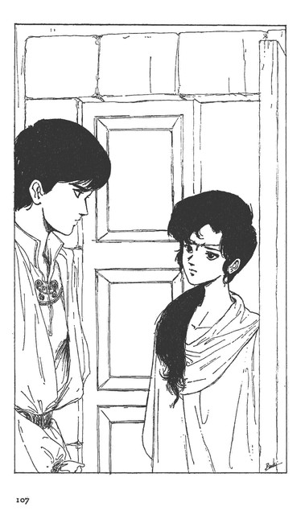

| [富野由悠季] オーラバトラー戦記02 | |
| 富野由悠季 | |
| (2015) | |
|
オーラバトラー戦記２ 戦士・美井奈
富野由悠季
|

オーラバトラー戦記２ 目次
序
１ 誘 拐
２ ハンダノの城
３ 嫌 疑
４ 美井奈の香り
５ 夢 精
６ 一号機
７ 戦士ミィ
８ 水の中
９ 地上人二人
10 流麗なり
11 白昼のガロウ・ラン
12 ニーのドーメ
13 ルーザとアリサ
14 ギィの閨
15 強獣たちの影
16 トレンの前
17 出 陣
18 海藻の中
19 バーンのカットグラ
20 空中戦
21 ジョクと美井奈
22 戦 争
23 幕舎の中で
24 ギィ・グッガの戦略
25 絶叫の向う
26 出会い
27 美井奈の帰還
序
城毅、通称、ジョク。
アの国では、戦士ジョク、もしくは、主人ジョクで通っている。
弱冠二十歳、城の主人である。
これが、ジョクが生まれ育った日本のことであれば、ジョクも有頂天になっていただろうが、アの国は、日本が存在する世界ではない。
それは、バイストン・ウェルと呼ばれる世界にある。
バイストン・ウェルの人々は、ジョクの生まれ育った世界を、地上世界と呼び慣わし、ジョクを地上人と呼んだ。
その呼び方の違いが、世界の違い、次元の違いを示していた。
そのために、ジョクは、バイストン・ウェルの人々と違う生体力（オーラカ）を持ち、地上世界以上の能力を発揮することができた。
かと言って、地上世界の人々が、全て、バイストン・ウェルで、特異な能力を持つ者として成功するわけではない。バイストン・ウェルに移動できること自体、すでに、その人のオーラ力が強いのだ。
そして、バイストン・ウェルの世界そのものの意思が、バイストン・ウェルに必要なオーラ力を持った人々を呼び込んでいるらしいのである。
ジョクには、まだ、そのように、バイストン・ウェルの世界と自分を位置づけて考える余裕はなかったが、彼は、不明な青年ではない。
発揮できた自分の力を、自分本来の力だと、うかつに思いこむことはなかった。
自己を錬磨し、研鑽して、精神力と知力を向上させなければならないと分っていた。
アの国は、地上世界で言えば、中世の動乱の世界に近い。
現代の東京周辺で生活する者の感覚をいつまでも引きずっていては、その中で生き抜くことは、とてもできなかった。殊に、都会育ちのヤワな体力は、深刻な問題だったし、戦士と呼ばれるに相応しい身嗜みを、身につける必要もあった。
その上、アの国が敵対しているガロウ・ランの一統との戦いは、ジョクに連続する恐怖と絶望を体験させた。
一度は、地上人の持つオーラ力の強さで突破できたものの、今後も、僥倖が重なるとは思えなかった。
１ 誘 拐
バイストン・ウェルの世界に住むコモンの人々に対して、ガロウ・ランは、それよりも一段下の人々と思われていた。
それは、バイストン・ウェルの世界の構造が、縦の層をなすと信じられ、ガロウ・ランたちは、コモンの世界を上に見るボッブ・レッスに、生まれ育ったと見られているからである。
では、コモンの人々が最上の人々かと言えば、そうではない。
コモン世界の天の上には、ウォ・ランドンと呼ばれる水の世界や、さらに光の世界があり、そこにも、人の形をしたものが生息していた。
しかし、それらも概念でしかない。
だが、コモン界からガロウ・ランたちの生息する界へ行くには、洞窟なり穴なりを、通らなければならないのも事実だった。
さて、そのコモン世界の一角、アの国の国境に近いアントバの山岳地帯から、今しも松明の光が鬼火のように流れ出たところだった。
地に低く跋扈する者、ガロウ・ランの群である。
彼等は、小型の馬にまたがって、闇に走った。
小型ながらも、強靭な耐久力を持つ馬、地上世界で言えば、驢馬に近い彼等の馬には、その額にポッコリとした角が生えていた。
その数は、十騎ほどである。
その集団は、松明の火だけを頼りに、高低の激しい足場を、かなりの速さで移動していた。
「ゼッ！ ゼッ！」
馬のロと、馬上の男と女たちの吐く息が、無遠慮に闇に吸い込まれた。
松明の光の中に浮かぶ馬上の男女たちは、一様に醜悪である。
オーラの光に当ったことがないと思える白い肌のものや、鼻とかロとか眼の位置を、正常に保つのを忘れたかのような形相を持った男女だ。
しかし、貪欲に敵を求める意思が、その異様な顔貌に貼りついた眼を鋭く光らせていた。
「コモン人を捕えよ！ 餌にしてもよい」
この号令を受けて、ボッブ・レッスとコモン世界の緩衝地帯、フェンダ・パイルを発したガロウ・ランは、闇の妖怪そのままに、狂暴な集団と化して、コモン世界の人々に襲いかかった。
しかし、今、走る輩は、ガロウ・ランの中でも、知的な一面を持った集団である。
彼等は、ギィ・グッガから、
「アの国の一角に降りた地上人を、拉致せよ！」
という命令を受けていた。
傍若無人に、コモン世界の人々を傷つけ、殺傷するのが目的ではない。
この集団は、「拉致する」という意味を理解し、実践するだけの知性と力を持つガロウ・ランの精鋭だった。
彼等は、昼は叢の中に眠り、暗い森を駆け、夜になると全力疾走して、目的の城、アの国の中心から少し外れた、ハンダノの城の領内に向った。
目的の城は、ハンダノの城に隣接するムロン・ギブンの領地にあった。
「アの国のドレイクに、召し抱えられた地上人ではないのだな？」
「別の地上人が、匿われている」
その情報を、ガロウ・ランの一統の領袖、ギィ・グッガが得たのは、ごく最近のことだった。
千を超える軍を指揮する男となれば、ガロウ・ランと言えども、軍略の意図を理解した。
彼は、コモン世界に出てから、情報を得る意味を知ったのである。
「空飛ぶ機械を作った男、それを操る男、それ以外の男か？」
「女だ」
「地上人の女？」
ギィ・グッガの手の者が、コモン界で下働きをする階層の男から聞き込んだのである。
「そんな女が、ギィ・グッガ様の力になるのか？」
「地上人は、コモンより力があると言うな」
「力はな、人を殺すだけのものじゃあねぇ......」
山を降りた十人のガロウ・ランたちは、木々の下に、石の塊のように身を寄せ合って、円陣を組んでいた。
彼等は侵攻の途中、そうやって何度となく言葉を加わして、自分たちの仕事についての理解を深め合っていた。
その中のリーダー格の男、ブラバが言葉を続けた。
「......獣を倒す力だけが力じやあねえ。機械を作れるのも力だぜ」
「キカイか？」
ガロウ・ランたちは、機械の概念を理解するには知識が乏しすぎたが、すでに、ドレイク軍のオーラボム・ドーメを知っていた。
「ドレイク軍の空飛ぶものが、機械だ。コモンの世界に出た俺たちを焼いたのは、あの空飛ぶ機械の火だ。あれが最初だ」
ブラバは、まだ機械を見ていない女戦士、ナラに言った。
「強獣ではないのか？」
「機械だ。堅い体。あっちこっちに伸びる腕。それから火が出る。翼はない」
『翼』という言葉を言う時、ブラバには、自分の博識を誇る気持ちがあった。彼は隣の女戦士ナラの膝頭を叩いてみせたものだ。
「グックク......」
ナラは、ブラバの掌の感覚に、自分の質問を忘れて、喉を鳴らした。
それに対して、ブラバも、話を聞けとは言わない。
相手が身をよじれば、それが面白くなる。ブラバも喉を鳴らして、ナラの膝の間から彼女の股間に手を滑らせていった。
「......戦いの話だ」
ブラバの片側に座った若い男が言った。まるで髪のない男である。
「......ああ？ そうだ。話は忘れてねぇ」
ブラバは、女の股間にやった手をひっこめもせずに、言葉を続けた。
「地上人が機械を作った。地上人が機械を動かした。その同じ地上人がいると聞き込んだ。だから、ギィは、それを攫って来いと言う。傷つけちゃあならねぇ。殺しちゃあならねぇ」
言い終るとブラバは、ナラの股間にやった手を休めて、少し考える風をした。
「分んねぇな......」
円陣の中から、そんな女戦士の呻きが漏れた。
「あの木にいる鳥の声が聞えなくなったら、ここを出て、ギブンの屋敷を襲う」
そう言うや、ブラバは、ナラの膝を抱いて、その身体を自分の方に向けさせた。
「やだよぉ......」
笑いを含んだナラの身体が震えて、その逞しい両脚がブラバの肩に乗った。
それを合図に、残りの八人の戦士が、流れるように草の繁みのなかに隠れていった。
それから数刻......。
十人の戦士たちは、藪を割り、繁みを跳ねて、ギブンの屋敷に迫った。
その屋敷は、麦畑の中央にあり、防風林と申しわけ程度の掘割に囲まれていた。
館の飼い犬が吠え、人の動きも見えたが、それもいつしか聞えなくなった。
ガロウ・ランの戦士たちが、生肉を与えて犬を黙らせたのである。
そして、さらに深夜、掘割を越え、屋敷の中に滑り込んだブラバの一団は、屋敷の情報を提供してくれた下働きの男と接触した。
「間違いなく地上人だな？」
「光と一緒に居間に現れるのを見たんだ。褒美の銀は持って来たな？」
「これだ......」
ブラバは、銀の塊を詰め込んだ革袋を男に見せ、手渡した。
「どこだ？」
ガロウ・ランの一団は、その下働きの男の案内で、ギブンの館の中の二階の部屋に案内された。
寝室に滑り込んだ下働きの男が、部屋のテーブルに置いてあるカードを示してブラバに言った。
「こんなものを見たことがあるか？ 地上世界の物だ」
ブラバは、その不思議なカードに、本物そっくりの顔がのっているのを見て、さらに、それがベッドに眠る女と同一の人物であるのを知って驚愕した。
それは、他のガロウ・ランたちも同じだった。
それは、日本の自動車の免許証なのだが、そのカードの材質も写真も、プリントされた日本文字も、ガロウ・ランたちには、摩訶不思議なものに見えた。
殊に写真は、圧倒的であった。
ランプの光の下に眠る女性と全く同じ顔が、鮮やかに小さくあるのだから。
「うーむ......」
彼等は、任務を忘れて、ベッドの中に眠る女性と写真を見比べ続けた。
戦士たちの中には、こぼれる涎に気づかぬものもあった。
その涎が、顔に当って、美井奈は目覚めた。
「............？」
しかし、その顔は、異形のガロウ・ランたちを見ても、わずかに眉をしかめるだけで、なんの反応も示さなかった。
美井奈──ジョクの大学の後輩である。
ロスアンジェルスで、ジョクのバイクが事故に遭った時に、ジョクの背中にかじりついていた少女だ。
「あ......？」
ややあって、かすかに息に似た声が、美井奈の唇から漏れた。
そして、
「ああ......！」
ようやく声になった。
その瞬間、ブラバの手が美井奈のロを塞ぎ、他のガロウ・ランたちが、その手足を押えた。
「............！」
恐怖に歪んだ美井奈の瞳が、ブラバの手の下で左右に走った時には、ブラバの戦士たちが熟練した手技で、美井奈の四肢を革紐で括っていた。
「では、ご苦労だった」
ブラバは、美井奈の始末が終ったと見るや、案内をしてくれた下働きの男に振り向き、その胸元に短剣を突き刺した。
下働きの男は、たいして声も上げずに、床に崩れ落ちた。
ナラが、その男から銀の入った革袋を奪い返すと、彼等は、風のようにギブン家を去った。
彼等に失敗があったとすれば、拉致するのが任務であると教え込まれたために、せっかく侵入したギブン家の者を、始末することを忘れた点であった。
しかし、地上人の女は、ろくに騒ぎもせずに、ブラバの部下に背負われていた。
「あんなのに力があるのか？」
ナラが、走るブラバの耳に、囁いた。
「地上人だ。間違えねぇだろうが！」
ブラバは、女戦士の考えが浅いことをののしった。
ブラバは、女が地上人であることを証明する自動車免許証を持っていた。それは、彼の仕事の成功を保証していた。
ブラバは、アの国は、自分に縁起がいい国だと信じて、闇を走った。
２ ハンダノの城
三方を池に囲まれたハンダノの城の上空に、オーラボム・ドーメが侵入した。
丸に近い形状の機体から、触手のようなアームを伸ばしたりもしたが、今は、そのアームも機体下部に収容されて、着陸態勢に入った。
とたんに、大きく機体が沈んだ。
機体上部のデッキ、プラットホームに立っている人影が大きくよろめいて、バーにしがみつくのが見えた。
「気を抜くからだ！ ニーッ！ 着陸ポイントを見ても、最後まで飛行していると思うんだ！」
ニーと呼ばれた、白人のように見える青年の足下には、四十センチほどの丸いハッチがあった。そこから東洋人の顔が、怒鳴っていた。
「分っていますが......！ ジョク！」
ニーは、バーから身を乗り出すようにして、城の中庭を見下ろした。城と池はひどく速いスピードで流れた。
「やり直せっ！ 今は、ニーがパイロットだ！」
「分っています！」
プラットホームの上に立つニー・ギブンは吠えた。
その不思議な形をした飛行物体は、再度高度を取ると、またも城の中庭めがけて降下した。
「あれー！ 速度が速すぎないか......」
中庭に面した格納庫の前に立った若者たちが、悲鳴を上げた。
機体の下部から、着陸用の車輪が出た。
ドウッ！ 中庭の芝生を派手にえぐりながら、オーラボム・ドーメが鎮座した。
「やれやれ......！ ジョクは、もの好きなんだよ。田舎騎士に操縦を教えるなんて、お城に聞えたら懲罰ものだぜ！」
格納庫を背にした若者たちが、ドーメの方に駆け寄って行った。
「牛を曳け！ 今度は、撃剣の稽古だ！ドーメをどかせっ！」
声を掛け合う城の若者たちは、騎士の候補生であろうと、下働きの者であろうと、生々としていた。
この城の主人、ジョクが地上人的ないいかげんさを持っているからだろう。
勿論、ジョクにしてみれば、城の主人らしく気張っているつもりなのだが、現代人と封建社会の人間には根本的な気質の違いがあった。都会育ちのジョクが、いくら頑張っても、この土地の人々のような主人になれるわけがなかった。
ジョクは、ドーメの機体のハッチを開いて、プラットホームから滑り降りるニー・ギブンを見やった。
「だいぶ馴れたが、着陸用の車輪を出し忘れたな？」
「あっ......！」
中庭に降り立ったニーは、慌てて機体の下を覗いた。
「俺が出したさ」
「どうも......馴れたとは、言えませんな」
「今日はどうした？ まるで元に戻ってしまった」
ジョクは、ステップを無視して庭に飛び降りた。
「さて、今度は、俺が生徒になるか？」
「は、はい......」
二人は、革鎧を脱ぎながら、ドーメの格納庫になっている棟に向った。
今度は金属製の鎧、板金鎧を着て、槍と剣の稽古である。
二頭の馬が中庭の左右から中央に向って走り、馬上のジョクとニーが、小脇に抱えた長槍を各々の胸元めがけて突き出す仕合である。
ガラッ！ ドウッ！
金属の鎧の軋む音と地上に叩きつけられる音がした。中の人間がどうかなってしまうのでは思うほどの音である。
落ちたのは、ジョクの方であった。
乗り手をなくしたジョクの馬は、一直線に格納庫前まで走り、ドーメの整備を始めた若者たちに追い返された。
芝と土にまみれた板金鎧のジョクが、ゴソゴソと立ち上るところへ、ニーの馬が歩み寄り、
「まだまだ！ 槍先が突きを入れる瞬間、迷っています」
ニーは、兜の面頬を上げると、ようやく持ち前の勢いを見せた。
「俺には、金属の鎧は邪魔なんだ......」
よろりと立ち上ったジョクは、そんな愚痴を言う。
と、その胸に、またもニーの長槍が繰り出された。
「ウッ！」
ジョクは尻から不様に倒れて、仰向けになった。
そのジョクにまたがるようにして、ニーの馬の四肢が迫った。
「ジョク様......。戦場ではとどめを刺すまでは、油断は禁物です」
「分っている」
仰向けのままジョクも面頬を上げて、角を持った馬の額の向うのニー・ギブンを見上げた。
「さ、鎧を脱いで！ 今度は楽にして、剣の稽古です」
「なにが楽なものか......」
ジョクは毒づきながらも、馬の下から這い出した。
ジョクの鎧を脱がせるために、周囲の若者たちが駆け寄って来た。
息が整う間もなく、鉄のフレームに革を張った楯を持ったジョクとニーの撃剣が始まった。
その稽古に合わせて、城に勤める若者たちも剣を取り合い、下働きをする男たちが、濡れた藁束を用意した。
「ン！......エエッイ！」
ジョクは、人の太腿の倍の太さの藁束に直刀を振り下ろし、剣を引き抜く。
これにも引く方向とスピードのかねあいが必要だった。
「クッ！」
肩当てだけのジョクの上半身は逞しく隆起し、痣だらけの肌に汗が噴き出した。これが一日の稽古の仕上げである。
「......大分、筋力がついて来ましたな」
ようやく、ニー・ギブンの実直そうな表情が、柔らかくなった。
彼も上半身は革の肩当てをしているだけで、オーラの陽にも焼けない白い肌を汗の玉で光らせていた。
「だからと言って剣を振りまわし過ぎないように。剣は、斬るよりも突くものです。ジョクを見ていると、剣を斬るものと勘違いしています」
「済まないな。日本刀のイメージしかないんだ」
ニーは苦笑して、
「ジョクの絵で日本刀がどういうものかは分りましたが、あれは理解できませんな。刀身と柄が別々の材質だと、人を斬る道具にはなりません。斬れたとしても、長持ちしません。すぐに、柄と刀身がガタガタになってしまう」
ニーは、またも持論を述べた。
「そう言うなよ。俺は、日本刀の専門家じゃない。刀身と柄を固定するいい方法があったんだろう」
「そうですか？」
ニーも刀を収めながら、ジョクを見下ろした。かなりの長身である。
「どうした？ 昨夜、夜盗に入られて、使用人が殺されたと言うが......？」
「は、はア......」
ギブン家に、美井奈が忽然と現れてから、どのくらい経ったろう。
美井奈の現れ方から、ギブン家の者にも、彼女が地上人らしいという推測は立った。
が、その女性が、何ひとつきちんとしたことを喋ってくれなかったことが、ラース・ワウに報告する機会を失わせた。
その直後に、ギイ・グッガとの戦いが激しくなり、ギブン家の主ムロンもニーも、戦場に駆り出されてしまった。
結局、ギブン家では、周囲には親族の者が病気治療に来たと触れ込んで、平静を装った。
戦争が一段落しても小麦の刈り入れで多忙を極め、地上人のジョクが、ハンダノに赴任したのを機会に相談をしようと思いながらも、一度、言いそびれた話は、なかなか切り出せるものではなかった。
そうこうするうちに、ラース・ワウのドレイク・ルフトから、嫌疑を掛けられても弁明の余地がないほど時間を経てしまったのだ。
しかし、今日か明日にはジョクに会ってもらえば、その女性の出生ぐらいは、分るのではないかとニーは思っていたのだ。
そんな矢先に、拉致されたのである。
しかし、こんな時期に、偶然、夜盗づれが地上人の女性をさらったとは思えなかった。
ギイ・グッガが関係している、と考える方が順当だった。
「......その事で、前々から御相談したいことがございました。自分には、想像もできない事件でして、聖戦士殿ならば、御判断できるのではないかと思いまして......」
「............？」
ジョクは、ニーのいつにない深刻な表情に、足を止めた。
「なんだ？」
「ここでは......」
ニーは、首の汗を掌で拭いながら、庭をぐるりと見回した。
「今夜、ぜひ、自分の屋敷まで御足労願えませんか？」
「今夜？......いいが？」
ジョクが、わずかに返事を迷ったのは、ひとつ気になる事があるからだった。
「そんなに、気になる問題か？」
「はい......夜盗と申しましたが、ガロウ・ランかも知れないのです。そのことで......」
ニーがさらに言葉を続けようとした時に、
「いらっしゃいますっ！」
城門の上の見張り櫓から、若者が大声を出した。
「おうっ！」
ジョクは、その若者に手を上げて応じ、ニーはロを襟んだ。
「お客様ですか？」
「ああ、いつもの......」
「では、畑仕事が待っていますので......今夜、来ていただけましょうか？」
ニーは、ジョクに客があると聞いて、今夜は来て貰えまいと思ったのだ。
「いや、行くよ。アリサ様は、夜には帰るから」
「ああ......！」
ニーは、ようやくホッとした表情を見せた。
「ジョク様っ！」
太った中年の女マタラーノ・マサが、本館の中庭に通じるドアを押し開いて叫んだ。
「おもてなしは、池の方で？」
「今朝、言ったはずだ。いつもの居間を使え！」
「はいっ！」
マタラーノは、ドアを開け放したままひっこんだ。
「ジョク」
「あ？」
「躾は、ちゃんとなさった方が......。ドアのノブを持ったまま主人に声を掛けて、ドアを閉じ忘れてひっ込むなど......」
「分った。言っておく」
ジョクは、ニーの肩を叩いて、城門を見た。
城門の木の橋を渡る馬蹄の響きが聞えたからだ。
「............!?」
ジョクは、城門を潜り抜けて来た馬の背に、アリサ・ルフトの姿を見つけて、口をあけたまま立ちつくした。
「......姫様！」
ニーは、アリサの姿を見るや慌てて格納庫に向って駆け出して行った。
「武術の稽古でしたか！」
アリサの屈託のない声が、馬上から飛んだ。
「............！」
ジョクが、ニーほどにうろたえなかったのは、育ちが違うからである。
上下関係のはっきりしている封建社会のなかで育ったニー・ギブンには、半裸の稽古姿を、身分の高い女性に見せるのは無礼だという意識があった。
ジョクにとっても、アリサは、主君の娘であり、かつ、自分の最も屈辱的な姿を見た女性として、特別な存在である。
この城を貰うきっかけとなった戦いの時、ジョクは、ガロウ・ランの領袖、ギイ・グッガの面前で、下半身を裸にされ、強獣の餌にされかかった。それを同じ捕われの身になっていたアリサに、見られているのである。
この屈辱と恐怖の体験を共有した者同士が、いつしか親しくなるのも、自然の成行きであった。
アリサは、自分を救ってくれた戦士を敬愛するというよりももっと深い親愛の情をジョクに見せるようになっていた。
そして、ジョクがハンダノの城に移ってからは、週に一度の割合で、遊びに来た。
それを、アリサの父、ドレイク・ルフトも許した。
彼は、アリサに、母のアリシアがガロウ・ランの凶刃に倒された悲しみを忘れさせることなら、なんでも認めたのである。
「アリサ......！ 馬をいじめるような乗り方は......！」
ジョクは、アリサの馬の轡を取った。
「私に乗馬の講釈をしようというのか？」
アリサは、マントをはね上げて、馬から飛び降りた。その乗馬ズボンは、ジョクのアイデアで作らせたものである。
アリサの乗馬ズボン姿は、はじめ、ハンダノの城の若者たちには、驚異的な光景に映った。
女が男のようなものを、身につける習慣がなかったからであるし、高貴な身分の女性が、脚の形をあらわにするものを身につけることなどは、想像を絶していたのである。
「私は、ジョクよりずっと軽い」
軽やかに言い放つアリサの淡いブルーの瞳は、ジョクにはどこまでも澄んで見えた。
ジョクには、もう、この瞳の色に捕われても良い、と思う気持ちがあった。
「......!? アリサ様！」
ジョクは、アリサの瞳に気をとられている隙に、アリサの手が自分のむきだしの腕に触れたのに気づいた。
「筋肉が堅くなりましたね。痣はますます増えて.........」
アリサは、微笑しながら、医者のようなロの利き方をした。
「......き、筋肉は柔らかい方がいいと、ニー・ギブンが言っています。偏った鍛え方をするから筋肉が堅くなるのだと......」
ジョクは、アリサの掌を包むようにして腕から離して、城門の木橋を渡って来る馬車を見た。
アリサの馬車を先導するのは、女性騎士ガラリア・ニャムヒーである。
ジョクと同じオーラ・ボムのパイロットに選ばれた騎士の一人である。
彼女の瞳は、相変らず鋭かった。アリサの供を命じられて面白くないのだろう。
「ガラリア、良く来てくれた」
「精が出るようだな」
ガラリアは、馬上からジョクを見下ろし、剣を鳴らして鞍から降りた。
「ニー・ギブンに習っていると？」
「ああ......。良い騎士だ」
「あんな田舎騎士がか？」
ガラリアは顎をしゃくって言った。格納庫の脇の出入口から、帰り支度をしたニーが出て来た。
「剣はたしかな腕をしている。それに、向学心もある」
「学問？ 奴がか？」
「学問のことだけではなかろう......」
ジョクが、言葉をつぐ間もなく、ニーがガラリアに挨拶をしたので、ジョクは黙った。
「グランキャの戦いでは、ギブン家の旗印を見なかったが？」
「......後方に付いておりましたので、戦場に入った頃は、既に......」
「よいよい、分相応の働きがある。後方の掩護がなければ、どんなに力のある部隊も働けぬのだ」
ガラリアはそんな嫌味を言うと、本館に向うアリサを追って、頭を下げているニーの前を擦り抜けた。
「気にするな。ニー。夜には、必ず行く」
ジョクもまた、ニーに低く言うと、アリサの後を追った。
３ 嫌 疑
ジョクがドレイク・ルフトから拝領したハンダノの城は、たいして大きくない池の中洲にあった。
城というよりは、館と呼ぶ方が似合う三つの建物で構成されていた。
城門とそれにつながる一棟と、本館からさらに池に突き出るようにしてある棟とである。
城門に接続する棟半分は、オーラボム・ドーメの格納庫に改造され、その格納庫の周囲に、雇った若者たちの寝起きする部屋があった。
本館の中央部だけが三階建てであるが、それでも六本の細い見張り櫓を持っているために、城らしく見えていた。
その本館につながる廊下を渡ると、池の中央に位置する別棟があり、その棟の外壁は、池に沈む構造になっていた。
その棟の中央はくりぬかれて、手漕ぎボートが着けられる桟橋になっていた。
それは、ジョクのような都会育ちの青年の目には、ロマンチックな構造に見えた。
その棟の居間から見渡す池と対岸には、人工的なものは一切見えず、池には数十羽の白鳥が浮かび、野鳥が舞い降りていた。
「カットグラ？ 完成したのか？」
ジョクは、ナイフとフォークの手を止めた。
「ああ......。ショット・ウェポン様もアの国の現状をよく理解してくれてな」
ガラリアは、パンでスープの皿を丁寧に拭っていた。
ショット・ウェポン。アメリカ人である。
彼は、ジョクよりも三年ほど前に、アの国に落ち、バイストン・ウェルの世界に満ちているオーラを吸引して推進するオーラ・エンジンを開発し、ドーメを完成させた男である。
今、話題に出たカットグラは、そのエンジンを使った別種の機体で、ドーメが爆撃機タイプとするなら、カットグラは戦闘機に当るオーラ・ファイターである。
「......と言うことは、ギィ・グッガの動きが深刻なのだな？」
「騎士向けの近況報告は、届いていよう？」
「ああ、ニーに読んで貰っている」
ジョクは、まだアの国の文字は読めない。
「ふむ......。で、な、私が貴公の招聘に来たという訳だ」
「何時だ？」
「明日、オーラ・マシーンのパイロットにラース・ワウへの召集がかかっている」
「ガラリア、私は、そんな話は聞いておりませんよ」
アリサが、口を挟んだ。
「姫様が知る必要はないことです。私も、お父上からアリサ様に伝言せよという命令は、受けておりません」
「............」
「供としてニーを連れて行くが？」
「......問題なかろう。ジョクが城でどう暮しているのか見たかったので、今日のお供は良かった」
「どうなんだ？」
「ハハハ......。当り前すぎてガッカリした。もう少し、地上世界の物を作らせて、部屋部屋を飾っているのかと思った」
「すまないな。俺の国では、こういう調度品が流行っている。アンチックに暮すのが、ナウイってさ」
言葉を理解するのではない。ジョクの意思、ジョクの意識する内容が、ガラリアとアリサには分る。
「そういうものですか？」
「と言うことは、未来の我々の暮しは、どうなる？」
「オーラ・ボムの装甲に使う材料で、家庭生活に使う道具が作られ、オーラの車を誰でも持つようになる。馬は少なくなるから、特権階級だけが、趣味で馬に乗るってね......」
そんなジョクの他愛のない話が、食卓を飾った。
食後、騎士候補生の若者たちの相手をするガラリアを置いて、ジョクとアリサは、城の外に出た。
オーラの光は、まだ全天をおおっていたが、かすかに夕方の気配の風を運び始めていた。
雑木林を抜けて、小高い丘に上った。
アリサは、ジョクの腕にぶらさがるようにした。
「すみませんが、力、抜いて下さい。擦り傷がヒリヒリする」
ジョクの言葉に、アリサはコロコロと笑った。
丘の上からは、一方にギブン家の領地の畑が一望でき、振り向けば、ハンダノの城が木々の間に見えた。
理想的な田園風景である。
「............」
ジョクは、フーッと息を吐いた。
ジョクには、ここで、無事に一生住めるとは思えなかった。
記憶に焼きついたガロウ・ランの恐ろしさが、よみがえってくるからだ。
かと言って、ふたたび東京やロスに戻れるとも思えなかった。
「............」
ジョクは、草の上にマントを広げた。
「......父は、政略結婚を考えているようです」
ジョクの隣に座ったアリサが、ようやく胸に溜め込んでいた愚痴を口にした。コトッとジョクの頬にアリサの頭が乗った。
「喪もあけないのに......？」
「正式な結婚は、喪があけてからでしょう。でも、ガラリアの言う通り、今のアの国の情勢は、強力な軍を必要としています。ギィ・グッガと戦うためには、新しい兵が必要なのです」
「で、政略結婚ですか？」
「古い父の友人が、父に遺言を残して死んだのです。その遺言を父は果すと言って......」
「未亡人と結婚なさるのか？ その国、いや、国ではないですね？ウルですか？そこの人たちは、ギィ・グッガと闘うアの国と合併するのには反対でしょうに」
「ギィ・グッガがアの国を呑み込めば、次は自分たちの番だと承知しています。なら、地上人が降りたアの国と一緒になって闘えば、勝てるかも知れないと信じています。ですから、結婚は早くなります」
「そのウルの女王は、どうなのです？」
「どうって？ 父を愛しているのか、という意味？」
ジョクが聞こうとしたのは、国の問題であった。
しかし、十代のアリサが、愛の問題と考えてしまう気持ちも、分った。
「......そうです」
「ルーザは、地上人が降りるアの国を欲しいだけです。父と結婚すると言うのも、地上人が欲しいからです。大体、リムルとかっていう子供だっているのですよ」
「地上人が、アの国にだけ降りる？」
ジョクは、アリサが問題にしている新しい妹のことは無視して、アリサの言いようを気にした。
「......あの水牢にいるフェラリオのせいですよ。けがらわしい！それだけのことです」
「そうですか......」
ジョクは、それだけとは思っていない。が、ラース・ワウの水牢の中にいたサラーン・マッキの姿を思い浮かべていた。
それは、コモンの世界に降りて来たふしだらなフェラリオであると言う。
本来は、天にある水の世界に住むフェラリオである。
風が湿気を漂わせ、夕方を感じさせた。
「ああ......。アリサ様、そろそろお帰りの支度を......」
「あす、ジョクはラース・ワウに行くのでしょう？一緒に帰ります」
「え......？ いつもは日帰りなのに」
「ハンダノには、私のベッドは作れないのですか？」
「ですが......」
ジョクが動揺したのは、ベッドという単語からセックスを連想する癖があったからだ。
アリサは、ジョクの混乱した思いを感じ取って、
「なにが困るのです？」
と、きつい言い方をした。
「......お父様は、外泊を許可なさったのですか？」
「父は、ここに来ることに対しては、何も申しません。むしろ、新しい結婚のことを考えて、私を邪魔だと思っているのです」
そのアリサの言葉は、一層、ジョクを困惑させた。
「自分が困ったのは、食事の用意をさせていませんし、今夜、ニーが相談があると言うので、出掛ける予定があったので......」
「それだけ？」
「そうです」
勿論、テレパシーはあるが、言葉で伝達する意味の方が、強く作用する。
人間は、初原に持っていた能力を、後から身につけた技能、知識で抹殺していく秀れた能力を持つ動物なのだ。
「本当ですよ。アリサ様が泊って下されば、城の格が上るというものです。しかし、食事は......」
「よい、いつもジョクが食べているもので」
「気の利いた下働きの者がいませんが、よろしいですね？」
「その様子を見るためにも、突然、泊ってみせるのです。使用人には良い訓練になりますよ」
それは、主婦のロの利き方だとジョクは思った。
「成程ね......。でも、ニーの処には行きますよ？」
「許します」
アリサは、木当にジョクの妻になるつもりのように見えた。
４ 美井奈の香り
夕食は、またもアリサとガラリアとジョクの三人になった。
「アリサ様、私は、仕事を持って参りましたので、これで失礼致します」
「こんな処でも、仕事か？」
「はい......。このような時勢ですので......」
「どういうことだ？ ガラリア」
「ニーの家に行くと言ったな？ 付き合いたいが？」
「そりゃ、まずい。ニーの個人的な相談だ」
「なら、いい」
ガラリアは、茶もそこそこに居間を立った。
「アリサ様、ろくな本も置いてありませんが、図書室には、風を通させました」
「好きにさせてもらう。気にするな」
で、ジョクが出掛ける支度をするために廊下に出ると、革鎧を着たガラリアと出会った。
「なんの仕事だ？」
「ニー・ギブンの領地に、嫌な噂がある」
「............？」
「土地付きの騎士というのは、我々、成り上りと違うのだ。しぶといものでな。何を考えて、どこに付いたら良いかといつも上を窺っている」
ガラリアは、ジョクを探るような眼つきをした。
「なんの嫌疑があるんだ？」
「ジョクは、ギブン家の領地に降りた地上人と会っていないのか？」
「あ......？」
「分ったよ。ジョク。貴公は、ウソを言えん性質だ。ムロンとニーは、地上人があれらの領地に降りたのを、ラース・ワウに報告していない」
「......!? そんなにたびたび、地上人がバイストン・ウェルに降りるものなのか？」
「分らんから、調べる必要がある」
「フム......」
ガラリアは、ニヤッと白い歯を見せると、まあ、行って来い、とジョクの肩を叩いて、城の玄関口に向った。
ジョクが、ミハン・カームに馬を曳かせた時は、ガラリアの姿は見えなかった。
「ガラリアは、どうした？」
「外に手勢を待たせていました。ジョク様も、御承知だとおっしゃっていましたが？」
彼は、アリサの捜索に出かけたとき以来、ジョクの部下になった男で、ジョクの話をよく聞きたがる青年だった。
『ガラリア奴......手勢を伏せているという話は、一切なかったぞ』
そう思いつつも、ミハンには、承知していると、鷹揚に答えてみせた。
「きつい方ですな。すべて、御自分でおやりになさろうとする」
「だから、女性で只一人、オーラ・マシンのパイロットになれたのさ」
ジョクが、ニーの屋敷の門を入ると、キーン・キッスと名乗る少女が、案内に出た。利発そうな少女で、剣を習いながら、屋敷の手伝いをしていると言った。
「すぐに降りて参ります」
キーン・キッスの細い頬と顎が、気の強さを見せていた。ギブン家とは昔からの主従関係だと言う。
「おお......聖戦士殿......」
キーンに代って、この館の主、ムロン・ギブンが杖を手に現れた。
「子細は、息子から報告させますが、誠にもって、どうも......」
田舎騎士の朴訥さと、用心深さを持ったその老人は、後の言葉を全く忘れたという顔をして、居間の隅のベンチに腰を下ろした。
「父上は、もう休んで下さい。結構です」
ニーの言葉に、ムロンは、ジョクの横顔を窺うようにして、退出した。
「こちらへ」
ジョクは、二階に案内された。
「............!?」
息を呑むというのは、こういうことを言うのだろう。
ニーが、その部屋に入って、ジョクに差し出したものを見て、ジョクは上体が震え、心臓が止まるのではないかと思えた。
ジョクの震えを見て、ニーも動揺の色を見せた。
「どう......なさいました......？」
二ーは、自分がひどく間違ったことをしたのに気づいた。
ニーは、ジョクがあまりにも長くニーの手元を見つめているので、差し出したパスポートをテーブルの上に置こうとした。
「............!?」
ジョクは、その美井奈のパスポートを奪うように取り上げると、美井奈の写真のあるぺージを凝視した。
「御友人だったのですか......」
ニーは、ジョクの意識が、美井奈の名前を呼び続けているのを感知して、絶望的な思いに駆られた。
「そうだ！ どこで手に入れた！ いつ、どこで手に入れたんだ！」
ジョクは、顔を上げて噛みつくように聞いた。
「いつ......」
ニーが、一番言い出しにくいことだった。
「どこに居るんだ。この子はっ！」
「......どこにと申されましても......」
ニーは、ジョクの剣幕にしどろもどろになった。
「どこに居る!? いや、美井奈が、ガロウ・ランに擢われたのかっ!?」
「ガロウ・ラン？ そ、そうです......さらわれました......」
「貴様ぁ......！ 地上人だと分っていて、なんで、早く知らせてくれなかったんだ！」
「ジョク様、落ち着いて下さい。説明を、説明をさせて下さい。穏便に......い、いえ、ジョク様の友人であれば、驚かれるのも分りますが、わたしたちにも......」
ニーの必死の言葉に、ジョクもようやく事情を聞かなければならないと気づいた。
「......なんだ。一体、なにがあったんだ!?」
ジョクは、ニーの説明を聞けば聞くほど、美井奈とギブン家の間に生じた問題が、あまりにも違う世界に住んでいた人同士であるために、起ったことであると分った。
しかし、納得できることではない。
昨日まで、美井奈は、ジョクのすぐそばに住んでいたのである。
美井奈が、たとえ記憶喪失症や心身症であったとしても、ジョクに会っていれば、そんな病気ぐらい治っていたかも知れないのだ。
「なんで......！」
「お詫びのしようがありません。聖戦士......」
二人の会話は、ガラリアが放った密偵によって、全て盗聴されていた。
そして、それからたいして時間を置かずに、ガラリア・ニャムヒーが、ギブンの屋敷の戸を叩いた。
「今は、主人は、お客様です。お入れするわけには参りません」
キーン・キッスは、少女らしい毅然とした口調で、夜の闖入者を拒否したが、ガラリアは、
「子供の話じゃないんだよ」
と、強引に二階の部屋に上って行った。
「ガラリア......？」
「ラース・ワウでも、この屋敷に、地上人が匿われているという噂を聞いたのだ。と言うことは、ガロウ・ランが来ても、不思議ではないと言うことだよ。ニー」
そのガラリアの言葉を聞いた途端に、ジョクは、またも怒りと侮しさに襲われた。
「しかし......俺だけは、隣にいた俺だけは、美井奈がここにいるのを知らなかった！」
「同情する。ジョク」
ガラリアが、ジョクの手を取って、慰めてくれた。
「ニーが、決断と勇気を持っていなかったせいだ」
「............」
「盗み聴きの無礼は許して貰いたいな。ニー。しかし、いいか。ギィ・グッガは、恐ろしい敵だ。我々が、オーラ・ボムを駆使し、地上人の力をいかに使っているか、その秘密を知りたがって、躍起になっているのだ。戦場に出て忙しかった、そんなことで、ミイナ様の降下を報告しなかったとは、許されん。ミイナ様は、ジョクの友人である。どんな能力をお持ちの方だったかと思うと、この失策、覚悟するがいい」
「............」
ニーは、黙るしかなかった。
が、ジョクは、ガラリアがそう言っている間に、必死に平静になろうとした。
『......美井奈に、どんな能力があるか......そんなことは知らない。日本人的な可愛い大学生でしかない......動揺したのは、一緒にバイストン・ウェルに降下する直前に、ロスの宿舎で、ひと晩ともに過ごしたからだ......』
そう頭の中で言葉を並べた。
『俺は、この国で生きていかなければならないんだ。美井奈は、ただの後輩だ。この国で、生き死にを賭けて、生き延びるためには......美井奈なんて娘にかかずらわっていたら......生き延びられない......ハンダノの城がなければ、俺は、生きていく基盤がなくなっちまうんだ......』
そう思い込もうとした。だから、
「ガラリア、言うな。あの娘は、そういう娘じゃない。問題にすることはない......」
そう言い切ってみた。
「私は、将来の危険も考えているんだ。ジョク。ミイナ様は地上人なんだぞ！考えざるを得ないではないか」
「分るが......彼女の病状は、正確には分らないんだ」
ジョクは、美井奈が、自分も識別できない重症であることを祈った。そうであれば、容易に忘れられると思ったからだ。
「ミイナ様に、話しかけますと、いつも、光が飛びかうような意思が感じられました。それでいて、鳥のように怯えていらっしゃいました」
ニーは、ようよう説明をしてくれた。
「......そうだ。地上人ならば、そうだ」
ガラリアが、憂鬱そうに言い、
「......不幸にして、わたしの任務は、簡単に終ってしまったな」
ガラリアは、先にハンダノに戻る、と部屋を出ていった。
「俺も、明朝ラース・ワウに行かなければならない。貴公を供に連れて行く。いいな？」
「は、はい」
「......美井奈が身につけていたものがあれば、譲ってくれ。この屋敷の居間に、現れた時のものがあれば......」
ニーは、キーン・キッスを呼んで、美井奈が身につけていたものを取り出させて、銅板で飾られたオーク材の小箱に詰めさせた。
『この部屋に、あの肢体を見せてくれた美井奈が、身体を横たえていたのか......』
ジョクは、キーンが、丁寧にニーの言いつけた仕事をしている間、部屋のすみずみを見回して、胸が熱くなった。
気が強いくせに、まだ自分の主義を持てない少女が、自分がどこにいるか分らずに、うつろな瞳を這わせていた天井......。
「............」
嘆息だけが、こぼれた。
先進国の中でも、異常に発展した東京育ち、脆弱な癖に、趣味がよく、理想だけは高い、大人になり切れない少女が......。
『......クソッ！ 忘れられない！......』
しばし襲った感慨に、ジョクは、他のことを考えようとして、ニーに言った。
「......サラーン・マッキが呼んだのならば、同じ場所に降下してもよかったのに、なんでだ......？」
「分りません。しかし、ここもラース・ワウからは、それほど遠い場所ではありませんから......」
ニーは、床に顔を伏せるようにして、答えた。
「アの国全体に、地上人を呼び込む力が、あるのではないのでしょうか？」
キーン・キッスが、ジョクに箱を差し出しながら、ひそやかに言った。
「そうか、そういうものか......？」
「多分......」
キーンの黒い瞳が、ふっとジョクの視線を避けた。
そのことが、解けない謎となってジョクの胸に残った。
しかし、こんな世界である。全てに、論理的であれ、と言う方が、おかしいとも思っていた。
５ 夢 精
ハンダノの城に戻ったジョクは、アリサがすでに寝入ったと聞いてホッとした。
「アリサをはじめて見た時、俺は、彼女に美井奈の面影が、あると思った......」
その意識をアリサに読み取られて、ジョクは彼女にののしられたことがあった。
そんなことを、寝る前のシャワーを浴びながら、ジョクは思い出していた。
たいして時間が経っているわけではないが、ジョクの感覚の中では、はるか昔のことに思えた。
それだけ、怒濤のような体験が重なったのだ。
「ロスに美井奈が来なければ、飛行機のライセンスが取れて、今頃は、大学で威張っていたさな......」
ジョクは、ベッドに入る前に、ウィスキーを口にしながら、ニーから譲り受けた美井奈の品物を取り出した。
美井奈が、ジョクに会いに来た時に着ていた衣裳一式と、デイパック。その中には、アメリカ西海岸の観光案内のパンフレットや、普段、女の子が持つものが入っていた。
ジョクが、忘れていた地上の匂いである。
「............」
なんでこんなことになってしまったのか、そんな慨嘆がジョクに深酒をさせて、彼を寝入らせた......。
バイストン・ウェルに降りてからのジョクは、いつも緊張していた。
ハンダノの暮しは苦しくはなかったが、領地の住民たちとの顔合わせ、土地を視察、軍の警備網の整備と多忙であった。
それに、領内の農業と林業の現状を、城付きの官吏から学ぶだけでも一日が終った。
だから、ベッドに入るとドカッと眠り、翌日は、義務感にとりつかれて起きる、そういった毎日が続いていた。
「............？」
翌朝、ジョクは、夢精している自分に気づいて、狼狽した。
美井奈の衣類を抱え込むようにして、寝入ったからだろう。
が、不幸に泣きながらも、こんなことになる自分の身体を、異常ではないかと疑った。
「......少し、余裕が持てるようになったのさ......」
濡れた下着を取り替えながら、ジョクは、自嘲気味に理由をつけてみた。こんなことは、バイストン・ウェルに降りて、初めてのことなのだ。
気持ちがささくれ立ったジョクには、恐怖と嫌悪に襲われる夢はあっても、夢精するようなセクシュアルな夢などはなかった。
サラーン・マッキのような妖艶なフェラリオを知っても、そうだった。
しかし、
「美井奈......どうしたか......？」
現実的な不安を思うと、なにかしなければと思うものの、領地を放り出して捜索するわけにもいかなかった。
アリサの時とは、事情が違うのだ。
「記憶が戻らない方が、美井奈にとって幸せかも......」
ジョクは、美井奈のものをひとつ箱に戻して、銅製の鍵を掛け、それを洋服ダンスの中に収った。
「......ガロウ・ランに弄り廻されるんだ。美井奈を人質に脅かされても、屈伏はしないし、動揺もしない。美井奈は、苦しみを感じない状態のままで......」
その後の言葉は呑み込んで、ジョクは、洋服ダンスの扉を閉じた。
＊ ＊
ジョクとガラリアがプラットホームに立ち、ブリッジにアリサとニー・ギブン、それにコ・パイロットのキチニ・ハッチーンが立った。
そのオーラボム・ドーメは、一気にラース・ワウまで飛行する。
結局、アリサの馬車は、行きも帰りも主人を乗せることなく、ラース・ワウとハンダノの間を往復しただけである。
ドーメのメカニックマンたちは、その馬車を送り届けながら、ジョクたちを追うことになった。
馬で三、四時間かかる道程も、ドーメならば、アリサに観光飛行をさせながら、朝の集合時間前には到着できた。
ドーメは、ラース・ワウの巨大な城壁を越えて、本館の前庭に着陸し、アリサとガラリアを下ろした。
その後、ジョクは、ドーメを『機械の館』の前に移動させた。
「凄いものですな......」
ニーは、拡張された機械の館の活況を見て、感嘆の声を上げざるを得なかった。
それは、ジョクにとっても同じだった。
「ドーメの増産、カットグラの建造、アの国の建国以来の活況であります」
ジョクは、機械の館の警備を任されているドブルク部隊長から、久しぶりに得意の言葉を聞かされた。
「装甲の工場を、郊外に移転する計画もすすんでいます」
この朝は、ショットもバーンも城に真直ぐ入ると聞き、ジョクとニーは、馬を借りて城の本館に向った。
ジョクは、騎士の溜りの間に入ると、ニーを残して、ドレイクの執務室に向った。
ドレイク・ルフトは、ガラリアから、昨夜の報告を聞き終ったところである。
「世話を掛けた」
それが、ドレイクの最初の挨拶だった。
ジョクは、ドレイクの機嫌の良さに、アリサが生まれて初めての外泊に興奮して、一切のことを報告したのだと分った。
「......ガラリアから事情は聞いた。ギブン家のことは、ムロンになんらかの責任を取らせる。ニーの処分は、一考の余地があるが、本当にミイナという女性は、利用価値がない女性なのか？」
「......普通の学生でしたし、ニーの証言を信じれば、ガロウ・ランにさらわれるまで、正常でなかったのです。ガロウ・ランにとって、利用価値があるとは思えません。それに、自分にとっても、彼女は、無視せざるを得ない存在です」
「どういうことだ？」
ドレイクは、禿頭を揺すって聞いた。
「大学での先輩、後輩の関係でしかありませんから」
ジョクは、言いながら、その言葉が、半分以上ウソだと自覚していた。
「......バーン・バニングス、どうか？」
ドレイクは、執務室に入って来たバーンに尋ねた。
「自分はジョクを信じます。ジョクは、アの国で生きて行くために、何をしなければならないか、十分承知をしている騎士であります」
ジョクは、そのバーンの解釈を有難いと感じた。
『......しかし、本当に、美井奈を切り捨てることができるのか？この世界では、切り捨てと言う表現は、比喩じゃないぞ』
そのジョクの心の中を見透かすように、ドレイクが聞いた。
「その娘と寝たことがあるな？」
「......!? 一度だけ......」
「そうか......。分った。ギブン家の処罰は......」
「ドレイク様、もうひとつ、御報告させて下さい」
ジョクは、隠しだてをすることが危険だと感じて言った。
「言ってみろ」
「はい......。自分は、ニー・ギブンにオーラ・ボムの操縦を教えました。許可なく操縦を教えたことについて、処罰を受ける覚悟であります。が、なにとぞ、彼の技量をお含みの上、彼の処罰を御一考いただきたいと、お願いいたします」
その場が、しんとなった。
この報告で、全てのことがジョクを中心に連続して起きたという印象を与えたからだ。
「全くな、ジョク......」
ドレイクは、かすかに呻いたが、
「裁量の時間を貰う」
そう言って、三人に退室を命じた。
「気にするな。ニーのことは、知っていたよ。ジョク」
謁見の間に向う間に、バーン・バニングスが、ジョクの肩を叩いて慰めてくれた。
「だからさ、ラース・ワウの訓練に、ジョクもニーも呼ばなかったのさ。ドレイク様も承知のことだ」
二人の前を行くガラリアが、そう補足した。
狭い国なのである。なにごともラース・ワウに、聞えているのだ。
「さっき報告をしなかったら、本当に懲罰ものだ」
そのバーンの言葉を聞いて、ジョクは、謁見の間に入った。
そこには、アの国のお歴々と主だった騎士たちが参集していた。ドレイクがショット・ウェポンともども姿を見せると、すぐに会議が始まった。
政治向きを司る重臣からの現状報告、続いて、作戦参謀のマタバ・カタガンが、軍事的な観点から現在の動向を説明する。
「......ギィ・グッガの軍は、ミの国の西に沿って、我が国に南下している。ミの国のピネガン・ハンムは、ただ息を詰めてギィ・グッガの軍の通過するのを待っている。ギィ・グッガでさえも、奪うものがない国であるのに......」
その言葉に、謁見の間は、失笑に湧いた。
「あそこの女は悪い」
「騎士もそうだ。気骨がない！」
選ばれた人々の気位の高さが、そんなことを言わせるのだろう。
『......？ 攻められることが、国の価値を証明するのか？』
ジョクは、そう思うしかなかった。
「ギィ・グッガの軍が、我が国の属領であるウルを席巻する気配もある故に、ルーザ・ウル女王は、これを機会に、我が軍の傘下に入る予定であります。我が軍も、戦力強化の一環として、これを迎え入れ、オーラ・ボムの威力を、ウルの将兵に理解して貰う演習も急ぎ行なう......さて、ここでショット・ウェポン様から、オーラ・ボムと連携する新しい機械についての説明をしていただき、我が軍の最新鋭の戦力を、お歴々に御理解いただきましょう」
マタバに代って、オーラ・マシーンの開発者が、演台に上った。
彼は、生まれながらのアの国の人という風に、灰色の長いローブ風の衣裳を纒っていた。
傲慢な感じは、一層強くなっているように見えた。
ショットは、オーラ・フアイター、カットグラ開発の経緯を簡潔に説明してから、
「......カットグラの一号機は、バーン・バニングス殿に割り当てるが、続く二号機、三号機の完成までの間、ガラリア殿とジョク殿の慣熟飛行訓練は、一号機でお願い致す。同時に、昨日までのオーラ・ボムの訓練飛行に、本日よりジョク殿の一機を加えて、日毎、増えるパイロット候補殿の要望に合わせます......ドーメの増産は順調で、カットグラと同様、順次、軍に引き渡すことが、可能であります。これらの生産が順調でありますのは、偉大なるドレイク閣下の御賢察があればこそと、心より御礼申し上げる次第であります」
ショットは、慇懃にドレイクに礼をした。
それに合わせて、居合わせた人々から、賞賛の拍手が沸いた。
しかし、この民主的に見える会議も、これが最後だった。
以後、アの国ではこのような形の会議は一切もたれなくなった。
バイストン・ウェルのオーラカが、アの国に集中して、本来のおだやかな人々のつながりが強権的な力で、押し流されていったからである。
「......なんか、いびつだな......？」
ジョクは、得体の知れない力が、この謁見の間全体を包んでいるのを感じた。
しかし、その行き着く先の、是非を想像することはできなかった。
美井奈の問題が、ジョクの心を占め続けていたからだ。
「......本議会は、これをもって終了する。引き続き、パイロット候補の騎士殿には残っていただき、顔合わせに入る」
議事を取り仕切るマタバ・カタガンの言葉で、政治向きの重鎖たちが退出して、代って、パイロットに選ばれた身分の低い騎士たちが入って来た。
その中には、ニー・ギブンの姿もあった。
６ 一号機
アの国の軍事専門家たちは、美井奈の拉致事件を、ギィ・グッガの新たな動きと判断した。
それは、オーラボム・ドーメとカットグラの訓練飛行にまで影響をおよぽし、飛行訓練は、偵察飛行を兼ねて実施された。
さらに、ジョクの場合は、教官としてパイロット候補を指導しながら、カットグラの操縦訓練もやるのである。
カットグラについては、飛行の度にその報告書を作成して、ショットに提出しなければならなかった。
これをジョクは、日本語でも、アの国の言葉ムズラーでも書くわけにいかなかったので、肌身離さず持っていた小型の英和辞典ジェムを頼りに、英語で書いた。
「異世界で、英語の勉強をするとはな」
くたくたになった身体で、報告書を書く時、ジョクは罵り続けたものだ。
さらに、ハンダノの城からは、四日に一度の割合で、官吏のヤエー・ウーヤが、城の収支計算書を持参して、間違いなく一時間の報告をするのである。
「任せる。一段落するまで、任せる」
「それでは、私がお給料をいただく理由がなくなります。私の家族を路頭に迷わせないで下さい」
ヤエー・ウーヤは、哀れっぽく言った。
それは、ガラリアやアリサには、よほど滑稽な光景に映ったらしく、ラース・ワウの評判になった。
その間に、属領の女王のルーザ・ウルがラース・ワウに人ると伝えられた。
「式もやらずに？」
「喪があけるのを待つ間はありますまい。ギィ・グッガの戦争と一緒になっているのですもの」
アリサは、憂鬱そうに言った。
前妻のアリシアの評判が良かったために、ドレイクの再婚話は、城の内外で歓迎されなかった。
しかし、ドレイクが、賢夫人の誉れ高かったアリシアに疲れて、中年の魅力を湛えたルーザに心ひかれたというのも、容易に察しがつくことだった。
「新しい妹が、気に入らないのですか？」
「いえ、仲良くやれそうです......。でも、父の再婚を認めたくないの、分るでしょう？」
アリサは、そんなことを言いに、ジョクの部屋に来た。
そんな人々の心の揺らぎも、戦雲がたちこめるラース・ワウでは、些細なことだった。
ウルの兵がアの軍に編入され、カットグラの二号、三号機が、明日にはロールアウトするという日、ジョクは、いつものように、偵察を兼ねた慣熟飛行に飛び立った。
六機のドーメと一機のカットグラが、ラース・ワウの上空で、その威力を誇示する編隊飛行を組んでから、ジョクのカットグラは、一人、南のコースに入り、国境の偵察に向った。
カットグラは、人の形をしたマシーンである。
胴体中央にコックピットがあり、そのハッチは、マジック・ミラーと同じ性能を持っていた。外から見ると周囲の装甲と同じに見えるが、コックピット側からは透明に見えて、フロント・ガラスの役割を果した。
これらの装甲は、強獣の甲殻を加工して強度を増したもので、軽くて丈夫なのは、ジュラルミン以上である。
動力とコントロールは、オーラボム・ドーメと基本は同じなのだが、パイロットは両脚と腕を使って、コントロール・レバーとバーを操作した。
設計者のショットが秀れていたのは、人型の基本の動きを、強獣の脳細胞を使った一種のバイオ・コンピューターを搭載して記憶させたことである。
そのバイオ・チップは、猿に似た強獣の運動機能を司る脳細胞と三半規管をつなげて、カットグラの基本となる動きがなされるように設計されたために、カットグラの、立つ、走る、座るといった動作は、パイロットがそう考えるだけで実行させることができた。
それ以上の意思の伝達は、強獣の神経系の繊維を使い、コントロール・レバーとバーを刺激して行なわれるのである。
飛行するためのオーラ・ジェットを装備してはいたが、カットグラの飛行姿勢の細かいコントロールは、背中に装備した羽根によって補われていた。
半透明の羽根は、トンボの羽に似ていると思えばよい。
カットグラは、ドーメより軽快に、ドーメよりも速く飛翔した。
「......ガリガリ......！」
鉱石ラジオ・レベルの無線機は、雑音を発するだけだったが、いつか電波を受信している音に変っていた。
「............？」
ジョクは、カットグラの機体の方向を変化させて電波を正面に捕えた。
「強獣......！」
「......退避だっ！」
「攻撃できますっ！」
そんな幾つかの声がノイズの向うに聞えた。
「強獣!?」
北上したドーメの編隊に、異変があったようだ。
キュルル......！
ジョクは、自分の『気』を統一すると同時に、カットグラを加速して山々の峰をかすめるようにして、北に向った。鉱石ラジオの音は、次第に大きくなった。
強獣が、オーラ・ボムの編隊に襲いかかって、一機を撃墜したらしい。
「............！」
ジョクは、前方の空域を凝視して、一刻も早く現場を視界に入れようとした。
ポッカリと浮かぶ雲が、左右に幕になって流れていった。
「カットグラ！ 一号機！ ジョク！」
機械の館の無線が入った。
「オーラ・ボムの交戦空域に向っている！ どうぞ！」
「ラース・ワウに戻れ！ オーラ・ボムの編隊は、後退した！」
「了解っ！」
わずかに左に転針して、カットグラは、ラース・ワウの上空に入った。
機械の館にそった広場に、最後のドーメが、着陸したところである。
ジョクは、その上空をパスして、ドーメが五機だけなのを確認した。
ジョクと違って、バイストン・ウェルの人々がマシーンに馴染むのには、数倍の時間がかかるのだ。
そのパイロットたちが、訓練飛行の途中で、空飛ぶ強獣と接触した場合の驚愕は、想像するにあまりあった。
ジョクは、カットグラをドーメの前に降下させ、コクピットのハッチを開いた。
「ドラゴ・ブラーです！」
馬に曳かれた木製のタラップがコックピットの前に接触し、それに乗っていた兵が、興奮してジョクに報告した。
「強獣か？」
「あ......。そうであります」
ジョクがこの世界のことを十分に知らないのに気がついた整備兵は、ドラゴ・ブラーの説明をしてくれた。
「ハバリーではないのか？」
「あんなものじゃありません。もっと狂暴です。大体、アの国にはいないのに、ギィ・グッガが、連れて来たんです！」
「ドラゴ・ブラーと言うのか？」
「は、はい！」
ジョクは、タラッブを降りると、ドーメのパイロットたちが集まる場所に、駆け出して行った。
「バーン！」
「ン！ ドーメに乗ってくれ！ 追跡する。どこから出て来たのか、その方位だけでも見つけたい。夜になってしまったら......」
「了解！ ガラリアは？」
バーンは、顎をしゃくって、一方のドーメのガラリアを示し、
「彼女には残って貰う。ラース・ワウに攻め込まれたら、どうしようもない」
「そんなに凄いのか？」
「私も初めて見た。フレイ・ボンムを発射する強獣がいるなど、信じられなかった」
「フレイ・ボンム？」
「口からな！」
ジョクは、バーンがカットグラに向って駆け出したので、自分のドーメに飛び乗った。
キチニ・ハッチーンとマッタ・ブーンが、すでにドーメのエンジンを作動させていた。
バーンの操るカットグラは、彼のオーラカを利して、ジョクと同じように軽快に飛んでみせた。
その後方を、ジョクのドーメが追った。
ショットの予定では、一機のカットグラと三機のドーメでひとつの部隊を編成し、地上軍を攻撃する方策が考えられていた。これを三部隊編成すれば、ハバリーのような空を飛ぶ強獣にはカットグラが対し、ドーメは、心おきなく地上軍を殲滅できる。
それで、アの国の軍は、ギィ・グッガを一挙に撃退する予定であった。
それが、一挙に崩れる局面に出会ったのである。
「見たのか？」
「ハッ！」
コ・パイロットのキチニ・ハッチーンは、強獣と遭遇した時、教官的な立場で飛行していたのである。
「ドラゴンでありました！ それが口からフレイ・ボンムに似た炎を噴き出して、我が軍のドーメを撃破したのであります」
地上で言う『竜』に似た強獣であると言うのだ。
『昔話のアニメ番組のオープニングのように、竜が空を飛ぶのか？』
ジョクは、ショットのバイストン・ウェルの世界の説明を思い出していた。
ショットは、バイストン・ウェルは地上人のイマジネーションが作ったものだから、生体エネルギーであるオーラに満たされた世界であることの説明もつくと言った。
「なら、ダンボも実在するのか？」
そのジョクの問いかけを、かつてショットは否定しなかった。
『......あり得ると言うのか......？』
ジョクは、馬鹿馬鹿しい、と口に出して思考を中断した。
バーンのカットグラは、撃墜されたドーメの機体が、まだ黒い煙をあげている上空から、さらに北上し、それから夕方のオーラの光が落ちるまで、偵察を続けた。
しかし、ドラゴ・ブラーの航跡を発見することもなく、彼等は、空しくラース・ワウに帰投した。
その夜半、急濾、二機のカットグラがロールアウトして実戦用の整備が始まった。
明け方には、馴らし運転をするための整備である。
あたりはすでに、戦場のような空気に包まれていた。
７ 戦士ミィ
アの国の北西にあたる山岳地帯アントバの一角に、ギイ・グッガの先発部隊が潜伏していた。
そこは、左右に絶壁がそそり立ち、空には、蓋をするように雲があった。その雲から、霞が幾重もの垂れ幕となって、沼を覆っていた。
その幕の下の空気は、シンと冷気を含んでよどみ、さらにその下には、松明の火があった。
地に逼塞するものたちの蠢きが、時折、沼と谷を形成する窪地に見られるだけだ。
夜もふけると、ガロウ・ランたちは、疲れ果てて、寝入る。
彼等は、本来、地の中で放埓に暮している。
夜ともなれば、彼等の生息地は活況を呈するのが常であった。
しかし、コモン世界に上り、軍の一員になってからは、彼等は、過酷な生活を余儀なくされていた。乱れていようとも軍という組織である。
少なくとも個人プレーは許されず、好きでもない仕事を強制された。
だから、この夜ふけに、動くものがあるとすれば、それは、仲間の食べ物を掠めるために起き出したガロウ・ランぐらいである。
沼には、小山があった。
その山は、沼に面した木の下の小さな焚火の光にうっすらと照らし出されて、かすかな律動を見せていた。
よく見ると、それは、ビッシリと鱗でおおわれた、巨大な蛇に似た形のものが、沼に身を沈め、眠っているのだった。
頭は、岸に顎を乗せるようにして突き出していた。
顔は、竜そのものである。
バシャ......。長い髭が、寝とぼけたように、濡れた岸を打った。
火を噴く竜は、その血液も炎であるため、いつも身体を冷やしていなければならないのだと伝承されている。
ドラゴ・ブラーである。
その鼻先からやや離れた、岸辺の焚火の前には、一人の女戦士の影があった。
ここが、ガロウ・ランの軍の陣地であるならば、女戦士が一人でいるなど奇妙なことである。
たいてい、男とつながって眠るのを好むからだ。
女戦士は、剥きだしの膝の上に両方の腕を置いて、顎をのせていた。その眼光は、異常にするどい光をたたえていた。
そのゆらぎもしない眼光は、ドラゴ・ブラーの額にすえられていた。その光が、彼女の体内から湧き出るものであることは、間違いなかった。
ひどく若い。
ガロウ・ランの女たちは、歳に似ず老けて見えるが、彼女の東洋人的な容貌は、幼女のようにさえ見えた。
そう、彼女は、美井奈の面影をもった戦士だ。
今は、肩から大きく毛布を羽織っているが、身につけているものと言えば、革の胸当てとパンツにブーツだけである。
「......言うことをきかなかったな。トキョー」
その名前が、ドラゴ・プラーの愛称なのかも知れない。
そんな女戦士の呟きなど意に介さないらしく、ドラゴ・プラーは、徴動だにしなかった。
数騎の馬蹄の響きに、女戦士は毛布を身体に巻き付けるようにして、立った。
その俊敏な物腰は、ロスでジョクに会いに来た美井奈のものとは思われなかった。
ジョクの知っている美井奈は、日本人独特のお尻の下った重そうな動き方をしたが、今の彼女は、バネのある黒人のような動きだった。
三騎のうちの一騎が、女戦士の前で止まり、二騎が後方で、それを待つ形を取った。
ギィ・グッガは、そのしなやかな身体を風のように歩ませた。
「......機嫌がいいようだな？ ミィ！」
ギィ・グッガの断定的な言葉に、ミィと呼ばれた女戦士は、毛布の下の肩を揺すった。
「......機械に驚いた。ンで、機嫌、悪かった」
「見たよ、いやいや、よく宥めたものだ」
長身のギィ・グッガが側に立つと、ミィの身長は半分ほどにしか見えない。
「ホラ......！」
ミィは、毛布を開いて、身体を焚火の方に向けた。革のパンツだけの下肢が、光の中に鮮やかに若い肌艶を見せた。
その彼女の大腿部の内側は、かなり赤く腫れ上って、ベットリと脂が光っていた。
「ウム......薬は効くか？」
「............！」
ミィが二コと白い歯を見せて、頷いた。
「痛いか？」
ギィ・グッガが、ひざまずいて、ミィの脂で光る内股に触れた。
「............」
ミィは、コックリをする。
ギィ・グッガは、そのミィの顎から首、革の胸当てをした胸、腹部、腰と観察して、
「......地上人の肌は、なんとも言えん輝かしさだ」
と呟くと、立ち上った。
「ドラゴ・ブラーがいなければ、な......」
「ククク......」
ミィは肩を揺ると、また焚火の前に座り、ギィ・グッガを見上げた。その目の前に、股を包むなめし革が、ギィのものをくっきりと浮き立たせていた。
ミィは、そのなめし革のふくらみに手を伸ばした。
「明日か、その次の夜か、本格的に戦う。いいな？」
ギィ・グッガは、身を引くと、馬の方に歩んだ。
「チッ！」
ミィの舌打ちに、ブルルと沼の水面が震えた。
ドラゴ・プラーの巨大な眼がゆったりと開き、鼻を鳴らしたのである。
「トキョー！ 寝な！ 寝な！」
ミィは言うと、ギィ・グッガには目もくれずに、
毛布を身体に巻き直して、焚火の脇に横たわった。
ギィ・グッガは、女戦士とドラゴ・ブラーを見やって、馬にまたがると、
「難しいもんだぜぇ」
と、左右の男たちに言った。
「ハア......怖ぇもんですがな」
曖昧に答える男たちにも、ミィとドラゴ・ブラーの関係は、十分に分っていた。
「でも、大将、ドラゴ・ブラーの見えねぇところなら」
「ミィの内股でよ、ドラゴ・ブラーの首のところを擦ってやるんだ。そうしねぇと大人しくなんねぇ。それで、擦り剥けてな、可哀そうだぜ」
ギイ・グッガは、言葉遣いは雑だが、その細面の顔に似合った、優しいことを言った。
「へ、ヘェ......。痛えので？」
「ドラゴ・ブラーの鱗は、魚のじゃあねぇんだぞ」
「ああ......！」
「手前たちの中で、ドラゴ・ブラーをあやした者がいるか？地上人は、すげえ力を持っているからできるんだ。だから、大事にしろ」
「ミィは、たしか、一回でドラゴ・ブラーをあやしたなぁ......」
左右の男たちの納得の言葉である。
粗暴であればあるほど、自分たちが恐れているものを操ってみせたミイには、恐れを抱くのである。
だから、ミィと呼ばれる女戦士は、ガロウ・ランの中でも一人でいられた。
「まあ、代りの女、いるべ？」
ギィ・グッガは、猥雑な気分をまぎらわせるために、馬の脇腹をカ一杯蹴った。
８ 水の中
その夜、もう一人、鬱々としている女性がいた。
ラース・ワウの水牢に捕われているフェラリオのサラーン・マッキである。
「フッ......。今夜の・フース・ワウの空気は、ザワついている」
切れ長の眼が、藻のように浮く髪の間で、輝いた。
水牢の水は、身体に馴染み、サラーンの気持ちをおだやかにしていた。
しかし、その水は、彼女の心根まで清冽にはしない。
もともと天の水の世界に住むフェラリオは、おだやかに百年という刻を呑み込む性格を持っているが、その暮しぶりに我慢できないフェラリオが、コモン世界に脱出することは、珍しいことではない。
そのようなフェラリオは、性格がきつく、自意識が強く、コモン世界に降りて、身を汚す道を選んだ。
サラーンは、だいぶ以前から回復していた体力を隠して、自分が納得できる時が来るまで、待っていたのである。
「......地上人よ、来い！ アの国を脅かすような力の強い地上人よ。ドレイクを殺し、バーンの寝首をかく力ある者よ......」
呻くように言うサラーンは、両方の脚を壁につけて水面に上半身を浮かせ、頭上の鉄の格子の蓋に手を掛けていた。
本当は、このような不自然な姿勢で、やることではないが、サラーンは、確かな怨念を抱いていたので、できるという確信があった。
「ラース・ワウを不幸に陥れる地上人よ、落ちろ」
サラーンは、そう呟きながら、想念を集中した。
彼女は、一度だけショットという男を見ていた。そして、その時、
『地上人のみんなが、聖戦士になるのではない。この男は、地上人が醜悪な部分を持っている証明みたいなものだ......』
と感じた。
ならば、アの国の敵になる地上人もいるのではないかと思った。
「......アレフェメムェシェーンェ......」
呪文をとなえながら、サラーンは、彼女の生まれた天の水の世界を思い、その世界を取り囲む光の世界、宇宙を思い、それを突き抜けたところに存在する地上世界を想念した。
そして、世界の構成者に呼び掛け、次に、地上世界に生息する人々を想起し、その中に自分の想念を投入した。
「コクマ、ビナ、ケセドェゲブラュャケテル、イエゾドュセフィロトァス......」
それは、易しいことではない。
幾つもの想念を送って、その波に合う人がいなければ、どのように願を掛けても、無駄なのだ。
サラーンの身体を支える両方の腕が、次第にブルプルと震え始め、彼女はトランス状態に陥った。
彼女の震える身体が、水牢の水面をサワサワと波だたせて、サラーンの呪文は、次第に熱狂的になっていった。
「ティフェレト・ニサ、ホド、マルクト......カムトゥムルゲェニン・ゲラル......!?」
ズズ......。鉄格子を掴んでいたサラーンの手の力が抜けた。
「うッ！」
額に強力な力を感じたサラーンは、水中に沈んだ。
そして、その身体が水中に舞った。
「......来た......か」
水の中で、サラーンの唇が、そう言ったようだ。
同じ頃、ラース・ワウを取り巻く街の裏通りで、
一人の男が立ち小便をしていた。
美井奈を奪ったガロウ・ランのブラバである。
「............？」
男は、今しも、ラース・ワウに降りてくる二筋の奇妙な光に、見入った。
硬質で、光のひとつひとつに棘があるように鋭く見えた。しかし、人魂のように赤みを帯びて、艶かしい光だった。
生まれてからこっち、見たことのない光だった。
ブラバは、小便が自分の手を濡らしているのも忘れて、見上げていた。
「あら......？」
数軒先のドアの処で、女の声が上った。
「............？」
ブラバは振り向いた。
「知ってんのか？」
「......!? 厭だね。そんな処で！」
その女は、ステラだ。ジョクが初めて、アの国で一夜を明かした酒場の女主である。
「済まねぇ......。今の光、見たね？」
「なんだろうねぇ......。不思議な光だったね」
「ああ、きれえだった」
ブラバが、そんな言葉遣いをするのも、ガロウ・ランとしては頭が働くからだが、普段ならば、恥かしくて言えるような言葉ではない。
「地上人が降りたのかもねぇ......。こっちに飲みに来なよ」
ステラは、そんなことを言い残して、店に引っ込んだ。
「............」
ブラバは、ステラの言葉に密かに唸った。
「そうかも知れねぇ......」
途中の論理は、ない。
今まで見たことがない光に、意味が与えられたとなれば、そう考えるしかないという単純なものである。
が、その単純さゆえに、何か事件にあった時、なまじ、逡巡する人よりも、賢明で洞察力に富んだ行動を取ることができる。
全てを、結果論で判断する世界であれば、それは、能力として評価される。
「おい、行くぜぇ」
ステラの店より少し大きいとはいえ、数脚のテーブルが余分にあるだけである。
プラバは、そのテープルのひとつを占領している仲間に声を掛けると、ナラに言った。
「銭、数えられなきゃ、そのまま出せ」
ブラバも、金の勘定は面倒なのである。
ナラは、ロをとがらせて見せたが、大きなコインをカウンターに投げ出した。
「足んねぇな！ もう一枚だぜ！」
「なんだい!?」
店の親爺に気色ばむナラを、ブラバは押えて、
「済まねぇ。数が、数えられねぇんだ」
女の腰の革袋に手をつっ込んで、さらに一枚のコインをカウンターに置いた。
ブラバの仲間たちは、全て丸腰である。
そのことだけで危険な人物でないと感じさせるのは難しい風体なのだが、ともかくも、彼等は、ここ数日、こうやって無事に食事を済ませ、情報収集にあたっていた。
「馬鹿奴！」
ブラバは、店から出ると、ナラと三人の男に言った。
「俺たちは、他所者って顔してるんだ。大人しく見せれば、メシだって食えるし、寝られる。武器だって、買えたじゃねぇか？」
彼等は、家々が作る闇の中をモソモソと歩き、町に潜入してから借りた小屋の方に向った。
小屋には、馬と、他に数人の仲間がいた。
「今夜、ラース・ワウに潜り込むぞ。馬には、飼葉を十分にやっとけ」
「今夜？」
「また、地上人が降りたらしい......」
「地上人？」
配下の男たちと女たちが、馬の陰でどよめいた。
美井奈をさらうのに成功した彼等は、調子に乗って、今度は、ラース・ワウに捕えられているフェラリオを奪う計画をたてたのである。
そのために、頭の切れるブラバ以下の部下たちが、それこそ、叡智を結集して、準備をしていたのだ。
それが、またも地上人降下の話を聞けば、逸るのも無理はなかった。
無傷の美井奈をギィ・グッガの前に連れて出た時、ギィ・グッガは、かつてないほど興奮して、彼等に褒美を与えたのである。
それだけでなく、ギィ・グッガは、
「これからのガロウ・ランの闘いは、こうすんだ！ブラバたちの働きを、よっく教えてもらえ！」
そう宣言してくれたのである。
ギィ・グッガのその宣言は、ガロウ・ランの世界では、絶対的な地位の保障になった。
ブラバの配下までが、周囲から一目置かれ、肩で風を切ることができた。
彼等は、この偵察行の間にも、コモンの文物を見聞して、博識になっていた。
殊に、
「オーラボム・ドーメは、数がある。ドラゴ・ブラーだけでは、勝てねぇかも知れねぇ」
偵察の度に、演習中のドーメとカットグラの姿を目撃して、彼等は、自分たちの任務がいかに重要性を帯びたものか、認識していったのである。
「地上人を呼んで、ドーメを作らせんだ！」
そういう飛躍した論法が、ブラバの頭を支配したのである。
彼等は、馬の面倒をみ、ラース・ワウに潜入するために、武器を身に帯びた。
＊ ＊
ブラバが見た光が、ラース・ワウの城内に降下した時、それらは、水牢の塔を包むように激突して散った。
そのひとつは、サラーンの水牢の鉄格子の上で、光の渦を作った。
「来た......！」
気を取り直したサラーンは、水面に浮き上って、その光の渦に瞳をこらした。
その光の渦は、ゆったりと勢いをなくしながら、その中に人の輪郭を浮き出していった。
「......女かい？」
サラーンは、騒動のもととしては、男の方が面白いのではないかと思っていたから、わずかに失望をした。
「ウッ......」
鉄格子の上に横たわった女が呻いた。
「なにっ！」
「光かっ！」
そんな声が、外でした。
「あの助平フェラリオがっ！」
サラーンは、水牢の底に身を伏せながら、塔の外で、別の騒ぎが起っているのに気がついた。
「............？」
ドッと鉄格子の上にある木戸が開き、数人の兵が覗き込んで、鉄格子の上で上半身を起そうとする女を見つけた。
「ここにもいる！」
「おい、地上人かっ！」
「二人だ！ 他にも落ちたかも知れない！捜せっ！城のまわりも捜索しろ！」
その兵たちの意想外の声に、サラーンは自分の目論みが、思った以上の効果を上げているのを知って、揺れる髪の間で笑った。
「女！ 地上人かっ！」
松明が鉄格子の上の女を照らし出した。その白人系の女性は、身を起そうとして、一度、格子の間から手を落したあと、ようやく上体を立てた。
「ここは、ど、どこですっ！」
英語だった。
「言葉が分らんが、地上人だ！ ショット様の言葉に似ているぜ！」
「驚かれたと思います！ どうぞ！どうぞ！恐れず、ここに上ってください」
水牢周辺の警備を任されているムトセが、必死に愛想笑いを作った。
「フェラリオではないのか？」
そう言う兵もいた。
彼女のタイト・スカート姿が、奇妙なものに見えたからだ。
「いや、地上人だ！」
ムトセは、部下を叱責して、その女性に手を差し伸べた。
「さ！ 御婦人！ こちらヘ！」
ムトセの声は、当然、テレパシー的な感応で、その女性にも分ったはずだ。
「......どこです!?」
またも、気の強さを示す質問が、その女性から出た。
「いきなり説明しても、お分りにはなれますまい。違う世界です。バイストン・ウェルです」
ムトセは、そう言うと、手を取って、その女性を木戸口に引き上げた。
「............？」
その女性は、水牢の塔からのびている城壁沿いの階段に立った。あらためて見るラース・ワウの光景に、言葉を呑んだ。
「今までいらっしゃった世界とは違う世界です。しかし、あなたは、死んでいるのではありません」
「......らしいわね」
喉が渇いているのか、その女性の声がかすれた。
「本当に、ここは、どこなの？」
その女性は、ようやく声にしながら、足下の騒ぎに目をやった。
「トレン・アスベアだー これでも技術者だぞ！芝居をやっている連中に、夜中に馬鹿にされる筋合いはないんだ！」
フランス語が、塔の下の男たちの間から聞えた。
ジャンパー姿の男が、数人の中世風のコスチュームを着けた男たちの中で、わめいていた。
「あの男......？」
「あんたと一緒に降下した地上人の方です」
「一緒？ 知らないわ！ あんなフランス人......ここは、どこなんです？」
「アの国です。御婦人」
「アの国？ そんな国......正気なの？ あなたたち？」
その赤毛の女性は、めくれ上ったタイト・スカートを気にしながら言った。
ムトセは、女性の手を取って、階段の下に案内した。
「やあ！ あんたは、まともそうだな？ 教えてくれるな？ここはどこで、どんなアングラ集団かさ」
ジャンバーの男が、ラース・ワウの兵隊たちを掻き分けて、ムトセと白人女性の前に出て来た。
「英語、喋れます？」
「......？ 少しなら......」
「マーベル・フローズンです。わたしにも、何も分らないんです。けど、彼等、芝居ではないらしいですよ......」
「私は、トレンだ。オペラ座でも、最近は、こういう芝居は流行らないんだぜ！どういうことだ？」
「異なる世界だと申し上げました」
ムトセが、また同じ事を言った。
「こちらです」
同じ警備隊のバラモーが、ショット以下、バーン、ジョク、ガラリアを案内して、マーベルとトレンの前に現れた。
十数本の松明の光の中に現れたショットたちの集団に、トレンとマーベルは、さらに、身をすくめた。
「どちらから、参られた？」
ショットの英語に、マーベルとトレンが、顔を見合わせ、
「英語が......？」
「私は、アメリカ人だ。今は、ここバイストン・ウェルのアの国に寄留している」
そのショットのなめらかな英語に、トレンが勢いづいて、
「それだ！ それが分らないんだよ。私は、バイストンとか言うところに、来た覚えなんかないんだ。私は、事故に遭ったんだ。それで、車の中で身体が跳ねて、気がついたらこんな中世の兵隊たちに囲まれてっ！」
トレン・アスベアは、英語でののしった。
「もう少し、分るように説明して、下さいませんか？」
マーベルが、ショットの前に立った。
「説明は、時間がかかります。あなたは、ここで気が付く前は、どこにいらっしゃったのか？」
「私は、友人の家のパーティでふざけていて、プールの飛びこみ台から、この恰好で飛び込んだ途端、ここだったんです。どういうことなんです？」
「......そりゃ、驚かれたことでしょうな？」
ショットは、鷹揚に頷いてみせたが、トレンは、ますます腹を立てたようだ。
「おい！ 事情を分らせてくれと、頼んでいるんだぜ」
「私は、ショット・ウェポン。彼は、日本人のジョク・タケシだ。説明は、あす以後にしよう」
「よろしく。ショットの言う通りだ。今夜は、何も聞かずに、休んだほうがいい」
ジョクはトレンに手を差し出した。
「そりゃ、一方的なんじゃないのか？」
「そうかな？ 我々だって、君たちを招待した訳ではない。が、ここの国の人たち以外にも、アメリカ人と日本人がいることが分れば、安心するのじゃないかと思って、会いに来てやったんだ」
ジョクは、トレンにピシャリと言いながら、差し出されたマーベルの手を握った。
「......分りますよ。混乱しているのは」
「あなたも、いきなり？」
「そうです。マーベル」
「この国は、今、非常時でな。我々は、今夜じゅうにすませなければならない仕事がある。今晩の仕事が終ったら、ゆっくりとお相手をする」
「分りました。現実に存在する世界であるということね？」
マーベルと名乗った女性が、ジョクに確認した。
「そうです。それだけは、間違いがない」
ジョクは、マーベルの赤毛のナチュラル・カットの髪に、アメリカを感じて、密かに感動していた。
その間に、ガロウ・ランのブラバたち一団が、ラース・ワウに潜入したのを、警備の者たちは見逃していた。
９ 地上人二人
その翌朝、カットグラの二号、三号機の初飛行が成功した後で、ジョクは、改めて二人の地上人に会った。
「トレンが英語を喋れるのは助かるが、なに、この世界は、テレパシーのようなものが働く世界だ。ジョク、この世界の概要を説明してやってくれ」
ジョクは、ショットの意図が分ったので、二人には、日本語でバイストン・ウェルの世界の説明を試みた。
「......なるほど、耳から入る情報は、言葉の意味を理解するしかないが、今の場合、なんと言うかな、頭に直接、君の伝えたい情報が入って来る感じだな」
エレクトロニクスの技師と名乗ったトレン・アスベアが、唸った。
「でも、正確ではないわね？ あなた、まだ、この世界を正確に把握していないみたい。曖昧に理解して気が済んでいるようね？」
大学で文学を専攻しているというマーベル・フローズンは、手厳しかった。
「済まないな。テレパシーのようなものの欠点というのは、これだ。知られたくない意思まで、相手に読まれてしまう」
「そりゃ、違うな。ジョク。普通の生活をしていたって、相手の気分は、読み取れる」
ショットは、簡潔である。
「......今の説明で、この世界が少しは信じられたが、時差ボケがあるんだよ。納得するまでには、時間がかかりそうだな」
「当面の我々の事情は、理解してもらえたと思う。ま、慣れるまで、死なんでくれ。興味を持てたら、オーラ・マシーンの工場を見せる」
ショットは、立った。
「......凄いな、あの男！」
トレンが、ショットを見送ってからジョクに言った。
「ニッポンのテレビ漫画に出てくるみたいなものが、飛んでいたわね？呆れたわ」
「すまないね。ショットが開発したものだ。クラゲみたいなものが、オーラポム・ドーメ、ロボット型がカットグラって言う」
「......全部、漫画じゃないか？ ドキュー！ ダダダッ！」
戦闘場面の兵士の真似をして見せるトレンは、いかにもフランス人である。ジョクは、そのトレンには答えなかった。
「済まん。これで、女房に逃げられたのかな？日本人の技術者は、シリアスなのが多いもんな？」
「漫画ならいいんだがね、深刻さ。いきなり生き死にの境に放り込まれ、訳が分らないまま、パイロットをやらされてるんだぞ？本当の戦争は知らないが、アルジェリア戦争やベトミンの戦争の方が、分るってもんだ」
ジョクは、相手がフランス人なので、わざとそんな固有名詞を使った。テレビで見たフランス映画で、覚えた戦争の名前だ。
トレンは、ムッとして、バルコニーの方に出て行った。
「体のいい外人部隊をやらされているわけね？」
ジョクは、マーベルが気分をかえてくれたので、はじめて頷いてみせた。
「それも、強引さ。帰れる保証なんか皆無なんだから......」
「その息苦しさね......」
マーベルは、ナチュラル・カットの髪に無造作に手をつっ込んで憂鬱そうにバルコニーに向った。そのかすかな体臭が、ジョクをドキッとさせた。
「この上に、地上があるなんてな......」
天を見上げたまま、トレンが呻いた。
「概念的なものさ。物理的にどうなのかは、誰も分らない」
「異次元と考えた方が、私たちには、納得がいくわ。わたし、ここに来る途中、宇宙を見たもの......」
「デジャヴュさ」
「どこかで、既に見たものの記憶が現れるって奴ね？」
ジョクは、トレンの言うことが正しいと思った。
三人は、ベランダから空を見上げて、それぞれの思いに、言葉を呑み込んだ。
『これで美井奈が......』
思うまい、言うまいという言葉が、フッと頭をかすめた。
「レザラに言いつけて、見たいものを見て、ここを知って下さい。その方が早いし、そうしないと、ショットの言葉ではないが、死にますよ！......ガロウ・ランという敵は、ニンジャみたいなものですから」
「気をつけようが、あるのか？」
「ありませんね。敵が来ないのを祈るだけです。もっともこの世界では、一神教的な神はいないようですから、何に祈るかは御勝手に......」
ジョクは、そう言い残して、二人の部屋を出た。
自分がバイストン・ウェルに降りた時のことを考えれば、もっと側に居てやりたかったが、そうもいかないのだ。
ウルの女王、ルーザ・ウルがラース・ワウに入るのを、カットグラで出迎えなければならなかったからだ。
『マーベル、同い歳だと言ってたな』
白人を見るとついつい歳上に感じてしまうジョクのコンブレックスがそんなことを思わせるのだ。
「ま、悪い相手じゃないが......トレンは、分らないな。専門のことでは、切れ者らしいが......」
「ジョク！」
ジョクは、カットグラを置いてある中庭に向う廊下で、アリサに呼び止められた。
「......私、ハンダノの城で暮します」
捜したのだろう、はずむ息のままアリサが言った。
「え......？」
かなり考えた末の結論であることは分るが、その原因となった相手を出迎える前に、聞かされる話ではなかった。
「しかし......」
「ジョクは戦争の間、ラース・ワウから離れられないでしょう？私がハンダノにいたって、不都合なことはないはずです」
「そうですが、ドレイク様に申し上げて、許可を得なければ、城の主としては治まりません」
「父もそう望んでいます。ルーザは、癇の強い女です。私は、嫌われます」
「でも......」
「嫌なんですか？」
「いえ......」
そうはっきり言われると、返事はできなくなる。
「地上の女が降りたと聞きました。そのせい？それとも、ミイナが気になる？」
「分りません。なにも分りませんから、答えようがないし、かと言って、勝手にアリサ様がラース・ワウから出るのは、自分としては......」
「分りました！ 好きにさせてもらいます！」
ジョクは、これで、アリサに嫌われれば良いとは思い切れなかったし、駆け去って行くアリサを呼び止める勇気もなかった。
＊ ＊
同じ頃、ギィ・グッガの先発の陣で、沼のドラゴ・ブラーがドボッと巨体をくねらせて、身体に冷たいドロを塗りたくっていた。
たえず、濃い緑色の鱗におおわれた身体を冷たいドロに沈めて、時を過ごすのである。
その鼻先では、昨夜、ギィ・グッガが会った女戦士ミィが、ガツガツと骨のついた肉を食い、木製の器で青い汁を呑んでいた。
左右に絶壁がそそり立つ峻険な山あいには、オーラの光は届かず、厚い雲が、たえず沼地一帯をおおっていた。
ミィは、最後の汁を呑み下すと、大きく息をついて、手の甲でグイとロの周りを拭ってから、叫んだ。
「ギィーグガー！」
艶のある声だが、険があった。
「なんだっ！」
ややあって、裸馬にまたがったひどく小柄な男が、駆け寄って来た。
「ギィ！」
言葉たらずのミィの意思を、その男は理解した。
「軍を動かしなさっている。今夜まで待て。そう言ったろうが？ここで、待て」
男は、指で地を示して、寝ろという風な動作をして見せた。
ミィは、焚火を示して、火をおこせと命じて、毛布にくるまった。
裸同然のミィの動きを、沼に鼻先だけを出しているドラゴ・ブラーの瞳が、見つめていた。
毛布の下でむき出しになっているミィの白い大腿部が、ドラゴ・ブラーの正面にあった。それは、ドラゴ・ブラーには安心できる光景なのだろう。
小男は、焚火を大きくし、薪の山をミィの間近に置くと、フンと鼻を鳴らして、裸馬にまたがった。
ミィは、一時、うつらうつらしていた。
ややあって、ミィは、ムックリと身体を起して、また叫んだ。
「オーイッ！」
同じように、険のある呼び声だった。
今度は、待つようなことはなかった。岩壁の下にたむろするガロウ・ランの方に足早に歩んだ。
「ミィが来た......」
男たちが、うっとうしそうに言い合った。
「コロム！ 手前、行ってやれ」
「俺じゃあねぇ」
先刻、ミィに呼ばれた小男が、すまして言った。
「あんな女、股を引き裂いて、ドラゴに喰わせりゃいいんだぜぇ」
そんな言葉が、男たちの間で低くよどんだが、誰一人、脆そうに見えるミィに近づく者はいなかった。
目の端で、ミィが、女たちの屯する焚火の方に行くのを見ているだけだ。
ミィは、ガロウ・ランの女たちと比べると、ますます腺病質に見えた。
手足は、糸のようなのだ。普通の女たちに比べれば、腰も大きく良い子供を生めるだろうと想像させたが、ガロウ・ランの戦士に選ばれた女たちの猛々しい体躯に比べれば、病人でしかない。
「おい......あそぼ！」
「ケケケ......！」
女たちが、笑い合い、自分たちの革の敷物や毛布を持って、その場を離れようとした。
「エーッ！」
ミィは奇声を上げると、最後になった女の髪を掴んで、引き戻そうとした。
それを、他の女たちが毛布を投げかけて制止した。
と、ミィは、華奢な身体に似合わない激しさで、女たちに襲いかかって、殴り、蹴った。
そして、追いかけるのだ。
「コロム！ とめろ！」
さすがに、コロムも立って、ミィを宥めに行った。
ドラゴ・ブラーが、ギロッと首を上げたので、ガロウ・ランたちは息を詰めた。
「ミィ、気を落ちつけてよ......！」
「ギィーグガー、呼べ！」
「いなけりゃ仕方なかろう！ 今は寝てるんだ。夜、空を飛ぶんだ」
「ギィ、あたしと寝ないっ！」
ゴポッズボ......。
ねっとりとした沼の表面が泡立ち、その音に、コロムはミィから身を引いた。
「ミィ！ 静かにしてくれ！ トキョーが気にしている......」
コロムは、必死に作り笑いを浮かべて、ミィに取り入ろうとした。
ドボッボッ！ 灰色の沼の表面が急速に波立つと、ドラゴ・ブラーの蛇のような首が、真直ぐにミィに向った。
「た、たのむよー！」
コロムは、兎のように跳ねて、断崖の下の窪地に飛び込んでいった。狂暴なガロウ・ランたちが、ミィを嫌い、近寄らないのは、このせいなのだ。
「............！」
革の胸当てとパンツだけのミィは、岸に来たドラゴ・ブラーの前で手を上げた。
「トキョー！」
彼女の三倍ほどの高さにあったドラゴ・ブラーの頭がズーッとさがり、岸にその顎がのった。
顎から頭頂までの厚さだけでも、彼女の膝の高さより上だろう。
「行こ！ 行こ！」
彼女は、ドラゴ・ブラーの耳の間に生えている角の後ろ、たてがみが始まる部分に飛び乗った。ドロの中に、身を沈めるようなものだ。
ミィが、たてがみを左右にかい込むと、ドラゴ・ブラーの頭は、スルスルと岸の上に伸び、さらに背後の沼の表面が激しく波立った。
ザバハバッ！ バザッとドラゴ・プラーの翼が現れて、それがビンと左右に張った。
大量のドロの飛沫が、雨のように散った。
ドラゴ・ブラーの前脚が、岸の濡れた土を咥え込むや、こうもりの羽に似た翼が、勢いよく震動した。
「............！」
断崖の下の窪地で、ガロウ・ランの戦士たちは、頭を低くしてその光景を見守るだけだった。
「トキョー！」
ミィの命令を受けたドラゴ・ブラーは、ザザッと沼をかすめると、谷に蓋をしている低い雲の中に上昇していった。
それは、谷の底で息をつめるガロウ・ランたちにとって、せいせいする光景であった。
「ギャハハハ......！」
歓声が、沼地のあちこちに起った。
10 流麗なり
眼下に流れる山の峰の連なりが、ミィを恍惚とさせるのは、ミィの記憶に刺激を与えるからだろう。
「クッ！ ハハハハ！」
ドラゴ・ブラーのたてがみで身体をつつむようにしたミィは、翼の激しい音を背にして、左右に身をのりだして山々の激しい起伏を見ながら、峰に沿って、ドラゴ・ブラーを降下させていった。
「下ぁー！ そうだーっ！ ハハハ......！」
その興奮は、彼女が、地上からバイストン・ウェルに落ちてきた時の光の道、オーラ・ロードの記憶につながっているのだろう。
が、ミィには、その興奮がどこから来るのか、分るはずがなかった。
ギラッとオーラの光を受けて反射する水面が見えた。
「行けー！」
ドラゴ・ブラーは、ミィの陽気な気分に反応して飛行した。
ミィの掛け声に、ドラゴ・ブラーは、長い四本の髭をなびかせて、一気に湖に降下して、迷うことなく水面に飛びこんだ。
白い飛沫が、虹を作った。
ドラゴ・ブラーのたてがみに包まれたミィは、まるでイルカに跨った少年のように、水の中を走り、再び空に上った。
ドラゴ・ブラーの長い巨体から大量の水が流れ落ちる。
湖の中央に滝が出現したような光景だった。
しかも、その頂点には、ドラゴ・ブラーの獰猛な顔と、少女の光り輝く裸体があった。
ドラゴ・ブラーの濃緑の鱗に包まれた長い巨体が、空を切った。
「ハハハ......！」
ミィの歓声がドラゴ・ブラーの耳を打つと、ドラゴ・ブラーまでがはしゃぐように、クルリと天で一回転する。
ドラゴ・ブラーは、緑の丘陵をかすめ、森の木々を揺すって飛行した。
「............」
ミィは、長い髪を両の手でグッとうしろに撫でつけてから、ちいさな胸当ての下に巻いてあった革紐を抜き取ると、それで髪の根元をクルクルと巻いた。
「フムー......！」
胸一杯の息を吐いても、かなり強い息吹になる。
フッと一方を見た。
『こっちの方......!?』
ミィに、そう思わせるものがあった。
それは、彼女の中に巣食っている懐しいものに引かれる感性である。
『何かある......』
そう思うのだが、勿論、言葉にはなっていない。
「行けーっ」
たてがみの一方を小脇に抱え込んだミィは、それを全身の力で引いた。
ドラゴ・ブラーは、ブロロ！ と吠え、森の一角を舐めるようにして、南に向った。
そのこうもりに似た翼は、空気を強く震動させて、激しい音を発した。
＊ ＊
屋根の隙間からさす光の中で、ガロウ・ランのブラバは、彼にしては知的な作業に没頭していた。
「......ここだな？」
城の図面である。
昨夜から忍び込んでいる本館の天井裏で、彼等は、城の全体の配置を探り終って、それをブラバが、図面にしたのである。
勿論、我々が描くようなものではない。きわめて大雑把なものであるが、この種の作業が苦手なガロウ・ランにとっては、大変な労働と言えた。
「頭が痛てぇ......」
ブラバは、本当に頭痛がするらしかった。
「大将......？」
そういう深刻な場面に出会ったことがないナラが、心配そうに自分の額をブラバの頭につけた。
「触んなよ......痛てぇ......」
ブラバは、邪険にナラの胸を押しやったが、それでも、気を取り直したように言った。
「ケシの実を持ってたな？」
「ああ......。むずかしいのか？」
「逃げ道をしっかり、しねぇとな」
ナラの手から乾燥したケシの実をもらうと、それを噛み砕きながら答えた。
「喇叭か？」
城門の方向から聞えてくる喇叭の音に、ブラバの手下どもが、梁の間を鼠のように走った。
「オシ......！ 俺たちは、地上人の部屋だ」
ブラパは、背中の剣を確かめてから、ナラの尻を押した。
出迎えの喇叭が、ラース・ワウの正面の門に響き、ルーザ・ウルの華麗な馬車の行列が、城の跳ね橋を渡り始めた。
城の中庭では、三機のカットグラが、出迎えるのである。
バーン、ジョク、ガラリアは、コックピットの前に開いたハッチの前に立って、敬礼のポーズを取った。
上空を飛ぶオーラボム・ドーメのパイロットたちを除くと、客よりも高い場所から出迎えられるのは、彼等だけである。
「お母さま、あれが、噂のオーラ・ファイターです！」
リムルが、少女らしい好奇心に眼を輝かせて言った。
「ホウ......！ 機械らしい怖さを持った巨人ではないか......」
中年女性の厭らしいところも、才長けたところも持っているルーザは、リムルをたしなめることも忘れて、頷いたものだ。
リムルは、馬車の窓から顔を突き出して、左右に立つ三機のオーラ・ファイターを見上げた。
「あれが、リムル？」
ジョクは、十メートルほど下を通過する馬車から見上げる少女が、まだ子供であるのを見て、アリサがハンダノの城で暮したいというのは彼女の感じすぎではないかと思った。
『......それでも、アリサには負担なんだ......』
リムルは、アリサの友達になれるほどの歳には達していないし、妹として可愛がるには大きすぎるのである。
城の本館の前には、出迎えの赤い絨毯が広げられて、その軒下にドレイクとアリサの姿があった。
馬車が、その絨毯の前に横づけになった時だった。
轟音が中庭を圧した。
「............？」
音を背中に聞いたので、ジョクには大きく聞えなかった。
「ジョク！ ガラリアっ！」
バーンが、カットグラのコックビットに座った。
「む......？」
ジョクも、反射的にコックピットに座りながら、無線のスイッチを入れ、アイドリングを維持していたカットグラのバーを握った。
バーンのカットグラは、羽根を左右に広げ、震わせた。
その羽根の起す風とオーラ・ノズルから吹き下ろす砂塵に、ルーザの馬車の馬が竿立ちになった。
兵たちは、剣の柄頭にかけていた儀典用のカバーを外しながら、音のした方を見上げた。
「敵だ！ ドーメが撃墜されたっ！」
「なにっ!?」
ドレイクは、軒下から駆け出し、ルーザの詰問にも答えずに、音の方を振り仰ぎながら、
「ルーザ様とリムル様を中にっ！」
と命令することを忘れなかった。
バキュュュュ！
ジョクとガラリアのカットグラが、ドレイクのケープを大きくはためかせながら上昇した。
「ドラゴ・ブラーかっ！」
「分りません！ ドーメが一機、撃破されましたっ！」
「馬だっ！」
ドレイクは、ルーザとその娘、それにアリサが城の中に逃げ込むのを見ながら、兵に鉄砲部隊と大砲部隊がどう動いているのかと聞いた。
タンタン！
城壁の一角で銃を射つ音が弾け、大砲の音も続いた。
しかし、ドレイクは、そんなものが、なんの足しにもならないことを知っていた。
『ドーメを撃墜するものがあるのならば、城に装備されているような火器ではそれに歯がたつまい......』
ドレイクは、馬にまたがると、カットグラが消えて行った方向に、馬を走らせた。
ドワウッ！
オレンジ色の火の玉が、ドーメの本体ほどの塊になって、襲って来た。
「............？」
スピードは、それほどではないが、弩で発射される石よりは、はるかにスビードがあった。
その火球は、ラース・ワウの一角に落ちて炎を散らし、城の屋根を焼き、石壁を崩した。
「かなりのものだ......！」
そういう判断をしながらカットグラを上昇させるジョクの沈着さは、実戦経験がものを言っているのだが、まだジョクには、その自覚はなかった。
「ガロウ・ランが操っている！」
性能の悪い無線から、バーンの声がかすかに拾えた。
「しかしっ！」
ジョクは、この世界に落ちてから、何度も繰り返した言葉が出そうになる。
迎撃にあがったドーメとカットグラにひるんだドラゴ・ブラーは、上昇していく。その姿は、まるで日本の床の間に飾ってある掛け軸の絵のようだった
日本的でないのは、竜に翼がついている点だろう。
「東洋と西欧のミックス・カルチャーなんてさ。冗談じゃないんだよ！」
ジョクは、一気に加速した。
時速は、五百キロとないはずだが、機体が軽いので、震動が激しかった。
『機体は持つのか!?』
ジョクは、かすかに不安に捕われながら、上昇速度がドラゴ・ブラーの倍近くあるので、撃墜は容易だと判断した。
バーンとガラリアのカットグラは、なぜか上昇速度がドラゴ・プラーなみで、ジョクのカットグラが一人先行した。
「よし！ 行くぞっ！」
ジョクは、教えられたというより、自分なりに習得したパターンで、縦旋回から降下に移った。
一瞬、多少のＧがかかる。
ブブッー カットグラの羽根が、後方に押しやられて震える独特な音がした。
『外れるか？』
構造上、羽根が最も問題が多いのだ。
どこまで、急速な動きの変化と捩れ運動についてこられるのか不明なのだ。
風洞試験などできないために、ショットも耐えられる速度を保証してくれていない。
カットグラの武器は、フレイ・ランチャーと呼ばれる小型火炎放射器である。
ドーメのフレイ・ボンムを改造したもので、三連のランチャーによって、火炎を連続発射できるようになり、使い勝手が良くなっていた。
「............！」
ジョクは、そのフレイ・ランチャーの照準をコックピットの照準と合わせながら、カットグラのもうひとつの武器、剣を抜かせる。
フレイ・ランチャーで、敵を動揺させ、とどめは剣で行なうというのが、強獣に対する攻撃教範である。
「............!?」
ジョクは、照準スケールの中にドラゴ・プラーの頭を捕え、その胴体に照準を移そうとした瞬間、頭の陰に隠れるようにして乗っている女を見つけた。
「美井奈!?」
見間違いかも知れないと思った。
「トキョー！」
そんな声を聞いたと思った。
その瞬間、ドラゴ・ブラーのロからオレンジ色の閃光が発した。
ジョクは、カットグラに回避行動を取らせたが、その火球の至近攻撃に、カットグラの機体は激しく震動し、降下した。
回転する地面が、迫って来た。
「ウッ......!?」
ジョクは、ウソだ！ と頭の中で断定しながら、必死で機体を立て直した。
その左右を、ガラリアとバーンのカットグラが、一直線に上昇して行った。
「クッ......！ 冗談やめてよっ！」
ジョクは、コックピットでののしりながら、ようやく機体を安定させて、上空を見回した。
「......あれかっ！」
現実の空中戦は、賑やかなものではない。
敵を見つけるのに時間がかかる。チャンスを一度逃すと、次の攻撃のチャンスはないと思っていい。
殊に、相手も空中戦に慣れていない時は、一回遭遇すれば、それだけで戦闘をしたと思い込んでしまう。それが空中戦である。
テレビ映画のようにはいかない。
「ウソだ。ウソだ。ウソだ！」
ジョクは、空中戦が、雲を背にして行なわれている空域に接近する間、そう叫び続けていた。
しかし、もしあの女戦士が美井奈ならば、バーンとガラリアを制止しなければならないとも思っていた。
サッ、サッと雲が視界をよぎった。
二機のカットグラは、ドラゴ・ブラーについていくのが、やっとのようだった。
ドラゴ・ブラーのロから発射される火球を避けて、追尾し、フレイ・ランチャーを発射するのだが、追う形の攻撃では、威力は半減する。
「二人共っ！」
ジョクは、もっと有効に攻撃しろと言いたかった。やめろとも言いたかった。
ドラゴ・ブラーは、上半身を後方に向けて、バッと火球を発射すると、頭部を上にむけて飛んだ。
雲に逃げ込もうとしているのだ。
何度目かのドラゴ・ブラーの攻撃で、ガラリアのカットグラが、被弾した。
羽根が吹き飛んで、焼け、ガラリアの機体は大きく横滑りをして、下の雲の塊の中に流れて行った。
「............!?」
ジョクの焦燥感が、カットグラを駆り立てた。ジョクのカットグラは、急激に速度が増して、ふたつほど雲の塊を突き抜けて、ドラゴ・ブラーの上に出た。
そこで、機体を泳がせるようにして、羽根の浮力でホバリングを掛けてから、上昇して来るドラゴ・ブラーと速度を合わせようとした。
「............！」
一気に水平に接近する。
ガーッとドラゴ・ブラーの縦に伸びた巨体が接近する。ジョクは、ジャンボ・ジェットに接近したら、こういう威圧感に捕われるのではないかと思った。
下方からのバーンの攻撃を気にしたドラゴ・ブラーとミィは、ジョクの接近に気づくのが遅れた。
振り向いた少女の顔！
顔は、すさんでいるものの、輝いている美井奈......！
「美井奈っ!?」
ジョクの視野の中に、ドラゴ・ブラーのたてがみに下半身を隠した、半裸の少女の輝く肌がクローズアップされた。
その瞳の茶色の虹彩が、ギラッと敵意をもって輝いたのを見た。
「............!?」
ジョクは、曖昧な感覚で捕えたものが、間違いなく、事実だったと分った。
「美井奈！」
その言葉が出た瞬間、美井奈の姿が鮮明になった。
と同時に、ドラゴ・ブラーは、厚い雲の中に消えた。
ジョクが覚えている美井奈の首筋の形、美井奈の首の下から胸にかけての複雑で艶やかな隆起が、視覚によみがえった。
それは、今、ドラゴ・ブラーに乗る少女のものと全く同じだった。
11 白昼のガロウ・ラン
この少し前......。
ラース・ワウの上空を、ドラゴ・ブラーの長い巨体が波打って飛行していた時、ブラバたちは、城の天井裏を走った。
「ドラゴ・ブラーか！」
ブラバたちは、それがギィ・グッガの支援だと信じた。この機会に、地上人を拉致しなければならないと思った。
トレンとマーベルは、城の人々がルーザを出迎える間、体よく監禁同然にされていた。
ブラバの一味は、二人の部屋に、天井裏から簡単に浸入した。
「なんだっ!?」
二人は、ラース・ワウの城内で見た人々とは、全く違う一団に息を呑んだ。
「あなたたち!? ガロウ・ラン？」
「俺たちと一緒に来て貰う！」
ブラバは、唾を飛ばして、宣言した。
「なにおー!?」
トレンが、うかつに身を低くした。
駆け込んだガロウ・ランの一人が、トレンのみぞおちに一撃を見舞った。
プロとアマチュアの違いである。喧嘩もロクにすることのなかった男は、あっけなく床に転がった。
「ウッグ!?」
「あなたたち......!?」
マーベルが悲鳴に近い声を上げても、部屋の外に見張りなどいるわけがなかった。
ラース・ワウの兵たちは、ドラゴ・ブラーとオーラ・マシーンの空中戦にド肝を抜かれて、城の外で右往左往しているだけだった。
「ウッ!?」
ジョクの言ったことは本当だ、と思う間もなく、マーベルは、土と煤で汚れ切った手で口を塞がれ、両手を背中でくくられてしまった。
「フェラリオだ！」
「行っちくら！」
三人の男が、ブラバの首尾を確認すると、一瞬ドアの前で外の様子を窺い、脱兎のごとく走り出て行った。
ドウ！
城全体を揺するような音が襲ったのは、その時である。ドラゴ・ブラーの直撃であった。
「起きろっ！」
気絶したトレンを蹴とばしたナラは、他の男の手を借りてトレンを立たせた。
「女は、担げ！」
プラバの命令で、マーベルは、悪臭を放つゴミのような男たちに担がれた。
「やめなさいっ！」
叫んだ途端、ガシッと革紐が歯と歯の間に押し込まれ、左右の頬の肉がひしゃげるのも構わずにきつく括られてしまった。
猿轡である。
その革紐も異様な匂いと味がしたが、吐き気を感じる間もなかった。
マーベルの顔は、ガロウ・ランの男の髪の中に突っ込んだ形で、ガクガクと揺れた。
首筋に力をこめないと、首が折れてしまいそうに思えた。
しかも、大腿部を左右から二人の男に担がれて、タイト・スカートは腰までめくれ上った。
ガロウ・ランたちは、
マーベルの脚がどうなろうと気にもかけない。マーベルの両脚は左右に押し開かれ、捩れ、腰の骨が鳴った。拷問である。
トレンも、後ろ手に固縛されたまま、左右から二人のガロウ・ランに抱えられるようにして、走らされた。
脚がもつれれば、左右のガロウ・ランがトレンを殴りつけるだけだった。ガロウ・ランたちも、必死なのだ。
「ウャオッ!?」
ブラバは、通路の角で出会った警備兵に、剣を叩きつけた。
ドゲッ！
兵の声とも、肉を斬る音とも知れないものを、トレンは初めて聞いた。
首筋から噴きでる血が、噴水のような形になったのを見た。
「止まんなっ！」
女の手が、トレンの頬と頭を二回も殴り、トレンはまた走らされた。
城を出るまでに出会ったラース・ワウの兵は、さっきの兵一人だった。
初めての空襲にラース・ワウの兵たちが仰天して、空しか見ていなかったのを非難はできない。
アの国の建国以来と言うよりも、バイストン・ウェル始まって以来、初めての空中戦であったろう。
勿論、強獣同士が、空で闘う古事や、聖戦士が、空から攻撃をかけた伝説がないわけではない。
しかし、強獣とオーラ・マシーンの空中戦は、過去にはなかった。
戦闘に際して、空と陸の両方に気配りができるようになるのは、体験があってのことだ。
サラーン・マッキのいる水牢の塔の警備も同じようなものであった。
ガロウ・ランの三人は、木のかんぬきに黄燐を張りつけて燃やし、鉄格子は、ロープの仕掛けを引くだけで、簡単に引き上げられた。
「フェラリオ！」
ブラバの部下の声に、サラーンはいよいよラース・ワウの鼻をあかす計画が実行に移されたと喜び、水から上って塔の外に出た。
「ガロウ・ランがあたしを助けてくれても、やらせないよ」
「俺たちゃあ、おめえなんぞ、いい！やっちまったら、ギィに叩き殺される」
「クク......」
サラーンは、はすっぱに笑いながらも、周囲を用心深く見回して、
「その兵隊の詰め所に、着るものがあるだろうさ。それを羽織った方がいい」
「ン......！」
ガロウ・ランの男たちは、慌てて塔の脇の詰め所に飛び込んで、コモンたちの私服を引っぱり出した。
サラーンはそれを羽織り、ガロウ・ランたちは、衣類を小脇に抱えて、城の正門に向った。
「橋が下りたままか!?」
ラース・ワウの兵たちは、城門の跳ね橋をあげることも忘れていたのである。
「仲間だろ？」
サラーンに言われて、本館の一角から飛び出してきた仲間の集団に気がついた。ガロウ・ランたちは、お互いに安堵の息をついた。
ブラバは、城門の上に兵の姿を見つけて、サラーンの脇に身を低くしている男に、合図を送った。
「............！」
サラーンを助け出した男が、懐中から黒い塊を出し、それを大切そうに握りしめた。
「ガダだ」
その男の声に、後ろに従う二人のガロウ・ランが身を低くした。
サラーンもそれに倣った。
「ウンヌッ！」
男が、黒い塊を城門の上に投げ込んだ。
ドガン！
黒煙と閃光が上り、悲鳴と共に、二人の兵が城門から転げ落ちて、地面に叩きつけられた。
同時に二手から走り出たガロウ・ランたちは、城門の橋に向った。
ガダを投げた男は、もう一度同じことをやって、城門の上の警傭兵を黙らせると、仲間を追った。
「いいぜ！」
サラーンから変装のアイデアをもらったブラバは、初めてマーベルとトレンの恰好を気にして、奪った衣類をそれぞれに羽織らせた。
ブラバたちが潜入した城下町でも、飛び去ったドラゴ・ブラーの動静を見きわめようとする人々が右往左往していて、誰一人、ガロウ・ランの集団を咎めるものはいなかった。
用意した小屋にたどり着くと、角の生えた馬を引き出し、ブラバはトレンを前にまたがらせ、サラーンにはサラーンを救出した男が、マーベルにはナラがついて、彼等、十騎は城下町を駆け抜けた。
しかし、ブラバの一団は、市門を警備する守備隊とは、一戦を交えなければならなかった。
市門の兵たちは、持ち場を離れることなくドラゴ・ブラーを見送ったところだった。
そこに、ブラバの異様な騎馬の一団が接近してきたので、彼等は弓を取り、剣を抜き放った。
ドガーッ！
ガダという火薬は、敏感である。
それを市門近くに叩き込んで、ブラパの一団は、市門を駆け抜けた。
が、そこで、三騎の部下を失った。
「構うなっ！」
ブラバは、よく従った部下たちを、捨てて行くのが気になった。彼は、剣を振りながら号令して、自らを奮いたたせた。
七騎は、街に隣接する森に突入した。
そこから、北に出る街道に乗り、さらに麦畑を駆け抜けた。
「ヘッ！ ヘヘヘ......！」
上々の首尾であった。
ラース・ワウの全体の輪郭を望める処まで離れたところで、馬の脚を緩め、ガロウ・ランたちは、自分たちの戦果に喚声を上げた。
フェラリオを手に入れ、二人の地上人も無傷なのである。
「あとは、走るだけだっ！」
「おお！」
「フェラリオの尻の穴に、なんかをつっ込むんじゃあねぇぞ！フェラリオの尻の穴には、歯が生えているって言うからよぉ！」
ブラバの冗談に、生き残った部下たちが哄笑した。
そして、それぞれが馬の脇腹を力一杯蹴って、次の森に駆け込むために、全力疾走に移った。
12 ニーのドーメ
『......そうか......』
その時になって、マーベルは、ようやくガロウ・ランたちの意識が、ジョクやラース・ワウの城の兵たちのように、明瞭に読みとれないことに気がついた。
『この種族の人たちは、なにかいろいろな意識が、渾然としているんだ......』
意思の塊といったものが、ドッ、ドッと知覚されるのである。流れるものがなかった。
そのために、テレパシーで感知されることも、判然としないのである。
『これがガロウ・ランか......』
マーベルは、左右の騎馬を観察しながら、なんとか脱出したいと思った。
しかし、マーベルの背中に張りつくナラの頑丈な腕は、まるで閂のように緩むことはなかった。
「ヌ......？」
「ウッグ......!?」
ブラバもそうであったが、ブラバの前にまたがっていたトレンも、猿轡の間から唾を飛ばして、前方の空を見た。
いきなり、よろけるようにドーメが降下したのだ。
ドラゴ・ブラーの火球を機体に受けたドーメが、黒煙を噴き出しながら、横滑りをして、不時着しようとしていたのである。
『ドーメか!?』
それは、何かが弾けるような音をたてて、ブラバの馬上をかすめていった。
機体下部のジェット・ノズルのようなものが、トレンの目にもはっきりと見てとれた。
バイキング以下の集団に拉致され、複葉機でもプロペラ機でもない、飛行物体を見ているのである。
トレンは、このギャップはなんだ、と絶叫したかった。
騎馬隊の背後に回り込んだドーメは、数度、息をつくように上下動を見せながら、騎馬集団の進行方向に戻って来た。
「機械だ！」
「空飛ぶ機械だ」
ガロウ・ランたちは、左右に展開して、それを避けようとした。
しかし、ドーメは、その馬の集団の上をかすめて、またも戻って来た。
コントロールが、不可能のようにも見えるし、そうでないようにも見える。
「機械の煙だ！」
マーベルの顔に、そう罵るナラの唾がかかった。
「ドーメが......!?」
マーベルの視界の中で、ドーメの四本のフレキシブル・アームが蛇のようにのたうち、その中央から吐き出される黒煙が薄くなっていった。
「人......!?」
マーベルは、ドーメのプラットホームのバーにかじりつくようにしている人を見つけた。
勿論、そこにパイロットが立つことは、ジョクから教えられていたが、不時着をしようとする時に立つとは、想像しなかった。
ニー・ギブンは、騎馬の集団が異常なものであることを確認していた。
「ガロウ・ランだな！」
「ハッー 間違いありません！」
「威嚇射撃用意っ！ 不時着する！」
ニーは、騎馬の集団の前に、ドーメを降下させた、
ブリッジにいるのは、以前はジョクのクルーであったマッタ・ブーンとキチニ・ハッチーンである。
麦畑に着陸したドーメの激しい震動が終らないうちに、マッタとキチニは、銃を手にして、ブリッジのハッチを開いた。
ブラットホームから、ニーが馬を狙って発砲した。
「ウッ！」
竿立ちになった馬から、マーベルとナラが転げ落ちて、麦藁の山の陰に消えた。その畑には、麦藁の山が不揃いにならんでいた。
「前を！」
キチニは、先頭のブラバの馬を狙ったが、注文通りというわけにはいかない。
左右に展開したガロウ・ランが放った矢がドーメの装甲に当って乾いた音をたてた。
「............！」
ニーが、プラットホームに身を伏せて、矢を避けている間に、仲間の一騎が麦藁の向うに落ちたナラを拾ったようだ。鮮やかな手並である。
パン！ パン！
乾いた銃声が、ガロウ・ランを追ったが、最後尾の一騎を倒したにすぎなかった。
「............!?」
ニーが立ち上った時には、ガロウ・ランの姿は森の中に消えていた。
「フェラリオが、いたのではないか？」
「.........サラーンとか言う女ですか？」
「緑の髪が、見えたような気がした」
「そうでした！」
マッタは、ドーメから離れると、麦藁の山がならんでいる方に踏み込んでいった。
「おーいっ！」
一番初めに、ニーに狙撃されて馬から落ちた女を、マッタとキチニは捜しているのだ。
ニーも、倒れた馬が四肢を宙に遊ばせている方向を見て、
「オイ！」
と曖昧に声を掛けた。
「縛られているようだったが......？」
ニーは、あの赤毛の女も、フェラリオではないかと思った。
あの恰好は、コモン界の女のものではなかった。
しかし、地上人が連続してガロウ・ランにさらわれたのだとは、ニーには想像もつかなかった。
「出て来なさい！」
『まさか、流れ弾に当って、立てないということはあるまい』
そんなことを思って、ニーは、マッチとキチニを追うつもりで、ドーメの機体を滑り降りた。
「いたっ！」
倒れている馬からかなり離れた麦藁の山の陰で、マッタとキチニが立ち止まった。
その視線の先の麦藁の陰から、赤毛の女性が立ち上った。
「......ラース・ワウの......」
赤毛の女が、そう言ったようだった。
「城の者です！」
赤毛の女性は、まだ後ろ手に縛られたままだった。
ニーは駆け出して、立ちつくしているマッタとキチニをうながし、赤毛の女性に近づいた。
「ガロウ・ランにやられたのですか!? どなたです？」
「昨夜、ラース・ワウに降りた地上人です。マーベルと言います」
「地上人!?」
キチニもマッタも同じように言った。
ニーも、赤毛の女性が名乗るのを聞いて、ようやく納得した。
しかし、近くで見るマーベルの恰好はますます、コモン界に落ちたフェラリオのような、ふしだらで軽率なものに見えた。
「私は、ニー・ギブンです。アの国に仕えるものです。彼等は......」
ニーは、マッタとキチニを紹介すると、我慢しようと思っていた疑問を、ロにしてしまった。
「......地上人の方は、そういう恰好をなさるので？」
ニーは、マーベルの後ろに回って、縄を解いてやった。
「おかしいですか？」
「女性がこんな薄物を着るなんて、我々には......」
ニーは、頬を赤く染めて言った。それは、マッタとキチニも同じである。
彼等は、伏し目がちになりながらも、ついつい上目使いにマーベルを盗み見た。
マーベルは、別に露出度が大きいものを着ていたのではない。襟ぐりが多少深いブラウスとタイト・スカートである。
それでも、彼等は、女性が、膝近い丈のスカートをはいたのを見たことがなかったから、それだけで、猥雑に感じるのだ。
それに、マーベルのブラウスの材質が、肌とブラジャーの色が違っているのが分るほど透けた生地であった。
最上等の絹を使った衣類など見たことがない男たちには、マーベルの姿が肉感的に見えるのも当然であろう。
しかし、だからこそ、地上人だろうと簡単に信じることができた。
「なんでガロウ・ランに捕まって......？」
ニーは、自分が、地上人たちと深い関係を持つように運命づけられているのではないかと疑いながら、マーベルに質問した。
マーベルは、助けてもらった安心感と、ガロウ・ランと違って、意思が通じ合える兵たちに出会えた嬉しさから、ラース・ワウの事件の詳細を説明した。
そうできたのも、彼等には、城から救助の部隊が来るまで、十分な時間があったからだ。
ニーは、マーベルという異世界の女性に心ひかれながらも、明日は、苛酷な運命が自分を待ち受けているのではないかと恐れていた。
『出撃したのに、自分のドーメは損傷させてしまった......ミイナ様を隠した罪も軽いものではないのに......俺は、また、地上人に出会ってしまった......』
ニーは、自分の運命が、地上人とつながっていることを、信じないわけにはいかなくなった。
『だから、ミイナ様は、俺の家に降りたのか......？』
その間に、ラース・ワウに帰投する二機のカットグラが目撃された。
13 ルーザとアリサ
「オーラ・ファイターと言っても、あんなものですか？」
ルーザ・ウルの皮肉っぽい言葉に、ドレイクは、グラスを置いた。
『俺は、この女に、言い訳をしようとしている』
そういう自分を、情けないと感じた。
『今の俺には、このような女が必要なのだ。出来すぎのアリシアのような女性では、俺は、今の国を維持するだけで満足する男になっていた。こんな女を、納得させることができれば、俺は、バイストン・ウェルを手にすることもできる男になっていよう......』
ドレイクの心理は、そういうものである。
「慣れぬのだ、みんなが慣れないのだよ。ドラゴ・ブラーだぞ！」
ドレイクは、意識して優しく言った。
「あれに好きにされてみろ。この祝宴もできなかった......」
ドレイクの斜め前に座ったリムルは、彼の大きな顔を見上げていた。
彼女は、ドレイクの言葉を、気持ち良く聞いた。
空襲の時に、ルーザもリムルもドラゴ・ブラーを見ていないので、いまひとつ臨場感を味わえなかったが、空から城が攻撃されたことが、前代未聞の事件であることは承知していた。
「それは、そうです。本当に......」
ルーザも、非難のつもりで言ったのではない。
女が戦争のやり方にロを出すのは、無礼だと知ってはいる。
「わたくしは、うわさのオーラ・マシーンが、もっとすさまじいものかと、そう、信じておりましたので......」
「ハハハ......。地上人と言っても、神ではない」
「神......？」
ルーザは、問い返した。
この世界では、神という概念は、地上世界ほど普遍的な意味をもって、語られてはいない。
「ン......ショットから教えて貰った。絶対的なものを神と言うのだ」
「ああ......それはそうでしょう。地上人がバイストン・ウェルを作ったという伝説もありますが、すくなくとも一人の神などではありませんからね」
「そういうことだ」
リムルの正面に座るアリサは、ルーザの言いようを聞いて、面倒な女だと思った。
「......それに......」
ルーザの話を引き取ったのは、リムルだった。
「............？」
アリサは、その少女を正面から見た。
「......ドラゴ・ブラーは、数ある強獣のなかでも、最もおそろしいものと言われてますでしょう......ドーメやカットグラがなければ、わたしたちのウルのお城は、とうに炎のなかに消えていました」
「ほう......どうしてそう考えるのだ？」
ドレイクは、にこやかに、新しい娘になる少女を見やった。
「......ラース・ワウにオーラ・マシーンがありますから、ドラゴ・ブラーは、ここに来たのです。でなければ、ギイ・グッガは、ウルの城を襲ってから、ラース・ワウに来たはずです」
アリサは、リムルが妙なことを言うと思った。
「リムル......」
ルーザがたしなめた。
「いい。リムルが言いたいのは、戦争のやり方のことではないようだ......」
「はい......人は、人を呼びます。それと同じで、強獣と同じ強さを持つオーラ・マシーンがあるから、ドラゴ・ブラーは、ラース・ワウに来るのです」
「成程......」
リムルの少女らしい考えは、ドレイクを満足させた。
「強さの気が、敵を呼ぶのだな、リムル？ ギィ・グッガが、私を攻めるのも、同じ理屈か？」
「はい......」
「そして？」
「王よ、子供のたわごとの相手をなさいますな」
ルーザは、諌めた。
「......目の前の強いものに勝てば、王は、偉大な王になります」
「...............？」
アリサは、その途端にリムルの言葉に興味を失って、次の皿を給仕に要求した。
「この娘は......ホホホ......」
ルーザは、はなやかに笑い、ドレイクは、
「へつらいに聞えるぞ、リムル。父と娘である。王女たるものが、言ってはならんことだ」
「真実でありましょう？ 敗れれば、愚王とののしられるだけですから......」
リムルは、はっきりと言った。
「フム......その見立て、信じよう。信じて、自信を持って、万全の策を講じよう」
「ありがとうございます。偉大なる王よ......」
リムルがあどけない顔で、嬉しそうに答えた。
「良い妹ですこと......」
アリサが、そう言葉を添えて、その家族だけの宴は終った。
ガロウ・ランの手から逃れたマーベルには、より厳重な護衛がつけられた。
将兵たちは、ギィ・グッガが、地上人とオーラ・マシーンの関係に気づいて、マーベルとトレンをさらったのであると判断し、ラース・ワウの基本的な防備を、再検討する必要に迫られた。
「こうも足元を見られているのは、我々がオーラ・マシーンの力を当てにしすぎて、油断している証拠である！」
バーン・バニングスの提言は、一面で的を射ていた。
「持てる戦力で、ガロウ・ランの跳梁を叩く．ゲリラには、ゲリラ！オーラ・マシーンの生産を当てにしすぎていた我々は、今、すぐに戦場に出るべきだ！」
ウルの城の警備に残っている兵力まで、ギィ・グッガの軍の前面に集結させるべきだという過激な意見まで出た。
「問題は、ドラゴ・ブラーだけだ。ガラリアのカットグラの修理は、今夜中に終る。全てのオーラ・マシーンを集結してドラゴ・ブラーを殲滅すれば、ギィ・グッガの軍は、容易に撃退できよう。明日にも、ドラゴ・ブラーを殲滅する部隊を出せば良い」
ショットの提案は、ジョクが、最も恐れているものだった。
しかし、異議を唱えるなど出来るわけがなかった。
今のジョクは、なにも言うべきでない。
「............」
うかつに美井奈のことなどロにしようものなら、今回の敵の動きは、全てジョクに由来すると誤解されるだけなのだ。
結果のいかんによらず、ジョクの立場は苦しいものになる。
「では、オーラ・マシーンの整備が終り次第、アントバに侵攻する。スィーウィドーのケランを前進基地にドラゴ・ブラーを殲滅する」
アントバは、ドラゴ・ブラーが潜む山岳地帯の一角である。ドレイク軍は、ようやく、ギィ・グッガの動きを掴み始めていた。
パイロットには、オーラ・マシーンの整備が終了するまで休むよう命令が出て、ジョクは、部屋に籠った。
「スィーウィドーのケランに進出するか......」
ジョクは、銅版画が一杯載っている部厚い本を開いて、ケランの奇妙な光景に見入っていた。
『美井奈を人質に取られても、動揺しない、切り捨てると言ったんだ......』
ジョクは、ドレイクに約束したことを忘れてはいない。
『しかし、なんで、ガロウ・ランの戦士になって......！』
クソッ！ と、ジョクは、本を閉じた。
「荒れているな。どうした？」
「............？」
ガラリアが、酒瓶を持って、ドアの処に立っていた。
「ノックは、したんだよ」
ガラリアは、すでにかなり飲んでいた。
「どうした？」
今度は、ジョクが聞く番だった。ガラリアは、ベッドの前の椅子に腰を落すと、テーブルのグラスに、酒を注いだ。
「ニー・ギブンがな、ジョクが冷たいと言っていた」
「誤解されたくないんで、近くに寄らないようにしていた」
「ニーも分っているようだ。マーベルか？ あの地上人を助けたおかげで、ニーは、まあ、当分、お構いなしだ」
「そりゃ、良かった......」
ジョクも、テーブルを間にして、座った。
ガラリアは、酒の入ったグラスを、ズイとジョクの前に滑らせながら、
「......笑っているんだろうと思ってさ」
「なんでだ？」
今度は、自分のグラスに酒を注ぐ。
「後で考えてみれば、ドラゴ・ブラーの動きには、機動性がないんだ。あんなのにやられてさ、ジョクと比べて、自分のオーラカのなさに呆れ返っているのさ。ジョクのカットグラのスピード、覚えている」
ガラリアは、グビリとグラスをあおった。
「しかし、俺だって、被弾した。装甲が焼けているの、見たろう？」
「ギィ・グッガは、強獣使いの腕でガロウ・ランの長におさまったと聞いた。が、ドラゴ・ブラーを操る女まで部下にした。となると、カットグラでも油断ならんと思わんか？」
ガラリアの嘆息は、ジョクには理解できないことだった。
ジョクには、強獣に対する畏敬の念はないが、ガラリアたちは、かなり心理的なプレッシャーを感じているらしかった。
「強獣は、所詮、獣だよ......」
ジョクは、うっすらと酒をなめて、言った。
「ドラゴ・ブラーでもか？」
返事に詰まった。
ドラゴ・ブラーには、確かに、ジョクも心理的なブレッシャーを感じているのだが、今の彼には、美井奈の問題の方が大きく、ドラゴ・ブラーのことは念頭になかった。
「気持ちは分るが、ドラゴ・ブラーを戦闘機械と考えれば、カットグラの方が秀れている。勝てるさ」
「ジョクにはな」
ガラリアは、多少酔いを帯びた瞳をジョクに向けた。
「あら......!?」
アリサが、無遠慮にドアを開いて、声を呑んだ。
「アリサ様......？」
ガラリアも夜の閲入者に椅子から立ち上り、
「愚痴は、忘れてくれ」
と言って、出て行った。
「お邪魔だった？」
「いえ、今日、ガラジアはカットグラを傷つけて、落ち込んでいるのです」

「ああ......！ ジョク、私は、これからハンダノに行きます」
「いつ？」
「これからすぐ！」
「アリサ様......？」
「好きにすると言いました。でも、断わっておかないと主に無礼になりますから」
「危険です。ドレイク様が聞かれたら、お叱りを受けます」
「ですから、父に知らせるのは、あすにして下さい」
「アリサ様......」
「今度は、お前がガラリアの部屋に行っておやり。私は、もうこの城には居ませんから、許します」
「アリサ様」
「騒げば、父に聞えます。ハンダノで、お帰りをお待ちいたします」
アリサは、外出用のマントをひるがえすと、ジョクより早く、ドアを閉じた。
非常時では、ジョクも、カットグラで、アリサを護衛することはできなかった。
14 ギイの閨
「おとなしくしていろと言ったろ！」
ギィ・グッガは、怒張したものを、ミィから引き抜いた。
「やってくれ！ ギィ・グッガ！」
ミィは、悲鳴に近い声を上げた。
「フン！」
ギィ・グッガは、ミィに背を向けると、用意させたコモンの女の脚を引き寄せた。
「むむ......！」
そのコモンの虜囚は、猿轡を嵌められたロから呻きを漏らした。
彼女の腰は、くびれるくらいきつく革ベルトで締められ、そのベルトの鎖は洞窟の岩につながれていた。両手の肘にも革帯がからんで、それが腰のベルトにつながり、腕も自由に動かすことはできなかった。
ギィ・グッガは、その女の両脚を左右に押し開くと、ミィから引き抜いたものを押し込んだ。
「アゥ......！」
若い虜囚は、激しく首を振って、抵抗を示すしかなかった。
それ以上の抵抗は、即、命がなくなることだと分っていた。が、受け入れたからと言って、命が長らえる保証もない。
若い虜囚は、激しい痛みの中で、この時が、すぐに終ってくれるのを祈るだけだった。
「ああ......」
ミイは、ギイ・グッガの背中に回って、ギィ・グッガを引き離そうとした。
「言うことを聞くか!?」
「聞く！ きくから、やってェ！」
ミィの激しい要求にギィ・グッガは、虜囚の股座から腰を引くと、その怒張したものをミィの前に差し出した。
ミィは、そのぬらぬらした一物を咥えこんで、しゃぶり始めた。
「......そうか」
ギィ・グッガは、白い尻を天に向けているミィの肢体を眺めながら、垂れ幕に便っている傍らの絨毯を開いた。
「ドーレブ！」
洞窟の中のギィ・グッガの私室の隣の部屋には、人の気配はなかった。
「ハァ......！」
さらに向うの毛布で仕切った出入口の方で、人の気配がした。
「ヘェ......！」
呼ばれた男には、ギィ・グッガの閨房を眺めるような癖はない。
目を逸らせたまま、隣の部屋に入った。
「ドラゴ・ブラーが戻って来た時、ドラゴ・ブラーの勢いは、良かったって言ったな？」
「ヘエ......ミィの言うことを、良くきいていました」
「こいつは、どうだった？」
ギィ・グッガは、自分の腰にかじりついているミィを示すように腰を振って見せた。その動きにミィの喉が鳴った。
「機嫌、良かったですぜ」
「闘ったんだな？」
「ドラゴ・ブラーの口の周りが、焦げていました」
「フム......」
ギィ・グッガは、納得すると、
「いいぜ。お前も、気を抜いておけ。戦争やるぜぇ」
「すんません」
ドーレブと呼ばれた男は、ペコッと頭を下げると、部屋の出入口の毛布を引いた。
「ミィ！」
「あ？ ア......？」
ギィ・グッガは、嬉しそうに頷くミィに、気を入れてやると、ミィを仰向けにさせた。
ギィ・グッガは、部屋の奥で身体を震わせている若いコモンの虜囚の背中を見ながら、自分の直感が正しかったことに満足して、ミィの中に押し入っていった。
「ああ......！」
ミィが感嘆の声を上げた。
『地上人の力は強ぇ......コモンの女は、俺たちに抜かれるのが好きなのもいるが、好きなだけだ。この女は、喜んでいやがる。それも底抜けにだ......こりゃあ、好きだけでできるこっちゃあねぇ......女の力だぜ！地上人の女の......！』
「おい！ 女！」
ギィ・グッガは、枕元に置いてある鞭を取り、コモンの女の背中を打って、自分の方に向かせた。
「股、開いて、立ってみな......」
コモンの虜囚は、そうした。
「手前の手で、股座、おっぴろげてみなよ」
ギィ・グッガは、鞭で威した。
コモンの女は、左右に脚を開いて膝を曲げ、両方の指を使ってそうした。ポロポロと涙を流すのが分った。
「これだな......言いなりになりゃあいいと思っていやがる！ミィは、違う。こいつが喜ぶとドラゴ・ブラーも喜んで仕事をするんだ......本物だ！」
ギィ・グッガは、ミィに歓喜の声を上げさせながらも、惨めな姿を見せるコモンの虜囚に腹が立って、鞭を振った。
「ギャン！」
コモンの虜囚が、不様に倒れて、鎖を鳴らした。
「お前は、発情したまんまの方が、ドラゴ・ブラーは、元気なんだ！気をいれろよ！ミィ！」
ミィは、頬がゲソッと落ちるほどにロを開いて、その間で舌を震わせて、
「アフッ......」
と喉を鳴らした。
15 強獣たちの影
ジョクは、カットグラのオーラ・ノズルが喘ぐのが分ったが、上昇をやめなかった。
「クソッ......！ 空気も薄くなるのかよ......！」
地上と同じような現象を、ジョクはののしった。
だからと言って、革鎧を通して、身体の芯までしみ通る寒気を、忘れることはできない。
身体の表面の肉と血管は、どうかなってしまっているように思えた。
「しかし......！」
エンジンが息をつくたびに機体が振動して、それがジョクの身体に、寒気を凍み込ませた。
「しかし、まだ天じゃない......！」
本格的な戦争の始まる前に、こんな馬鹿なことをやっているのも、コモン界の空には天井があるという話に、興味を持ったからだが、それだけが理由ではない。
飛行機が好きな人間には、自分が乗る機体の性能の限界を知っておきたいという本能のようなものがあった。
戦争状態の中に身を置いていればなおさらである。それを知っておくことは、生き死にに関係する。
ジョクは、ようやく、その時間を手に入れたのだ。
勿論、この飛行データは、ショット・ウェボンに提出する。
もうひとつ、マーベル・フローズンに「あなた、まだ、この世界を正確に把握していないみたい。曖昧に理解して気が済んでいるようね？」と皮肉を言われたこともこの飛行の動機であった。
ジョクは、性能テストと同時に、コモン界にある世界の天井を確認したかったのだ。
しかし、見上げる霞の向うには、まだ、延々と海藻に似た帯が、続いているだけだった。
天までは、まだまだ距離があるようだ。
ガッ、ガガッ......！
カットグラの機体が、激しく振動した。
「ええいっ......！」
一気に、機体の上昇力が落ち、ジョクの身体がシートから浮いて、コックピットの天井に頭をぶつけた。
「ウッ......！」
しかし、痛みは感じない。感覚が麻痺しているのだ。
シートに落ちながら、頭を振った。
判断力がにぶって、かすんだ視野に、チラチラと白いものが走った。
「だめか......！」
言う間もなく、ジョクは、一瞬、気絶した。
「.........あっ!?」
ジョクの顎が、機体の振動で揺れて、鎖骨の間を打った。
「............!?」
気がつくと、ジョクの視界の中で、海藻の帯が、急速に上に流れていた。
「落ちる!?」
思う間もなく、ドーンッ！ とカットグラの機体が跳ねた。
カットグラが、巨大な海藻に似た葉の上に落ちて、そこを滑り、さらに下の葉の上に落ちた。
「くっ！」
ジョクは、カットグラの機体の体勢を立て直しながら、酸素をロ一杯に吸い込もうとした。
何度か、海藻に似た葉を滑り落ちたカットグラは、ようやく、ジョクに部厚い感触のする酸素を与えた。
「フッ......！」
ジョクの肺に、こってりと味のある空気が、一杯になった。
カットグラのコックピットのフロント・ガラス（本当はガラスではない）越しに、ケランの街が遠望された。
高度計の最高高度を示す赤い針が、一万八千メートルで固定していた。
酸素が欠乏している時は、その高度計さえ判読できなかった。
「......この海藻は、もっと長いのかよ......！」
剥き出しの頬を手でこすって、ようやく一息ついたジョクは、改めて、海藻に似たものが形成するスィーウィドーの森を見上げた。
機体を離脱させていくにつれて、その海藻の森は、巨大な壁のように見えてくる。スィーウィドーの森の全容を視界に入れることができたのだ。
これを、コモンの人々は、森とか林とは言わない。
スィーウィドーとしか呼ばないのだ。
しかも、その海藻の高さがどのくらいあるのか、コモンの人々は知らないし、知ろうともしないようだった。
彼等は、スィーウィドーが、コモンの天と地をつないでいると信じるだけであった。
彼等は、在るものを在るものとして受け入れて、歴史を重ねてきたのである。
彼等にとって、その光景は、地上世界の火山のようなものである、と言えばよいだろう。
ジョクは、カットグラをケランの街に向って降下させていった。
機体は、今までの悪戦苦闘の飛行がウソのように安定していた。
「......フッ......。俺たちは、ジャンボ・ジェットの性能を、当り前だと思い過ぎてんだな」
ジョクは、現代人が、機械の性能に無神経になっていると思った。
『ほんの二十年前は、高度一万メートル以上を巡航する旅客機なんて、画期的な乗り物だったんだもんな......』
ケランの街は、戸数が五百とない。ちょっと大きな村と言う方が、現代人の感覚には合うだろう。
現在、ドレイク軍は、ここに本陣を置き、その周辺に軍を展開していた。
オーラボム・ドーメの数は、ショットが初期に予定していた十二機をそろえることができたが、その稼働率は、万全なものとは言えなかった。
それに三機のカットグラである。
それで、ギィ・グッガの軍を、アの国の中核に侵攻する前に、阻止しようというのである。
「......来たな......」
ジョクは、ケランの街の方角から、上昇する二機のカットグラを見つけた。
バーン・バニングスとガラリア・ニャムヒーの二機である。
その二機が、ジョクのカットグラと平行すると、バーンのカットグラの腕が、ジョクのカットグラに触れた。
ガッチリと両機の腕が握り合う。
オーラ・ファイターは、そういう芸当もできた。
バーンのコックピットのハッチが開いて、バーンが身を乗り出し、
「天に届いたのか？ 聖戦士殿！」
「残念ながら、到底、無理だ」
ジョクは、無線を使いながらハッチを開いて、バーンの方を覗いた。
「無謀なことをするな、地上人は......！」
バーンの笑いが、性能の悪い無線を通して聞えた。
「好奇心が旺盛なんだよ！」
身体を外に晒すと、スィーウィドーの海藻に似たものの発する音が、轟々と周囲を圧しているのが分った。
ガラリアのカットグラが加速した。
男たち二人のカットグラがそれを追い、スィーウィドーの向う側になだれ込む、アントバの山岳地帯に向った。
ドーメ部隊は、地上軍の周囲を堅めて、本陣近くに残してあったので、この作戦は、カットグラ三機だけで行なうのである。
ギィ・グッガの本隊が、スィーウィドーを中心に、かなりドレイク軍に接近しているのである。
スィーウィドーに潜り込んだガロウ・ランの部隊もいるようなのだが、問題は、ギィ・グッガの強獣部隊の動きであった。
それが、どこから前線に出てくるか、まだ読めていないのである。
幾つかの先発部隊からの無線連絡で、カットグラ三機が、偵察すべき方角は分っていた。
「ガリガリ......」
性能の悪い無線機は、バイストン・ウェルの自然が発する電波の類といっしょくたに、幾つかの先発部隊からの無線を受信し続けた。
「............!?」
その中で最も強力な電波が、悲鳴に似た声を上げた。
ジョクが、その無線を聞き分けようとしている間に、ガラリアのカットグラが方向を変えた。
「ガラリア！ 急ぐなっ！」
バーンだ。
ジョクとバーンのカットグラが、ガラリアに従った。
先発部隊のひとつが、こぜり合いを始めたという無線連絡だった。
スィーウィドーを迂回して、アントバの山脈を視界に入れ、ふたつほど小山を越えた。
しかし、木々の間に沈んだ小人数の部隊など、空から視認できるものではない。
三機のカットグラは、発信される電波の強弱を、機体の向きをかえながら探った。
「............!?」
突然、無線が沈黙した。
「やられたか？」
ガラリアの声が入った。
「いや、無線機がやられただけだ！」
ジョクは、ガラリアは極端に走りすぎる、と思った。
「こっちのはずだ！」
ジョクは、電波の消えたと思える方向に、カットグラを降下させていった。ジョクの勘は正しかった。
木々の間から、薄い煙が昇るのが見え、梢が揺れた。
「あれかっ！」
ジョクは、ランチャーを正面に向けて、梢をかすめるように、機体を水平にした。
ハッチを開いた。
ゴウッ！ と、強風がコックピットを荒らしたが、周囲の雰囲気も分った。
「いるな！」
ジョクは、強獣の狂暴な『気』を感知した。
その上空に、バーンとガラリアのカットグラが、掩護に入った。
「あれかっ!?」
ジョクは、木々の間にチラッとドラゴ・ブラーに似た強獣の頭部を見た。
それは、ドラゴ・ブラーよりはシャーブな印象を受ける頭部だった。
「マンタラーッ!?」
ジョクが、忘れようにも忘れられない強獣である。
ギィ・グッガに、その強獣のエサにされそうになったジョクは、そのみっともない姿をアリサに見られ、ガラリアにも見られてしまったのだ。
「見えた！ 周囲はいいかっ！」
ジョクは、森に伏せているであろう味方に、被害がでないかどうか、上空の二人に聞いた。
「分らん！ やれっ！」
バーンの号令を聞いて、ジョクのカットグラの三連のフレイ・ランチャーから、細い、高温の炎の帯が発射された。
木々が吹き飛び、強獣の呻きが聞えた。
「......やったな......!?」
ジョクは、煙の中に突っ込み、森の梢スレスレに飛んで下を見た。
一頭のマンタラーが、小さい翼をバタバタさせていたが、その頭はなくなっていた。
『......こんなものに、俺は脅されてっ......』
忘れられない侮しさであった。
上から見ると、マンタラーの身体が不思議に小さく見えて、自分を喰うために襲いかかって来た同じ強獣だとは思えなかった。
『立場の違いか......』
ジョクは、さらにカットグラを降下させて、左右を見た。
暗い木々の間に、数頭のマンタラーとガロウ・ランの影が走って消えた。
脅しのフレイ・ランチャーを数回発射して、上空のカットグラにそれらの動きを示した。
「......ウッ......!?」
ジョクは、コックピットから身を乗り出して、慌ててロを塞いだ。
嘔吐感を必死で堪えた。
『俺は、もっとひどい遺体を見ている......』
そう思いながらも、これには、一生慣れないだろうと思った。
先発隊の将兵の遺体が、暗い森の中に幾つも転がっていたのだ。
それらは、マンタラーに踏み漬されたり、引き千切られたりしていた。
『今も......四頭のマンタラーがいたはずだ......？』
ジョクは、カットグラの高度を上げた。
ガラリアもバーンも、逃走する強獣の影を、上空から発見できないようだった。
『この様子じゃ、他にもかなりのマンタラーが動いているな......』
ジョクは、嘔吐感を完全に忘れるには、もう少し時間がかかりそうだと思った。
16 トレンの前
トレンは、背後から突き飛ばされて、両膝を地面についた。
「クッ！」
上空には、得体の知れない巨大な鳥が、ギャーギャーと喚きながら旋回し、左右にはガロウ・ランの軍が流れていた。
「アッ......」
同じように、フェラリオのサラーン・マッキが、トレン・アスベアの脇に座らされた。
彼女は、顔が見えないように頭からボロ布を被せられていた。
二人の正面には派手な色の幕舎が据えられ、その左右には、何本もの旗差し物がひるがえっていた。
その下には、近衛兵に相当するガロウ・ランの兵たちが偉そうに構え、さらに数人の武将が床几に腰を下ろして、トレンとサラーンをおかしそうに見ていた。
『......どうケリがつくんだ？』
トレンは、素早くそれらを観察した。
ヒョー、ヒョー！ と高周波を発する笛の音が響いた。トレンは上空を見上げた。
「......人かぁ？」
一頭のハバリーの首に、人がまたがっているのが見えた。
ハバリー使いのミュラン・マズである。
その周辺には、三十頭あまりのハバリーが旋回していた。
『......こんなもので、戦争をやろうって......？』
トレンは呆れたが、馬鹿にする気分はもうなかった。これらの光景が、冗談でもなければ、映画の撮影用でもないと承知していた。
『......どうなる？』
長い間、馬に揺られてたどり着いた処は、前にも増して、狂暴な空気に満ちた山間なのである。
ガロウ・ランの集団と自分のかかわりは、トレンには想像がつかなかった。
『しかし......殺されるのならば、とうに殺されていたはずだもんな......』
正面の幕舎の絨毯の垂れ幕が撥ね除けられて、絢爛たる板金鎧を身に纒った巨人が現れた。
白人に見えるその男の持つ雰囲気は、人のそれとは違っていた。
彼はまっすぐに進んでサラーン・マッキの前で止まると、ガチャリと鎧を鳴らして足を上げた。
その爪先が、サラーンの顎を持ち上げた。
「............？」
トレンには、信じられない光景だった。
銀の男の持つ凄みから、異形のガロウ・ランを束ねる者だと分る。
しかし、フェラリオと言えどもサラーンは女性である。それを、このように扱うことが、トレンには、醜悪なものと感じられた。
サラーンの一方の手が風に靡くように動いて、その男、ギィ・グッガの爪先を払った。
「フン......！」
ギィ・グッガは、サラーンの手に合わせるように、爪先を下ろした。
「ドーレブ、フェラリオは、後方に送れ！ コモンの捕虜に警備させて、部下共に、こいつがフェラリオと分らねえようにしておけ」
「へーっ？」
ドーレブが、分らないという風にギィ・グッガの前に出た。
「こいつは、見たところ色好みのフェラリオだ。男共にやられて、精を使われてみろ。地上人を呼べなくなっちまぁ」
「ああ......！」
ドーレブは納得すると、自分の直属の部下を呼んで、サラーンを後方におくる指図をした。
ジャリン、と鎧の音がトレンの前で止まった、
「ウ......!?」
トレンは顔を上げて、ギィ・グッガの眼を見ざるを得なかった。
その男の眼に、メラと赤い炎が輝くように見えた。
「本当に、地上人けぇ？」
ギィ・グッガは、疑わしそうな顔を見せた。
「へえっ！」
トレンの背後に座ったブラバが、慌てて答えた。
「............？」
トレンはゾクッとした。自分が地上人でなければ即座に殺されるだろうと分った。
「こいつを！」
ブラバが、トレンから奪ったパス入れを差し出した。
ギィ・グッガは、そのパス入れを開いて、中の物を地面にぶちまけた。
「フム......」
「へっ、へい！.........間違いはありませんぜ」
ブラバとしても、信用してもらわなければ功績にはならないから、必死だった。
「シャシンか？......地上人はみんな持っているな？」
ギィ・グッガの声がトレンの頭に直接響いた。
彼の意思は、他のガロウ・ランほどに混沌としていない。
ギィ・グッガは、トレンの身分証明書を見て、多少、納得の色を見せた。
「写真を知っているのか？」
トレンは、ギィ・グッガの知的な一面を覗いた気がした。
「フム......一度、見たからな......」
勿論、ギィ・グッガが『写真』という単語を言ったわけではない。
しかし、具体的に写真を目にしているために、意思を伝えるロジックの中の『目的語』が、トレンにもギィ・グッガにも分ったのである。
「奴は、地上人です」
ブラバも、ようやく余裕を見せた。
ギィ・グッガは、そんなブラバの物言いなど無視して、フランスの紙幣を取り、その大味な画につくづくと見入った。
「へへ......髭があるな......」
百フラン紙幣に描かれた男の顔が、気に入ったらしい。
ギィ・グッガは紙幣をひっぱって、パンパンと乾いた音をたてた。が、力を入れすぎて、破ってしまった。
「......ヘヘ......」
トレンには、ギィ・グッガの笑いの意味は分らなかった。
彼は、破れた紙幣を、左右の武将たちに渡した。
武将たちも、その紙幣を、ギィ・グッガと同じように珍しそうに眺めた。
ギィ・グッガは、さらにコインやら、ポケット計算機をいじり回して、それも左右の武将たちに渡そうとした。
「計算機は、返してくれ！」
「なんだと？」
ギィ・グッガは、ヒョイとコインと計算機を持った両の手を、トレンの前に差し出した。
彼には、計算機という言葉が何を指すのか分らなかったので、どちらか、とトレンに指し示したのだ、
そのとき、ギィ・グッガの左手に持った計算機の液晶表示盤に、数字が表示された。
ギィ・グッガの大きな手が、知らずにキーを押したのだ。
太陽電池は、オーフの光にも感応するらしかった。
「............？」
ギィ・グッガの眼が、その液晶表示の文字を見つめた。
「どうなってるんだ？」
そう言う間にも、ギィ・グッガの親指がキーボードの上を滑り、アトランダムに数字を変えた。
「............？」
その液晶表示盤の数字の変化は、やはり驚異的な現象に見えたのだろう。
「なんだ？」
ギィ・グッガは、計算機をトレンに投げた。
トレンは、手首を革紐でくくられていたが、手を使えないわけではない。
「これは、計算に使うものだ。機械を設計する時の道具になる」
小学生に説明するような気分で、トレンは言った。
これで完全に地上人だと証明できれば、殺されないはずだと確信したのだ。
「機械......？ 機械を知っているのか!?」
「エンジニアだからね」
トレンは、計算機の表示をギイ・グッガに見せて、キーを押して数字を変えたり、掛け算をして表示の数字を一挙にふやして見せたりした。
「こうやって計算をして、機械を作る時に使うんだ」
「ウーム！ 機械を知っているかっ！ 地上人だな！」
ギィ・グッガが、満面に笑いを浮かべた。
「勿論......しかし、俺は、車のエンジンのエレクトロニクス関係が専門なんだ」
「結構であるよ。地上人！ 主は、機械を作れ！俺が乗れるほどの機械を作ってくれれば、金銀も女も好きなだけやるぜ！」
ギィ・グッガには、機械はオーラ・マシーンである、という概念しかない。
だから、機械という一言が、トレン・アスベアから出た瞬間に、彼を有能な男と信じたのである。
「機械？ 乗る機械？ ちょっと待ってくれ！」
トレンは、とんでもない誤解をされたと思った。
しかし、興奮したギィ・グッガは、
「この男、大事にしろ！ 傷つけちゃならねえ。機械を知っている男だ！」
そう周囲に宣言した。
トレンの命は、一応、保障されたのだ。
17 出 陣
「ヒューィ！」
トレン・アスベアを幕舎の前に残したギィ・グッガは、銀の笛を吹いた。
ギャ！ ギャーゥッ！
上空を旋回していたババリーの数頭か高度を下げ、ミュラン・マズを乗せた一頭が、ギィ・グッガの前に降下した。
「お館！」
「よーし！ 行くぜぇ！」
「ヘッ！」
ミュランの笛に、ひときわ大きな一頭がギィ・グッガの間近に舞い降りた。
ギィ・グッガは、板金鎧を鳴らして、小銃と弓が装備された鞍にまたがった。
「チッ！ チッチッ！」
ギィ・グッガが、舌を鳴らすと、それに呼応するように、ハバリーは首を振り、翼をはばたかせた。
ギィ・グッガは、立った瞬間に、トレン・アスベアを忘れたのである。
トレンは、ギィ・グッガの近衛兵たちの近くで、呆然と中世の絵巻にも似た奇妙な出陣光景に見入った。
「なんてこった。アンテンヌ・ドゥーだって、こんなに俗に見える時代劇など、作らないぜ......」
ハバリーの巻き起す風が幕舎を揺らした。
トレンは、身を低くしてそれを見送った。
近衛兵たちには、従者はいない。
彼等は幕舎を畳んで、移動の準備を始めた。
「......？ 俺は、どうすればいいんだ？」
トレンは、見た感じが一番優しそうな女戦士に聞いた。
とは言え、彼女の剥き出しの肩は隆々として、トレンなどとは比べようがなく、革鎧に包まれた胴まわりなど、倍はあった。
地面を擦るようにして腰から剣を下げていた。
「機械、作ればいい！」
女兵士は、命令されるままに逞しい体躯を動かして、牛の荷車に幕舎を積み込む仕事を続けた。
軍隊という組織は、ガロウ・ランと言えども勤勉にさせるようだった。
「しかし......」
馬鹿な連中には、簡潔に接したほうが良いとは思うものの、この単純さには、手も出せなかった。
「ナポレオン時代より古いかな......」
トレンは、かれらの装備を見て、嘆息した。
『しかし、こういう連中なんだ。こうして俺に警備をつけるのも忘れるんじゃ、脱出のチャンスもありか......』
「しかし......」
捕まれば、惨殺であろう。
「どこに居ろ、ってことぐらい言ってくれなけりゃな」
兵士たちの機嫌次第では、いつ殺されても仕方のない状況なのである。
二台の牛車を指揮する近衛兵の一団が、移動する段になって、その長らしい男が、トレンに気づいた。
「地上人！ 乗れや！」
牛車を鞭で示した。
「すまん！」
トレンは、愛想笑いを向けると、牛車の荷台に取り付いて、幕舎の柱の間に身体を置いた。
移動する牛車の背後に、あの女戦士の馬が付いた。
「......トレンだ。よろしく」
トレンは、言った。
偉丈夫の女戦士が、ニタリと笑った。
トレンをおいしそうな男だと思ったのだろうが、トレンには、そんな女戦士の気分などは分らない。ガロウ・ランの意思は、たえず混沌としていて、いろいろな思いがトグロのように渦巻いて感じられるからだ。
いわば、食事を夢想する時に、その隙間に、汚物のイメージが入り込むのに似ていた。
「俺は、トレン。お前は、なんていう名前か？」
身ぶりを交えて、聞いた。
「キャハハハ......！」
偉丈夫の女戦士は、突然笑い出した。そして、左右の連中にも見ろと手で示した。
「フフ......」
十数騎の兵たちを見回しながら、トレンは、卑屈な愛想笑いを忘れなかった。
「俺、トレンだ。お前の名前は、なんと言う？」
もう一度やった。周囲の兵たちは、そのトレンの身振りに笑い転げたが、
「......？ ミハッ！」
今度は、女戦士は笑わずに、『ハ』の音を喉を使う発音で言った。
「ミハか......？」
そのハの発音は、トレンにはできない。
女戦士は、頷いてみせた。
ハバリーにまたがったギィ・グッガは、ミュランのハバリーを追いこして、左の山をなぞるように飛んだ。
雲を分け、稜線の岩を蹴散らして、反対側に降下する。
「ビーッ！」
ギィ・グッガは、笛を鳴らした。
「ギァアァー！」
沼地を抱き込んだ谷から、ドラゴ・ブラーの声が上った。
「ミィィー！ トキョー！」
ギィ・グッガの呼び声が、山々にこだまとなって消えた時、再び、ドラゴ・ブラーが咆哮し、その巨体が上昇して来た。
霞が渦巻き、左右の峨々たる絶壁が、その上昇を飾った。
「ギィーイ！」
空気を切り裂くミィの声が、ギィ・グッガの耳に心地よかった。
「行くぞ！ お前の意気を、ドレイク共、コモンのヘナチョコにぶっつけて、もっと大きな女になれっ！」
「アイアイヤー！」
ドラゴ・ブラーのたてがみに包まれたミィの身体が輝いて見えた。
「トキョー！ 行けー！」
女戦士ミィの命令を待つまでもなく、ドラゴ・ブラーは、ギィ・グッガの乗るハバリーの脇にスーッと風のように寄った。
そして、耳まで裂けている口をバカンと開いた。
ヒュルルル......！
ドラゴ・ブラーが、空気を吸い込む音である。
ギィ・グッガは、手にした皮袋を大きく振って、粉のようなものを空中に振り撒いた。
それをドラゴ・ブラーが吸い込み、ミィもドラゴ・ブラーに倣って、口を開いた。
「アハ！ アアアッ！」
ミィは、ケタケタと笑った。
麻薬の粉である。
それが、ギィ・グッガの強獣を使う秘訣だった。
18 海藻の中
矢が飛び、小銃の音も散発的に聞える。
スィーウィドーのガロウ・ランは、その音を聞くと、あっと言う間に後退した。
しかし、ガロウ・ランの軍隊も、見かけほど単純ではなくなっていた。
調子にのってスィーウィドーに侵攻しようものなら、海藻に似た葉の上に隠れた別のガロウ・ランの部隊が、攻撃を仕掛けてきた。
その二重の壁を突破するためにオーラボム・ドーメが、一機ずつ各中隊の先頭に立って、スィーウィドーを掃討した。
ドオ！ ドゴーン！
ドーメのフレイ・ボンムの攻撃に、スィーウィドーの茎にあるガス嚢が爆発した。
ホンダワラの気胞のような形状をしたそれらのガス嚢が、どれだけの高さがあるか知れない海藻の幹を支えていた。
ガス嚢の爆発は強力であったが、おおむねほんの一瞬のことだった。
ドレイク軍は、スィーウィドーに潜伏しているガロウ・ランの部隊の排除を急いだ。
そうしなければ、次に来るであろうギィ・グッガの本隊の攻撃の時に、スィーウィドーに潜伏した部隊に、横から討たれるのは、自明の理である。
「各ドーメ！ スィーウィドーに強獣の影がある！先行して、殲滅！」
その命令が出されたのは、幾つかのこぜり合いの後であった。
「チョイ！ チョイ！」
ニー・ギブンは、オーフボム・ドーメの機体をほとんど立てるようにして、針路を徴調整しながら、海藻に似た茎と葉の間をすり抜けた。
脚は、プラットホームのバーに置くようにしている。
そして、空間が広がる場所に入ると、スィーウィードーの林に並行して飛行した。
ババッ、ザザッ！
スィーウィドーの林全体が音を立てている。上下左右にピッシリと音の壁があるように聞えた。
その音と明らかに違う音が、わずかに下から聞えた。
「二時！ 四度っ！」
ニーの号令にドーメのフレキシブル・アームの一本が操作された。
幹と幹の間に、マンタラーの狂暴な影が走った。
ニーが、アームのフレイ・ボンムの引金を引いた。
「テーッ！」
フレイ・ポンムが閃光を発した。その瞬間に、ニーは、『早すぎた!?』と、後悔した。
ポウッ！ ボボッ！ スィーウィドーの藻類に火が付き、ガス嚢が爆発した。
このガス嚢の爆発は、両刃の剣である。ドーメの機体は押し上げられた。
「見えたかっ!?」
「手前です！」
キチニの悲鳴が、ニーの足元から上って来た。
「ン！」
バーから身を乗りだすと、頭上の海藻の葉が、ドーメの機体を揺らした。
「あれかっ！」
ニーは、ブリッジにフレキシブル・アームの操作を命じ、アームが固定しないうちに攻撃をかけた。
ボァバゥ！ バゥ！ バゥ！
竜とドラゴ・ブラーのような翼を震わせる強獣マンタラーが、三射目で転がって、スィーウィドーの海藻の間に消えた。
しかし、即死ではないようだ。
「手負いにした......!?」
マンタラーは、ドラゴ・ブラーのようには空を飛べないものの、多少の滑空とジャンプはする。
そのマンタラーに、スィーウィドーは、恰好の足場を与えていた。
「おい！ 味方機はっ！」
無線は、混線していた。方位の識別はできなかった。
「いえ......！」
上空で、ガス嚢とは違った爆発が起った。バラバラとドーメの破片が、葉の間を落下して来た。
それを回避しながら、ニーは、ドーメを上昇させた。
上空の爆発に呼応するように、下から上って来る物音を聞いたからだ。
「来たー！」
さっきの手負いのマンタラーだろう。葉をジャンプ台にして、駆け上って来た。
バルルル！ 強力な羽音に似た音とともに、上に廻り込んだマンタラーは、ドーメ目掛けて飛び降りた。
「くッ！」
二ーは、ドーメに回避運動をさせたが、海藻の幹にぶつかって機体が撥ね返された。
そこに、巨大なマンタラーが激突した。
「ウワッ！」
ニーは、ブラットホームから跳ね落ちて、海藻に似た葉の上を滑った。茎と葉の間に転がり落ちない限り、身体を止めることはできない。
ドーメも機体を左右の茎に激突させながら、降下した。
「ギャァア！」
マンタラーには、ドーメの強固な装甲を打ち砕く能力はない。
マンタラーは、かじりついたフレキシブル・アームの一本を折って、落下した。
しかし、マンタラーはしぶとく、途中で翼を打ち震わせて、身体をたてると、海藻の葉にかじりついた。
「ウッ！」
ニーは、ようやく落下を止め、身体を海藻の間に立て直した。
「............」
体勢を立て直したマンタラーが、上空に見え隠れするドーメに向って、またも上昇して行った。
「逃げるなっ......！」
二ーは、ただ見上げて、キチニとマッ夕の働きに期待するだけだ。
ドウ！
二度フレイ・ボンムの音がして、ガス嚢の爆発する音やマンタラーの絶叫が聞えた。
「やったな？......連中の方が、慣れているのだから......」
その思いは、ニーに無力感を抱かせた。
『俺が指揮をしていると、無駄にフレイ・ボンムを発射させるだけで......』
苦い思いだ。
地上までは、まだ十数メートルあるようだ。
下には逃亡中のガロウ・ランの部隊だって伏せているはずである。
うかつに降りることはできない。
キチニとマッタが、捜しに来てくれるのを待つしかなかった。
人の臭いを嗅ぎつけた青いヒルが、幹を伝って降りて来た。
「............」
二ーは、下の葉に降りようとして、一方に垂れさがるツタに手を伸ばした。
「............？」
その時、ニーは、マンタラー以上に奇妙な強獣が、スィーウィドーの林の間を滑るのを見た。
それは、飛行する蛇に見えた。
「ドラゴ・ブラーか？」
ニーは、スィーウィドーを飛行するドラゴ・ブラーを見て、ラース・ワウが襲われた時とは全く違うサインを感じとった。
「ギィ・グッガの本隊が近い......？」
海藻と海藻の間に、ドラゴ・ブラーのたてがみに座る女の姿も見えた。
「あれは？」
視認できる距離ではなかったが、ニーには、それが知っている女性のように思われた。
「ミイナ様......？」
それがニーに分ったのも、バイストン・ウェルが、オーラによって構成されている世界だからだろう。
19 バーンのカットグラ
ニーたちドーメ部隊が、スィーウィドーに侵攻している間、三機のカットグラは、ケランの街を中心に三方に位置して、警戒態勢に入っていた。
牛の曳く木のタラップが、カットグラのコックピットの前にすえられ、その段の途中に、バーン・バニングスが腰を下ろしていた。
カットグラの周囲には、一個中隊の歩兵と騎馬隊が陣を張り、オーラ・マシーンの整備要員の部隊が、その後方にあった。
スィーウィドーの海藻が揺れて、低い風のような音を発していた。
よくもごんな場所に住んでいられるものだと思うが、それがケランの街である。
カットグラの位置する場所は、前後左右にスィーウィドーの海藻に似た草の根が張り出して、それが盛り上り、網のようになっていた。
さらに、その隙間には、巨大なコケ類に似た植物が密生していた。
自然の作り出したバリケードである。
ここから、ギィ・グッガの軍が攻め込むことはあるまいと思われた。
しかし、バーンは、スィーウィドーに一番近いこの場所が最も危険と判断して、カットグラを守りにつかせたのである。
「なぜか？」
ドレイクの質問だった。
「敵は、ガロウ・ランだけではありません。強獣部隊を使うのがギィ・グッガの得意手であります。それ故......」
バーンは、ドレイクを納得させた。
しかし、今、木のタラッブに座ってスィーウィドーを見渡すバーンは、全く別のことを考えていた。
『......オーラ・マシーンと無線か......』
感慨深いものがあった。
『この二つが手に入るまでは、軍をこのように広く展開して敵を待つなど、考えられなかった。時代が変ったな......』
つい最近までは、同じ働きをする部隊は、ひとつの単位として固まっていなければ、戦いなどはできなかったのである。
機動力のある騎馬隊と言えども、一騎で敵に備えることはなかった。
それが、今、バーン・バニングスは、一人で、敵を待っていた。
無線連絡があれば、瞬時にして、他の二機のカットグラが来てくれる。
自分が掩護に行くこともできる。
「......アの国は、たいした力を手に入れたものだ......これで、ドレイク・ルフトは......いや......」
次の言葉を、バーンは呑み込んで、周囲を見た。
「いや」と、言葉にした時に、次の言葉がバーンの頭の中を走ったのだが、それは、あまりにも不遜な思いつきだったので、慌てたのだ。
今の今まで、考えもしなかった発想であった。
封建体制、君主制の世界に生きる騎士が、口にする言葉ではなかった。
つまり、アの国は、オーラ・マシーンを手に入れることによって、近隣と言わず、バイストン・ウェル全ての国に対して絶対的な力を手に入れたのである。これを使えば、バイストン・ウェルそのものを一人の人間が手に入れるのも容易である。
バーンは、それが、ドレイクでなく、バーン自身であるかも知れないと想像したのである。
バイストン・ウェルの英雄伝説には、流浪の騎士や、天から降りた聖戦士が、ある人物を助けて王権を確立した逸話が語られていた。
が、聖戦士自身が国家を建設した例はないに等しく、流浪の騎士が王権を確立したのも、君主制度が確固としていなかった時代の話である。
バーンが、今、考えているようなことは、まぎれもなく反逆の思想である。
この時代には、騎士の独立、自我の確立という発想は、ないのである。
しかし、オーラ・マシーンの登場は、どこかでバーンのような騎士に、過去になかった発想をさせる刺激剤になっていた。
産業革命が、人の意識の在りようを変革したように......。
まして、ショットやジョクは、現代の地上世界の思想を持った人々である。
彼等の物の言い方や発想が、いつの間にか、バーンたちアの国の人々の物の見方を刺激していることは考えられよう。
『そうそう......、ショットの気の持ちようひとつで、アの国はどのようにも変るぞ......ドレイク様は、そのことに気がついていられるのかな？』
バーンは、自分を対象にした考えを打ち消すために、ショットを持ち出して、思考を続けた。
考えを中断すると、自分が逆臣になる可能性を容認する恐れを感じたから、無理に言葉にして、結論を導き出したのだ。
「あり得るな......。我々には、オーラ・マシーン建設の費用が、どのように使われているのか分らん。全て、ショット任せなのだから......」
バーンは、立ち上って上体を伸ばした。
スィーウィドーを背にして、何かが動いたように見えたからである。
「偵察！ 何を見ているかっ！」
バーンの号令に、たるみかけていた部隊が、ザワッと動いた。
スィーウィドーまで架けられた細い板の橋を走る兵士の影もあった。その橋によって足場を確保しているのだが、軍が移動できるほどの物ではない。
「おい！ 望遠鏡をよこせっ！」
バーンは、タラップの下にたむろしている兵に命じ、カットグラのコックピットまで上った。
「いや！ 敵だ！ ドラゴ・ブラーだっ！」
バーンは、コックピットに飛びこんで、無線のマイクを取り上げた。
「ジョク！ ガラリア！ 強獣の動きが見えた！用意っ！」
下では、兵士たちが右往左往していた。
キュルルル......。
カットグラのエンジンが、ゆったりとオーラを吸引するモーターを回した。
と、スィーウィドーとの千五百メートルほどの距離を一気に接近するものがあった。
「ウッ!?」
バーンは呻き、ハッチを手で閉じた。
ドゴォォン！
ハッチの向うがバッと赤くなり、機体が揺れ、後方に倒れていった。
「ウ......！」
バーンは、無念に呻いた。
その攻撃によって、カットグラが破壊されたからではない。まだ、エンジンが駆動しないうちに、敵の攻撃をうけたことが、バーンに無念さを感じさせたのだ。
ズズンー！
バーンはシートの上に跳ね、そして、エンジンを加速させた。
カットグラの羽根は使えなくとも、手足は動いた。
「ええいっ！」
バーンは、カットグラを上昇させた。
「これかっ！」
「ドラゴ・ブラーッ！」
ジョクとガラリアの声が、無線に入った。
ギュルル！
バーンのカットグラは、一息に上昇して、ドラゴ・ブラーの動きを見ようとしたが、できなかった。
「ハバリーッ？」
バーンは、自分たちの作戦が迂闊だったことに気づいた。
ハバリーの影を見た瞬間に、自分がとんでもなく動揺しているのが分ったからだ。
予定していた敵の動きならば、動転などしない。
『ドラゴ・ブラーのことしか考えていなかった......！』
そのことが、バーンを異常に動揺させたが、ドレイク以下の全ての将官も例外ではなかった。
作戦会議でドラゴ・ブラーの名前は出たが、ハバリーの名前は、忘れられていた。
生死と隣り合わせの軍事行動の場合、想像していなかった敵が出現すると、軍は決定的に動揺する。
あらゆる要素を想定し、将兵に心理的な用意をさせるのが、作戦会議の要諦である。
つまり、想像力がない将官は、軍事行動の采配を振るってはならないのである。
昭和日本軍の将軍たちは、官僚制が作った将軍であって、軍事そのものが要求し、育てた将軍ではなかった。
そのために、軍事行動上の本質的な失敗を悔しがり、反省することが少なかった。
バーンは、違っていた。彼は、我々が想像する以上に悔しがった。
しかし、その感情は、今の場合はマイナスに働いた。
「チッ......!?」
一息で上昇したバーンは、一瞬滞空して、周囲を観察した。敵の全体状況を読もうとしたのだ。
ちょうどその時、先走り過ぎたミィを止めようとして、スィーウィドーを迂回したギィ・グッガが現れた。
ギィ・グッガのハバリーは、見慣れないものに出くわすと、爪で掴み、嘴で攻撃する習性をもっている。
「ギャォーッ！」
ギィ・グッガのハバリーは首を引いて、バーンの人型の機械に襲いかかった。
「ウッ！」
ギィ・グッガは、銀の笛をロにし、眼下のケランの街に突進したドラゴ・ブラーを呼び戻そうとしていた。
ハバリーは、一直線にバーンのカットグラに迫っていた。
「ヨーシ！」
ギィ・グッガは、強獣の単純な習性に感謝した。
『俺には、こう単純に攻撃できなかったな！』
ハバリーの爪は、バーンのカットグラの肩を掴み、嘴がガンガンと頭部をつっついた。
カットグラの頭部がひしやげ、首の処から曲った。
バーンのコックピットを、激震が襲った。
ドウッ！
カットグラの右手に持つ三連のランチャーから、フレイ・ボンムが噴き上り、ギィ・グッガのハバリーの翼を焼いた。
「ギヤー！」
「おおっ！」
翼を構成する被膜の一部が破れたが、致命傷ではない。
ハバリーの頭の羽根がビビリッと震え、カットグラを放した。
「ウッハ！」
バーンは、情けない形になったカットグラを降下させた。
「いいぜいっ！」
ギィ・グッガの雄叫びがあがった。
20 空中戦
ケランの街の上空を通過するドラゴ・ブラーを、ドレイクは町長の家の窓から見た。
「あれがっ......!?」
その前方に二機のカットグラが上昇し、フレイ・ボンムの帯を伸ばしていた。
ドラゴ・ブラーも炎を吐いた。
「速いな......！」
ラース・ワウでは、ドレイクは、遠くにドラゴ・ブラーを見ただけで、それほど俊敏だとは想像できなかった。
炎を吐いたドラゴ・ブラーは、カットグラの間をすり抜け、カットグラの攻撃を胴体をうねらせて回避すると、巨大な尾を地面に叩きつけて上昇した。
激震が街を揺すり、巻き上がる砂塵が、竜巻となった。
「ラバン！」
「ハッ！」
ドレイクの傍らに立っていたラバン・ドレトは、名を呼ばれただけで、居室を駆け出していた。
「陣堅め！ ドラゴ・ブラーが侵入した方向の西！ガロウ・ランの部隊がある！」
本陣に待機していた武将と各部隊の伝令使たちが、一斉に、外に出た。
マタバ・カタガン以下の作戦部の将官たちは、数枚の地図に描かれた布陣を凝視し、作戦部直属の伝令使に、さらに細かい指示を与えた。
各部隊を、これから始まる戦闘に合わせて移動するのである。つまり、三方に向けていた軍を一方に集結するのである。
「カットグラは？」
「ドラゴ・ブラーをスィーウィドーの方へ撃退しつつあります！」
マタバ麾下の騎兵が、作戦部の伝令使の中核である。彼等が、本陣と前線をつないでいた。
「よし！ 最優先で、大砲部隊を前に！ 騎馬隊にも手伝わせるのだ！」
マタバをはじめとする作戦部の将官たちの命令が、次々に移動する前線に下知された。
ドレイクも、板金鎧を身にまとい、剣を佩いて、作戦指令室に出向いた。
近習が、ドレイクの小銃を持って従った。
今や、小銃は、近衛師団の各兵士には支給され、ドレイクも使えるようになっていた。
バイストン・ウェルに古くから伝えられた火縄式のものとは、比べようがない性能は、新しい軍の象徴になっていたのである。
これも、ショットの提案によって開発、製造されたものである。
「ガラリア！」
ジョクは、左前方に先行するガラリアのカットグラを見て、焦った。
ドラゴ・ブラーに乗る女戦士を、もう一度、確かめなければならないのだ。
ガラリアに狙撃でもされたら、そのチャンスは失われる。
しかし、ガラリアは、前の戦闘でドラゴ・ブラーに苦汁を呑まされていたし、そのうえ今は、本陣の前でもあった。
なんとしても雪辱を期さなければならなかった。
ジョクの制止など聞いてはいられない。
「チッ！ よく動く！」
ガラリアのカットグラは、果敢にドラゴ・ブラーに接近して、その翼に向って、フレイ・ランチャーを斉射した。
しかし、激しくはばたく翼に命中させるのは難しかった。
「速いっ！」
ガラリアは、たてがみのところに座っている人間がなぜ振り落されないのか不思議に思う。
それほど、ドラゴ・ブラーはしなやかに、空中で上下左右にのたうっていた。
ドラゴ・ブラーは、二機を同時に相手にする不利を知ってか、スィーウィドーに誘いこむような挙動を見せた。
「ガラリア！ 気をつけろ！」
ジョクは、先行するガラリアのカットグラとドラゴ・ブラーの動きを対比して見ることができた。
「前と違うぞ、そいつはっ！」
言う間もなく、ドラゴ・ブラーの口から轟音をたてて炎が吐き出され、ガラリアのカットグラをよろめかせた。
「エエッ！」
ガラリアは、悔しさに絶叫した。
そこに、別の強敵が現れた。
ミュランのハバリーである。
「ギャーッ！ ギャーッ！」
「こいつら！」
ジョクは、左右に迫るハバリーの群を狙撃しながら、ドラゴ・ブラーを追った。
ドーメ部隊もガラリアのカットグラとハバリーの間に入ってきた。
ケランの上空は一大戦場と化した。
ハバリー使いのミュランは、前の戦闘でドーメの攻撃を経験していた。
「行くぞ！」
ミュランは、ハバリーに動きを阻止された一機のドーメを見ると、銀色の笛を吹きながらその背後に回り込んだ。
ドーメとミュランのハバリーは一直線をなして滑空した。前方から、ギィ・グッガの操るもう一匹のハバリーが突撃してきた。
見慣れないものを見たら攻撃する習性を持ったハバリーは、左右に群がるハバリーを払うようにして、ドーメをわし掴みにしようと激突した。
ドワンッ！
ガダが爆発したのである。
そのハバリーの脚には、瞬発性の火薬ガダが、仕掛けられていたのだ。
ドーメが一機、瞬時に、消えた。
ケランの街の周囲を移動する多くのドレイク軍の将兵たちは、それを目撃して、慄然とした。
「ドーメがっ！」
「撃墜された！ 間違いない、偶然、爆発したのではない！」
目撃された事実は、あっと言う間に全軍に伝わっていった。
「真実か？」
ドレイクも絶句せざるを得なかった。
「しかし、カットグラは、まだ健在である」
ドレイクは、左右に従う作戦部の将兵の動揺を押えた。
「スィーウィドーのガロウ・ラン部隊は、出ては来ない！全軍一丸となって、敵の本隊を撃破する！空はドーメとカットグラに任せればよい！」
三十頭を超えるハバリーとドラゴ・ブラー、さらにはマンタラーの姿もあった。
オーラ・マシーンが出現する以前ならば、この時点で、ドレイク軍は、ギィ・グッガに蹂躙されて、ケランの街は灰燼に帰していたろう。
カットグラとドーメ部隊は、無価値なのではない。
が、我々、地上人の価値観で判断すれば、この空中戦は、ドレイク軍の敗色濃厚と見えただろう。
バーンのカットグラは、ギィ・グッガのハバリーの攻撃から立ち直ると、再び乱戦模様の空中に舞い上って、数頭のハバリーを狙撃していた。
「ガロウ・ラン奴！ 戦いとなると知恵が働くのかっ！」
バーンは、ののしった。その言葉の半分は、自分の腑甲斐なさに向けられていた。
『なんで、簡単にハバリーに掴まったのかっ！』
バーンには、まだ、ギィ・グッガ自身がハバリーを操っているとは想像できなかった。
ギィ・グッガは、ハバリーに感謝する気持ちを持っているから、強獣がギィ・グッガになつくのである。
それも、戦い巧者の要素である。
強力だけが、戦いの能力ではない。むしろ、コモンの騎士たちの方が、非力でありながら、力で押すことだけを考えていると言えた。
ギィ・グッガは、スィーウィドーに戻ったミィのドラゴ・ブラーが気になっていた。
同時に、スィーウィドーを迂回させたガロウ・ラン本隊の動きも、ギイ・グッガの重要な関心事であった。
「ミュランは、うまくやっている！」
この混戦を維持してくれれば、ガロウ・ランの本隊は、オーラ・マシーンの脅威に晒されることなく、ドレイク軍の本隊と一戦を交えることができる、とギィ・グッガは読んだのである。
「ドレイク軍は、街の西に集結しようとしているらしいが、固まらんうちに本隊をぶつける！」
ギィ・グッガは、ミィのドラゴ・ブラーが討たれるなどということは、想像していない。
彼のハバリーは、スィーウィドーを左に見ながら、ガロウ・ランの本隊が流れ込む窪地めがけて滑空していった。
そこには、二千のガロウ・ランの騎兵と歩兵が、細い縦隊になって流れていた。
その前面で、牛車に曳かせた対砲撃用の楯が、グワラグワラと轟音を立てていた。
21 ジョクと美井奈
ドラゴ・ブラーの長い胴が、器用にうねってスィーウィドーの海藻の間を滑った。
「ヘヘッ......！」
ミィのぼんやりとした頭でも、今の戦闘が危険なことは分っていた。だから、スィーウィドーに潜り込んだのだ。
それが、うまくいったので、嬉しいのだ。
ミィは、ドラゴ・ブラーのたてがみを掴んでパタパタと揺すってやった。
左右上下に、スィーウィドーの海藻の幹と葉、気胞状のガス嚢が、うるさいように流れていくが、それがみんな自分の味方だとミィには分っていた。
半裸の女戦士は、立ち上るとドラゴ・ブラーのたてがみから、背中をつたって、翼の付け根まで走った。
ドラゴ・ブラーは、手足を使い、海藻の葉で身体を支えるようにして、移動していた。
女戦士は、ひょうきんな恰好をして、背後に追跡者がいないのを確かめた。
「トキョー！」
優しい声でドラゴ・ブラーに呼び掛けながら、たてがみに戻った。
ドラゴ・ブラーは、鼻を鳴らして、胴体を海藻の幹にからませ、海藻で身体を冷やすようにした。
「グルルルツッ......」
鼻息が、静かな周囲の空気を震わせた。スィーウィドーの海藻も、ひと息ついて音を立てない時があるようだ。
「待つんだ......」
ミィは、人型の機械を一機ずつ撃破する作戦を立てた。
そのミィの意思が伝わったかのように、ドラゴ・ブラーの巨大な眼がグルリと動いた。
ミィはたてがみの間につっこんだ大腿部でドラゴ・ブラーの首を擦ってやった。
ギィ・グッガがくれた薬は、不思議なほど良く効いて、前に作った擦り傷はきれいに消えていた。
ドラゴ・ブラーと同じように、スィーウィドーに入ったところで、二機のカットグラが海藻に取りついていた。
「ガラリア！......行けるか？」
「大丈夫だ！」
コックピットの前のステップに身を乗り出しているガラリアの声は、重なる失敗で弱々しくなっていた。
ガラリアのカットグラは、焦げ跡がついているだけで、機体そのものには、損傷がない。
「上昇して、上から掩護してくれ。俺は、この高度で進む」
「分った。そうしてみる」
ジョクは、あまりにガラリアが柔順なので、不安になった。
「ドラゴ・ブラーも上にあがっているかも知れないぞ。この高度を行くか？」
「いや、ジョクの言う通りにしよう」
「よし！」
ジョクはコックピットに座り、水平飛行をして、スィーウィドーの奥に分け入った。
『相手は、まともじゃないんだ。そんなに頭は働かない......この高度を維持しているはずだ』
ジョクは、確信していた。
開けはなしたハッチから流れ込んだ、スィーウィドーの生臭い空気がコックピットに充満した。
チチチチ！ 海藻の間を、鳥の群が飛んだ。
「............」
ジョクは、スィーウィドーの空気を感知しようとする。
猿に似た影が走った。
「......!? ガロウ・ラン？」
違った。
『問題だな。これでは、騙されるぞ......』
ジョクのカットグラは、最低限度の出力と羽根の力で浮遊して、海藻の間を飛んだ。
時には、カットグラの手で海藻から垂れたツタに掴まって、移動する。
『......美井奈であるならば......』
思いたくなかった。
『あの元気は、信じられない......女性は、みんなあんな戦闘的な要素を、潜在的に持っているんだろうか？』
ドラゴ・ブラーのたてがみに座る半裸の姿が輝いていたのは、確かなのだ。
もし、まともなまま、ガロウ・ランにいじり廻されたら、ああはなっていないだろうと思う。
『あれで幸せなのかも知れない......』
『いや！ あれは、美井奈じゃない！ 他人の空似だ。獰猛といわれるドラゴ・ブラーを操っていたんだ。まともなガロウ・ランでなければ、できないはずだ』
周囲は次第に薄暗くなって、外から差し込む光が、薄く斜めに筋を引いた。
海藻のこすれ合う音が、静かになっていた。
『本隊どうしの激突が始まった頃だな......』
ジョクは、筋となって差し込む上空の光の網を見上げ、
『戦争でなければ、研究したい光景だな』
全く別のことを思った。ジョクが、飛行機以外に興味を持つのは、初めてのことだろう。
「フッ！......フフフ......！」
ミィは、頬をふくらまして笑った。
無意識のうちに、ジョクを感じているのだ。
しかし、彼女には、なぜ嬉しいのか分らない。
「来たね......！」
ブスーゥゥ！
ドラゴ・ブラーが、鼻を鳴らした。
何かを感じる力は、その人の意識のありように深くかかわっている。
それがあるからこそ、美井奈は、バイストン・ウェルに落ち、ガロウ・ランの中にあっても、強獣を使える戦士になれたのであろう。
しかし、その強さが、彼女の不幸でもあった。
「......クク......！」
ミィの正面の海藻の幹の間から、不用意にジョクのカットグラが、全身を晒した。
「あいつだ......！」
ミィは、ドラゴ・ブラーのたてがみを引くと、その耳の中に頭をつっ込むようにした。
「トキョー！」
ズザサザッ！ ドラゴ・ブラーは、幹に巻きつけていた胴体を滑らせた。
「............!?」
それが、ジョクに幸いした。
「............!?」
ドラゴ・ブラーの動きがゆっくりであったために、ジョクのカットグラに、加速して空中で弾む余裕が生じた。
「美井奈！」
ジョクは、幹を滑るドラゴ・ブラーの頭部近くにいる女戦士の姿を見た。
「アゥ......!?」
女戦士は、人型の機械が、予想外に早く接近するのを見て息を呑んだ。
「トキョー!?」
が、その時、すでに、カットグラは、ドラゴ・ブラーの頭の上にいた。
ドラゴ・ブラーの胴体が海藻の幹から離れ、翼が振動を激しくする寸前だった。
「ガオーッ！」
ドラゴ・ブラーの口が開いた。
ボウッ！
ドラゴ・ブラーの口から炎の塊が吐き出された。
しかし、ジョクのカットグラの脚先を焦がしただけだ。
その間に、ジョクは、女戦士の身体を、カットグラの左手で掴んでいた。
「あうっ！」
ザバン！ ドオッ、バルルル！
ドラゴ・ブラーの胴体が海藻の幹を打ち、葉を落した。翼が、周囲のものを薙ぎ倒す。その間に、カットグラは上昇した。
「アアー！」
女戦士は、カットグラの手の中で四肢をばたつかせて暴れた。
ジョクは、ドラゴ・ブラーから離れることで精一杯だった。
カットグラの左手をコックピットの前に置いて、一気に上昇を掛けた。女戦士の身体を海藻にぶつけて痛めてはならないからだ。
「ギャオオオー！」
嵐のようなドラゴ・プラーの怒りの声が追って来た。
バギン！ バザ！
何度かカットグラの機体が海藻にぶつかって振動した。カットグラの羽根の一枚が飛んだ。
「はーなせーっ！」
女戦士の声が荒々しく叫んだ。
女戦士の身体はジョクの目の前にあった。ハッチは開いたままなのだ。
半裸の女戦士の胴体はカットグラの手で包まれていた。
それを振り解こうと身体を揺すり、腕でカットグラの指を叩き、脚を前後左右に振り回した。
「美井奈っ！ 俺だ！ 城毅だよ！」
「ああっ！」
振り乱される髪の毛は、伸ばしっ放しで、藁屑や土で固まったりしているところもあった。
しかし、間違いなく美井奈だった。
「なぜ、できたんだ？」
ジョクは、ドラゴ・ブラーから遠く離れたので、ようやく息をついた。
カットグラの上昇速度を緩めた。
かすかに、爆撃の音が聞えた。ガラリアが攻撃しているのかも知れなかった。
「美井奈っ！ 俺だっ！ 城毅だ！ ジョクだよ！」
同じことを言った。
女戦士の美井奈は、コックピットの暗がりの中に、ジョクがいるのに気づいた。
「お前......!?」
手足を振り回していた女戦士が、キッとジョクを見た。
距離は二メートルとない。
その一瞬、ジョクは、美井奈の瞳の中に『静かさ』を見た。
が、それは、美井奈の思考が鈍いために、感情が静止しただけのことなのだ。
「あーっ！」
悲鳴は、怒りと闘いの気合に似ていた。
両方の手で髪を掻き乱した。しっかりと胴体を押えられて何もできない苛立ちに、怒りが飽和していくのだ。
攣り上った目、顔一杯の唇。
その口の中が、はっきりとジョクの目に映った。
舌が細くなって震え、白く美しい歯が光って見えた。
そう、その歯並びだけが、汚されていない地上世界の時のままだった。
「美井奈！ 美井奈！ 落ちついて！ 暴れないで、落ちついてっ！」
ジョクは、ドラゴ・ブラーを忘れた。
シートから立って、コンソール・パネルを上げ、いやいやをするように絶叫している美井奈の方に身を乗り出した。
悲鳴を上げる美井奈の首筋は痙攣して、筋がくっきりと浮き立って見えたが、その肌はジョクが知っている艶やかさを失っていなかった。
「美井奈っ！」
ジョクは、美井奈の肘に手を触れた。
「アアッ！」
美井奈は強い力でジョクの手を払った。ジョクはバランスを失いかけた。
ジョクは、その美井奈の左手を、両方の手で受け止めて、引いた。
「美井奈っ！ ジョクだー グライダー部の先輩だよ！ロスで会ったろう？美井奈！」
ジョクは、美井奈の右の手を警戒しながら、美井奈の左手首を右の手で力一杯引いて、その拳を左手で包むようにした。
『優しくしなければ、いけない。そうすれば、思い出すはずだ』
愛撫を再現しようとしたのだ。
「美井奈！ 思い出して、落ちついて！」
美井奈は、自由になる右手と脚で抵抗しようとした。
「ンッ！ ンッッ！」
右腕を振って、左腕を引っぱるジョクを殴ろうとした。
「落ちついて！ 美井奈、田村さん、君はそんなことをしちゃあいけない！美井奈ー」
できるだけ優しく言うのだが、引っぱられた左手を引き戻そうとする美井奈の力は、男以上だ。
力が入ってしまう。
感情が収まるまでは、放置するしかないのだろう。
『余裕がないんだ......!?』
ジョクの思考が、ようやく現実の情況に及んだ。
『ドラゴ・ブラーは!?』
コックピットの左右の窓は視界が利かない。左手を伸ばして、操縦バーを引いた。
美井奈と力比べである。引き込まれそうになる。
「放せっ！」
美井奈の口から、初めて日本語らしい言葉が吐き出された。
「話した!? 美井奈っ！」
ジョクは、荒れる戦士の意識を取り戻そうと、
「田村美井奈っ！」と、フルネームで呼んでみた。
「............!?」
どこかに感知する部分があったのだろう。
半裸の女戦士の頭がビクンと揺れたように見えた。
そのかすかな反応に希望を見いだしつつ、ジョクは索敵の目を周囲に走らせた。
「......君は、田村美井奈だ。強獣に乗ってる娘じゃないんだろ？」
その言葉の最後のところでジョクは、女戦士を見た。その瞳が、見開かれ、震えていた。
「ジョクだ。城毅だよ。思い出して。美井奈......！」
力を抜いた女戦士の左腕は、伸びやかだったが、細い擦り傷が一杯あった。
全身がそうなのだろう。
自然の中で暮していれば、剥き出しの肌が、そうなるのは当り前のことだ。
まだまだ身体がガロウ・ランの暮しに慣れきるまでにはなっていなかった。まだ、生傷が痛々しく見える。
ジョクは、美井奈の手を優しく愛撫した。肌の感覚が人にとって最も原初的な感覚で、もっとも潜在的なコミュニケーションだと信じたかった。
「田村！.........美井奈の可愛い声は、そんなんじゃないんだよ？」
「............!?」
あと一息だった。
「ギャルル......！」
主人を捜すドラゴ・ブラーの咆哮が、二人の間を引き裂いた。
「............」
女戦士の唇が震えた。
ジョクは、言葉が出ると思った。
「そうだ。ジョクだ......」
「トキョー！」
女戦士は、怒声を発した。日本語らしいものが、またも飛び出したのである。
「美井奈！ その言葉っ!?」
ジョクは、それがドラゴ・ブラーの名前だとは知らない。
「美井奈！ しっかりしてくれっ！」
「ヌアッ！」
女戦士の気合と共に、ジョクに掴まれていた左手が離れた。
「美井奈！」
ジョクは、逆上した。焦ったのだ。
ふたつも日本語らしい言葉を聞き、女戦士の意識が、戻る可能性を感じたのだ。
ここで、取り押えなければ、ガロウ・ランの女戦士を元の美井奈に戻すチャンスはなくなるだろう。
「チッ!!」
バイストン・ウェルに落ちて以来身についたジョクの戦闘的な反射神経が発揮された。
ジョクの身体が跳ねて、女戦士の上体にかじりついた。首を押え、両方の手で女戦士の口を塞ごうとした。
「クガッ！」
しかし、それは、逆効果だった。
殴るなりして一気に気絶させていた方が良かったのだ。足場の問題もあって、ジョクにはそれができなかった。
女戦士は、信じられない力で上体と首を揺すり、ジョクの身体を振り回し、引き剥がそうとした。
ジョクの背中を指で引っかいた。殴った。ジョクの手を噛もうとした。
そうさせまいとジョクは、女戦士のロの中に指をつっこんで、口をこじ開けたままにしようとした。
「ゲッツッ！」
女戦士の喉の奥まで、ジョクの指が入ったようだ。
「静かにするんだ！」
ジョクの身体は、完全に空中に乗り出していた。
脚でカットグラの腕を探り、足場を確保しようとした。
「ギャーッ！」
ドラゴ・ブラーの咆哮が、間近でした。
妙な匂いのする女戦士の頭ごしに、ジョクは、目前に迫ったドラゴ・ブラーの燃えるような眼光を見た。
その左右にフレイ・ランチャーの閃光を見たようにも思った。
「一緒にっ......！」
ジョクは、そう叫んでいた。その後、何を言おうとしたか分らない。
ガリッ！
どういう音か分らなかった。ともかく、カットグラの機体が震えて、次の瞬間、ジョクの身体全体が回った。
「アアーッ！ トキョー！」
女戦士の絶叫が聞え、ジョクの視野の中で、ドラゴ・ブラーの鱗が流れた。
ドッ！ ドッウッ！
身体が、何度かスィーウィドーの海藻に似た葉の上を跳ねた。
女戦士の身体も、カットグラも見えなくなっていた。
ジョクは、気絶した。
ザザッ！ 濡れた葉の感触で、気がついた。ジョクは、滑る身体をとめなければいけないと思った。
「............!?」
スィーウィドーの幹に切りとられた遥か彼方の天が、無限トンネルのように見えた。焦点が合うと、夕方のうすれたオーラの光が、浮き立つように光の網を揺らしていた。
ギュルル......？
ガラリアのカットグラが、心もとなげに視界を横切った。
距離は、かなりあった。
『俺に、気がついていないな......』
全身に痛みがあった。
『空から人間を見つけるのは、難しいものさ......スィーウィドーだもんな......』
しかし、手足はあるようだ。動くと分った。
首が上った。ドラゴ・ブラーの気配は、なかった。
『呼んでいいか......』
ジョクは、脚を滑らせながら、葉の上に立つとガラリアの機体に向って大声を上げた。
22 戦 争
ジョクのカットグラの左腕は、潰されていた。
ドラゴ・ブラーがかじったか、踏み潰して、女戦士美井奈を奪ったのだろう。
しかし、相手がまともな知恵を持ったものではないので、カットグラの駆動部分は、損傷をまぬがれていた。
ジョクは、ガラリアの見守る中、再度カットグラを立たせ、飛行した。
ガラリアもドラゴ・ブラーを狙撃できなかったことを悔しがって、口数が少なかった。
「操るものを狙ったか......」
ガラリアは、ジョクの行動をそう理解して、評価した。
「ドラゴ・ブラーは、スィーウィドーを利用することを知っているように思える。我々がスィーウィドーに慣れなければ、勝てないさ」
ジョクは、内心の動揺を必死の思いで隠していた。
それが強がってガラリアにアドバイスをするロの利き方になったのを気にした。
ドラゴ・ブラーが、後退したのは確かだろう。
二人は、主戦場になっているはずの場所に掩護に向うつもりでスィーウィドーを出た。
ドウ、ドロドロ！ ドゥウッ！
スィーウィドーを傍らにした窪地の光景は、中世の合戦絵巻そのままだった。
違うのは、空を飛ぶ強獣のハバリーとドーメ、そして、地を低くジャンプするように飛ぶマンタラーである。
ドレイク軍の小銃は圧倒的な強みを示したものの、これら強獣を楯に侵攻するガロウ・ランの軍は、小銃の壁を突破しかねない勢いであった。
勿論、一旦は、大砲部隊がガロウ・ランを押し止めたが、牛の群に曳かせた楯は、鉄の球の勢いを減殺して、被害をかなり小さくした。
もともと、大砲は、城攻めに使うのが本筋である。また、小銃製作の技術から、砲弾に火薬を詰める技術が開発されつつあったものの、まだ試作段階だったのだ。
砲撃による効果が思ったほどではなかったことが、ドレイク軍を動揺させ、後退を早めさせた。
そこにガロウ・ランに攻め込ませる余地がでた。
上空からそれを見て取ったギィ・グッガは、ガロウ・ランの部隊を縦にしてドレイク軍の中央に突入させた。
ギィ・グッガは、味方の損害を考えることなどなかった。
それが、結果的にガロウ・フンの軍を強力なものにした。ガロウ・ランの軍は、半分が壊滅しながらも、今や、ドレイク軍をふたつに分断していた。
この情況がもう少し続けば、ドレイク軍は総崩れになっていただろう。
陸軍は、部隊の三分の一が倒れた時、撤退するのが鉄則である。
絶対的な敗北は、軍の再建、反撃の芽を自らの手でつみとることを意味したからである。
経済的な理由、補充の問題などもあるが、基本は、将来の軍事行動を想定して、軍を壊滅させないことにある。
軍が壊滅すれば、陸つづきの国境を持つ国家なり、ひとつの民族の再建はあり得ないからだ。
軍が壊滅すれば、国土は敵に併呑され、民は皆殺しに会うか、流浪するしかないのだ。
そのため、ヨーロッパの軍は、味方に三分の一の損害が出た場合、撤退した。
昭和日本軍の軍人たちは、その意味で国家の存立を考えなかった。
統帥権は、本来天皇一人に属すべきものである。
それを市井上りの軍人がいじり回して、精神主義戦闘集団を作り、その結果、軍人たちは、国家を十五年戦争に突入させた。
近代では、信じられない長期戦争である。
その結果、師団の七十パーセント以上が壊滅する軍事行動を行ない、玉砕戦が正規の軍事行動と見なされてしまった。
そんな中で特攻させられ、犬死にさせられる兵は、堪ったものではない。
玉砕にたいして、その敢闘精神だけが賞賛される風潮を容認するのは、危険である。
それらを発案し、実行し、負けた軍事行動の決定者たちの能力、責任を看過する精神的風土は、残してはならない。
が、過去の失敗が、あまりに無知無謀であったが故という無意識の自覚があるために、ひたすらに、軍事行動を嫌悪し、戦争責任を真剣に追及することも、国防を正面きって論ずることもなかったように思える。
日本人的な、過去のことは水に流して、という『忘却』と『諦観』は、他の民族には通用しない。
日本に陸の国境線がないことが、このような脳天気な指導者を作ったのか、と疑う。
明治以来、近代思潮を消化しないままに、急激に西欧化がすすみ、植民地主義的近代国家の仲間入りを急いだ結果ではあろう。
が、その他にも種々雑多な要素があるはずで、それを腑分けし、呑み込み、用心する感覚を身につけ、軍事上の失敗を恥じる感覚を持たなければ、次もまた同じ失敗を犯すだろう。
あの昭和軍国主義は、独裁者がいたから起ったことではない。この事実を日本民族は、正しく見つめるべきなのだ。
ジョクは、その民族の子供である。
しかし、今は風土を異にする世界で戦うことを余儀なくされている。
ガロウ・ランが、無理な戦いをしているのも分り、ドレイク軍の敗北の気配も読み取れた。
空中戦を演じているハバリーとドーメが、地上の戦闘を気にしている暇はなかった。
「マンタラーだな」
それが戦いの核だと判断したジョクは、ガラリアと共に、残り少なくなった火力で、マンタラーの掃討を開始した。
それが、ギィ・グッガを動揺させた。
ギィ・グッガは、ミュラン一統に、ドーメとカットグラを牽制させながら、自らは、軍の最前線に舞い下りて、後退を命じた。
後退は、容易であった。
マンタラーの脅威がなくなれば、ドレイク軍の力は回復するが、追撃戦を行なうまでには、時間がかかる。追撃を心配する必要はなかった。
ガロウ・ランは、潮が引くように戦場から撤退した。
やがて、夜の闇がガロウ・ランを助けた。
ジョクとガラリアが参入する前から、トレン・アスベアは、その戦場を俯瞰する場所にいた。
「オーラボム・ドーメと強獣か......」
感嘆した。
ラース・ワウの城で見たオーラボム・ドーメやカットグラは漫画に見えて、現実感がなかったのだが、中世的な戦争であるために、戦場の空気が観戦しているトレンにもよく伝わり、この戦争の性質を理解できた。
戦傷者を運ぶ部隊が流れる中で、トレンは、上空を飛び交うドーメとハバリーの激突、爆発する火薬の火と煙を見れば見るほど、オーラ・マシーンの存在を納得した。
「第一次大戦までは、交戦国以外の武官が、戦闘を観戦する習慣だってあったんだもんな......凄いとは思わないが、面白い仕事だな......」
ギィ・グッガから命令された機械の開発の必要性を、トレンは、はっきりと感じた。
「ガロウ・ランはコモンより低い連中と言うが、ギィ・グッガは、たいしたものだ。今日の結果が分っていて、俺に機械を作れと言ったのか？」
ハバリーがどのように善戦しようと、ドーメの敵ではない、とトレンには見えたのである。
今日のドーメ部隊は、まだまだ素人の集団という様相を呈して、ハバリーは互角に闘った。
しかし、明日になれば、圧倒的にドーメが有利になるのは、目に見えていた。
「だから、今日の闘いで、勝てるものならば勝ちたかったんだな......ギィ・グッガは......」
そう思うにつけて、トレンは、ガロウ・ランの近衛兵団の中に一人立つ自分の運命を呪った。
「ギィ・グッガは、すぐに作れと言った......地上人には、なんでもできる能力があると思い込んでいる」
暗い顔をした女戦士ミハが、トレンの脇に来た。
馬車を指さして乗れと言う。
「ああ......」
トレンは、愛想笑いを作った。
ミハは、黄色の歯を見せて笑い返したが、すぐに、自分の馬に駆け寄って行った。
トレンは、逃げ出したい衝動に駆られていた。
「......俺にはすぐにはできないって、どう分らせたらいいんだ？」
ギィ・グッガのハバリーが、砂塵を上げて、荷車の上を通過した。トレンは、それを操る白面の男が、ガロウ・ランの頭領だと言うことを実感した。
「あの顔には、強固な意思がある......」
ポケット計算機を得意になって使って見せたばかりに......、とトレンは憂鬱になっていた。
トレンの思いを冷笑するように、荷車は、情け容赦なく揺れ、ガロウ・ランたちと共に、夜の闇の中に消えていった。
23 幕舎の中で
主戦場の上空では、バーンが最も多くのハバリーを討ち取り、オーラ・マシーン部隊の力を誇示した。
が、
「十頭のハバリーを逃がしたはずである......」
ドレイクを前にしての戦果確認の席で、バーンは沈痛に言った。
パイロットたちも、返す言葉がなかった。
末席に座るニー・ギブンも同じなら、ジョクは、もっと複雑な心境だった。
「......我々は、マシーンの性能に頼り過ぎて、自分たちの為すべきことを為していなかった。かく言う私も、ハバリーによって、何度となく危険な局面に追いこまれた」
周囲には、篝火が燃えさかっていたが、スィーウィドーから寄せる風が、夜の冷気を運んでいた。
しかし、ドレイクさえも、ランタンの手炙りすら使っていない。
ジョクは、尻に這いあがる冷気も忘れて、俯いていた。
『そういうことではないんだ。バーン......』
「......本来、オーラ・マシーンは、強獣ごときに対しては、圧倒的優位を保って、地上軍の傘になるはずであった。なのに、ガロウ・ランの本隊を地上軍の中央に侵攻させた。これは、マシーンが、強獣よりも圧倒的に有利だと信じすぎて、自ら、勇猛果敢に闘うことを忘れていたからである。機械と言えども人が使うのである。我々の甘い意思が、オーラ・マシーンの動きに現れたと言うしかない」
「騎士バーン殿のお説は、ひとつひとつ尤もである。総員の奮起を期待する......」
バーンにかわって、作戦参謀のマタバ・カタガンがドレイクの前に立った。
「諸君等が知る通り、戦闘は錯誤の連続である。自分では良いと思っていることでも、全体的に見れば、間違いであることが多いものだ。犯した誤りがより少ない陣営が、より好ましい結果を手に入れる。これを思い出して欲しい。その例として、ドレイク様の指摘をひとつ上げる。ガロウ・ランでさえ、今日の闘いで見る通り、前の戦闘から学ぶべきを学び、戦列を整備して、我等に対した。これに学ばねば、我々は、なんでオーラ・マシーン部隊を編成したか分らん、との講評である」
その後、各自に評価が与えられ、ジョクについては、ドラゴ・ブラーを操るガロウ・ランを狙い過ぎたことで評価が割れた。
「カットグラの火力で、ドラゴ・ブラーを一撃で倒せるかどうか懸念したのは分る」
ドレイクの言葉で、ジョクの評価に決着が付いた。
しかし、ガラリアは呟いた。
「示しがつかなくなった......」
それが、オーラ・マシーン部隊のクルー全体の思いであった。
選ばれた騎士たちは、圧倒的に勝って、新しい時代の尖兵たろうと意気込んでいたのであるから、当然のことと言えた。
「......明朝、新たな作戦によって、ガロウ・ランの残党を狩る。総員、マシーンの整備要員の活躍を期待して、休め！」
ドレイクが下知した。
「地上人、聖戦上殿！」
パイロットたちが退出しはじめた時、ジョクは、ドレイクの近習の武将、ラバンに呼び戻された。
「ハッ！」
「ドレイク様がお呼びである」
ジョクは平静を装って、ドレイクの前に出た。
「いざ！」
ドレイクは、幕舎にジョクを招いたのである。二人だけになった。
ベッドにもなるカウチひとつが置かれた簡素な幕舎であった。その前に敷かれた一枚の絨毯が、二人の席になった。
ジョクは、このように間近にドレイクを見るのは、初めてのことである。
「............」
ドレイクの茶色の瞳と目を合わせるのは、勇気がいった。
「......アリサが、主の城に行ったと聞いたが、迷惑ではないのか？」
不意討ちである。
「......迷惑？ なんで私が......」
直接、戦闘に関することではなかった上に、全く忘れていたことであったために、ジョクは、動揺した。
「......自分は、ドレイク様の御不興を買っているのではないかと、それを心配致しておりました。しかし、アリサ様からは、口止めされております。どう御報告したものかと、苦慮致しておりますうちに......」
「いい。儂は、あれには、いいようにさせてやりたい」
幕舎を打つ風が、強くなった。
ドレイクは、鉄扇をパチンと鳴らして、ジョクをジロッと見た。
「............」
「本当に、迷惑ではないのだな？」
ジョクは、その瞬間、ドレイクはどこまで自分の意思を感知しているのだろうかと思った。
ジョクは、迷いを打ち消そうとし、言葉を出すことを急いでしまった。
「よく分りませんが......ドレイク様のお嬢様をお預かりするということは、正直、重荷に感じております。なぜならば、この世界の身分のこと、自分は知りません。姫様を預かるということが、どういうことか分らないのです。ですから、周囲に対して、いけないのではないのかと恐れ、良いことか悪いことか分らないのです」
「断われなかったか？」
「アリサ様に？......それは、考えられませんでした......姫様でありますから」
「なぜだ？」
「仕える王のお嬢様です。これも、断わって良いかどうか、分らないのです」
「それだけが理由か？」
「ハッ......？」
「アリサを嫌いか？」
「いえ......」
「フン......その上で聞くのだ。迷惑ではないのだな？」
「......はい」
その瞬間、ジョクは、自分の答が自分を束縛すると分った。
しかし、遅かった。
「ならば、近い将来、アリサを嫁にくれてやろう」
「ハッ......」
ドレイクの断定には、間髪を入れない勢いがあった。
ジョクは、平伏せざるを得なかった。
「地上人......いろいろ逡巡はあろう。しかしだ。目
の前の敵は、我らの国家を滅ぼす。貴公の逡巡、全てを忘れて、国のために尽してくれ。悪いようにはせん」
とどめである。
ドレイクは、今日の戦いで一時的にしろ敗色を濃くした一因が、ジョクにあると見抜いていたのである。
「ありがとうございます」
ジョクは、それ以外の言葉を使えなかった。
二人だけで会い、ドレイクは、用心深く尋ねてくれた。
が、自分の狼狽を隠すために、会話を急ぎ、この結果を導いたのは、ジョク自身なのである。
つまり、これで、ジョクは、ドレイクに、美井奈を討つ約束をしたのだった。
『ああ......』
片腕をなくした自分のカットグラの前で、あらためてジョクは長嘆息を漏らした。
前線には、片腕を取り替えるだけの部品はなく、ジョクは、整備兵たちには、肩から直接楯を取りつけてもらうだけで十分だ、と指示した。
そして、ジョクは、カットグラの前に設営されたテントの下のシュラーフに潜り込んだ。
『テレパシーがあろうがなかろうが、今日の俺の戦いぶりで、俺がいろいろなことで迷っていたと分ったんだ......ドレイク、よく見ているよ......』
ドレイクが、ジョクの意識の中に美井奈が存在していることを、具体的に感知しているとは思えなかった。
しかし、ドラゴ・ブラーに乗る不思議な女戦士と、ジョクの関係を考えたことはあろう。
その上、ドレイクは、美井奈の拉致事件を承知している。
『妙に、俺を中心に、ギイ・グッガが動いていると、考えられても仕方ないよな......』
ドレイクは、それら一連の事件におけるジョクの気持ちを、推量する立場ではない。そんなことは無視して、戦果だけを手に入れれば良いのである。
そのために、ジョクの逡巡を諌め、国に尽すよう督促する。
それだけで良い。
「やられたな......」
ギイ・グッガが前面に出て、彼の『気』が戦場を撹乱しているのならば、パイロットのオーラカがそのパワーのかなりの部分をしめるオーラ・マシーンが、その力を十分に発揮できないことは、考えられることだった。
その上、地上人の美井奈を相手にしたのである。
その『元気』の『気』が、バーンとガラリアの『気』まで吸い取って、ドラゴ・ブラー迫撃戦の時、二機のカットグラに異常な性能劣化をもたらしたと考えるのは、不自然ではない。
バイストン・ウェルは、オーラに満ちた世界なのである。
「あの時......ドレイクの提案を拒否していたら、俺は、どうなったろう？」
後の言葉は、出なかった。
多少の眠気が、ジョクに思考を中止させようとしていた。
『......今夜にでも、殺されていたかも知れないな......コモン界の人だって、地上人の妄想の産物なんだ。となれば、ガロウ・ランのようなもんさ......みんな......』
24 ギイ・グッガの戦略
「マンタ、ラと、ドラゴ、ブーラが一緒になれば、強獣同士が、喧嘩した」
ミュランは、考え考え上申した。
強獣の名前など、きちんと言う才覚はない。
「ああん？」
ギィ・グッガは、かじりつこうとするミィを膝で押し戻して、ミュランに上体を向けた。ドラゴ・ブラーの女戦士ミィは、濡れた地面に転がって、またも、ギィ・グッガの膝にかじりついた。
「ギィ......！」
「うるせえんだよ！」
ギィ・グッガの大きな足が、ミィのまだ堅い乳房を、ゴリゴリと踏みつけた。
小さな胸当てが、ミィの首の方にたくし上げられ、葡萄のような乳首がギィ・グッガの裸足の下に見えた。
「アアン......！」
多少甘える声を出しながら、女戦士は起き上ろうとした。
「......だから、ドラゴ、ブーラが、戦場に戻らなかったのは良かった......でなけりゃ、あそこで、マンタとドラゴが、喧嘩していた」
「分った。手前の言いたいこたぁな。あの人型の機械が出て来たんで、マンタラーは、すぐにやられちまったが、ドラゴ・ブラーと一緒だったら、その前に、合性が悪い奴らは食い合いをしたってわけだ......？」
ギィ・グッガは、納得した。
それでも、ミィのドラゴ・ブラーが、戦場に戻ってこなかったことを、容認するわけにはいかなかった。
「手前よぉ！」
ギィ・グッガは、またも甘えようとする女戦士の髪を掴むと、
「地上人の癖に、なんで、力出さなかったっ！」
「ハハ......！」
ミィは愛想笑いで応えた。
叱られていると分っている。両方の肘を腹に当てがってガードした。
「妙なんだぜぇ！ ええ？ 昨夜はあんなに元気でよぉ......！精を使い過ぎたなんて言わせねぇぜ！ミィ！」
ギィ・グッガは、女戦士の髪を掴んだ手を、前後に激しく揺すり、腰皮に足を掛けると指で引き下ろそうとした。
女戦士が、かすかに鼻を鳴らした。
「手前っ！」
ギィ・グッガは、女戦士を投げ飛ばすようにした。
「アッ！」
「お頭......！」
ミュラン・マズは、女に優しい男のようだった。
「のぼせてんだよ。甘い顔したからな......。ミュラン、手前は、ハバリーの手配、済ませているのか？」
「ヘ！ お頭の言ってた手を使う手筈、やってます。ガダを集めるのに、苦労してます」
「そうか。ガダは、集まるな？」
「今んとこ、半分は、集まった......」
「分ったよ！......ミィ！」
ギィ・グッガは、あらためて、起き上ろうとした女戦士の脛を掬うようにして、仰向けに転がした。
自分の甘さを反省してのことだから、やることが乱暴になった。
「アゥッ！」
女戦士の外れかかった腰皮に、足の指を突っ込むと、腹部の腕のガードが外れた。
剥き出しになったみぞおちに、ギィ・グッガは踵を落した。
「ギャボッン！」
女戦士が呻き、まだ堅いが柔らか味を帯びはじめた身体がのけぞった。
「手前は、いい気になり過ぎて、なんも勝ってねぇだろっ！」
「ギィーグッガァ」
女戦士は、膝立ちをして甘え、ギィ・グッガの腰に頭を埋めようとした。
「怒っているんだぜぇ！」
ギィ・グッガは、髪を踏みつけておいて、もう片方の足でたて続けに数回、女戦士のみぞおちを踏みつけ、蹴った。
「アッ！ グヘェッ！」
女戦士は唇をパクパクし、それでもギィ・グッガに取り入ろうと科をつくった。
「チッ！」
ギィ・グッガの爪先が、女戦士の腰皮を引き下ろし、足の指が攻め、腰を震えさせた。
「ぶち込むぞ！ これをよっ！」
ギィ・グッガは、床に転がった棍棒を取りあげると、女戦士の腹を叩いた。
「ああ......!?」
女戦士ミィの全身に、恐怖の色が走った。
「いいか？ 俺が欲しいなら、明日は、人型の機械を叩き壊せぇ！そしたら、俺を食わせてやる」
ミィは、涎の流れる唇を舐めながら、激しく頷いた。
「コロムを呼ペ！」
「ヘェ！」
ミュランの後ろに控えていたドーレブが、天幕の外に出た。
棍棒を捨てたギィ・グッガは、ミィの前に膝立ちをして、やさしく言った。
「分ったな？」
「あたしが......やるんだ？」
頷いたあと、そう日本語で言った。
その言葉そのものは、ギィ・グッガには理解できなかったが、美井奈の意思は鮮明に感知した。
「そうだ......いい女よ。これを舐めろ......」
ギィ・グッガは、腰の革袋から白い粉を取り出すと、それを載せた掌を女戦士の前に差し出した。
「ああ......！ ハハハ......」
女戦士は、小さな舌を出して、その粉を嬉しそうに舐めた。
その光景を、ドーレブに案内されたコロムと、もう一人の男、トレン・アスベアが目撃した。
「............？」
ギィ・グッガが、裸の女性に掌を舐めさせている。
それは人間と犬の関係である。
「コロム、ミィをよく寝かせんだぞ！」
「ヘッ、へー！」
トレンの前で、背の低い男が激しく頭を下げた。
その向うでは、女戦士が、舌舐めずりをしながら、腰皮をたくし上げていた。
トレンは、生唾を呑み込むだけだった。情況を想像する余裕などない。
「......きかいを、やるんだ......」
その日本語が、傍らを過ぎるミィの口から出たのをトレンは、はっきりと聞いた。
ミィは、コロムに持たせた毛布を肩にして、天幕の外に出て行った。
「............」
トレンは、どんなに猟奇的な光景であろうとも、ここでは不思議がってはいけない、と覚悟していた。
「しかし、今の東洋人に見える女......あれは、ガロウ・ランじゃない......」
全身に冷汗を滲ませながら、トレンは、呻いていた。
「地上人、ギィ・グッガ様のお召しだ」
「ああ......！」
トレンは、無意識のうちに、ジャケットの襟を整える手つきをした。
「来いよ......なんで機械を作らねぇんだ？ その話、聞きてぇ......」
穏やかな様子に戻ったギィ・グッガは、裏に熊の毛に似た毛皮を使ったガウンを纒って、巨大な枕に凭れていた。
「なぜって......機械は、戦場では作れません」
トレンは、事実を言って説得するしかないと覚悟した。
分ってもらえなければ、殺されるだろうが、何も喋らずに殺されるよりは、気がすむというものだ。
「............？」
ギィ・グッガが、難しい顔をした。
「......なんで、それをさっさと言わねえ」
「ギィ・グッガ様が恐ろしかったのです。言えません」
「ああ......おい！ ドーレブ、こいつを、怖がらせんなよ」
「ヘェ！」
ドーレブが、慇懃に応えた。
「どこで作る？」
「場所を知りません。一番いいのは、ラース・ワウ
で作ることですが......」
「ラース・ワウ？」
「ドレイクの城です」
ミュランがロを添えた。
「分ってる！」
ギィ・グッガの手が、ミュランの頭を殴った。
「ヘェ......！」
ミュランが、恐れ入った。
「ラース・ワウか......」
トレンは、真剣に考える風をするギィ・グッガを上目遣いに見ていた。
愚鈍である故に、論理が飛躍するのが彼等だろうし、その飛躍の結果が『気に入らないから殺せ』であることを十分頭に置いて、警戒し続けなければならないのだ。
『全く、フランス革命の恐怖政治の時代だ......』
「そうすベェよ......」
「はっ？ ラース・ワウは、敵の城で......」
「明日は無理だがよ、あしたの明日は、ラース・ワウで寝られるべぇ。お前は、それから機械をつくれ」
「............!?」
それができなかったらどうする、と聞く勇気は、トレンにはなかった。
25 絶叫の向う
早朝に敵を撹乱するというほど、ガロウ・ランの習性はマメではない。
きのうの今日である。
ギィ・グッガは、慌てるドーレブの声で目を覚した。
「ドレイク軍は、スィーウィドーを迂回してます！」
「早えな？」
すでに昼近くなっている。
前衛に置いたガロウ・ランの部隊が『機械』に殲滅されたと言うのである。
「突撃させろい！」
その掛け声と共に、ギィ・グッガは、鎖帷子を着たものの、ろくに板金鎧を合わせる間もなく飛び出していた。
ミュランは、それに間に合わせて、ギィ・グッガのハバリーを幕舎の前に着けた。
さすが、と言うべきだろう。
前の戦闘と同じようにギィ・グッガは、女戦士ミィの眠る谷に舞い降りて、ドラゴ・ブラーを起すと、ミィにあの白い粉を舐めさせ、ドラゴ・ブラーにもくれてやった。
「人型の機械だ！ いいな！ やったら、いっぺぇやらせてやるぜぇ」
ギィ・グッガは、女戦士の顎を撫でてやった。
「ああ......！」
眠気は、薬のせいで一気に吹き飛んだようだ。ドラゴ・ブラーも機嫌が良くなっていた。
「トキョー！」
バルル！ と答えたドラゴ・ブラーが沼地を上昇するのを見やってから、ギィ・グッガは後を追い、叫んだ。
「......いいか。他にも地上人の女が降りたという話もある。ちゃんとやらなければ、その女を俺の女にするぜぃ？」
「ほかの......おんな？」
この時もミィは、日本語をロの中で呟いていた。
「そうだよぉ......ンダから、やれぇ！」
「ああ......！」
ミィは、女戦士の顔に戻って叫ぶと、ドラゴ・ブラーを勢いよく突進させた。
「.........いいか？」
今や、ギィ・グッガには、野望が湧いていたのである。
壊滅する戦いなどは、ギィ・グッガの頭の中にはなかった。
彼は、ガロウ・ラン故に、昭和日本軍の軍人以上に、戦うことを知っていた。
本質的に、戦いそのものの面白さと悔しさを知っているのである。
ドレイク軍は、スィーウィドーを迂回して攻め込んでいた。
ミュラン・マズは、残ったハバリー九頭に、さらに五頭のハバリーを用意した。
彼には、昨日以上の自信があった。
「へへ......！」
ミュランは、ハバリー部隊を全速力で飛行させた。
「来たぞ！」
鉱石ラジオ・レベルの無線からバーンの号令がかかった。
「よし！」
ジョクは、この戦いで、全ての借りを返したいと思っていた。
「ガラリアもバーンも、感じすぎだ。俺が一番、恥じなければならん......」
そう口にしてみたものの、それだけで、美井奈を殺す自信を持てるわけではなかった。
「......あれは美井奈じゃない。ガロウ・ランに取り憑かれたものだ」
そう自分に信じさせようとした。
ジョクのカットグラは、左肩から取りつけた楯を固定して、右手にフレイ・フンチャーを持っていた。
腰には剣を装備していたが、勇姿というには、ほど遠いものだった。
ドーメの部隊の前に、三機のカットグラが出た。
「............!?」
ハバリーに対して第一射をしかける。回避運動をするババリーが、一気に上昇した。
ハバリーは、左に展開するスィーウィドーの梢を楯にした。
「違うぞ！ 昨日とは動きが違うー」
ジョクは、無線に怒鳴った。
「全部のハバリーにガロウ・ランが乗っているように見える！」
「ハバリー全部にガロウ・ランだ！」
無線を通して、後方につけるニーのものらしい声が聞えた。
「新しい作戦だ！ 用心しろっ！」
バーンとガラリアが同時に同じことを言った。昨夜の評価会議の教訓である。
が、カットグラ三機は、後方に回っている暇はなかった。
『来た!?』
ジョクは、目をつぶりたかった。
ドラゴ・ブラーが、空を泳ぐ蛇そのままに、シュルルルとアントバの山並とスィーウィドーの間を飛行してきた。
ガラリアとバーンのカットグラが、左右に開いて、攻撃を開始した。
それを無視してドラゴ・ブラーは、ジョクの正面に突進してきた。
ジョクの視覚に、フレイ・ランチャーの火線の合間に、身を低くする女戦士、美井奈の半裸の姿が拡大されていた。
視覚的な錯覚なのだが、バイストン・ウェルの世界が見せてくれる光景なのだろう。
『美井奈っ！』
拡大された美井奈の発する眼光は、ギラギラと輝いてジョクの心を射抜くように見えた。
『死ぬぞっ！』
そう思った時、ドラゴ・ブラーのロが炎を発するのが見えた。
ジョクはカットグラのフレイ・ランチャーを斉射した。
ババッ！
炎と炎が空中で激突して、爆発を拡散させ、ジョクと美井奈はすれ違った。
その時、ドラゴ・ブラーのたてがみの中に身を伏せていた美井奈が立ち上って、ジョクに吠えた。
「アアイ！ アイ！ トキョー！」
『美井奈！ この世界にオーラがあるのならば、俺を感じてくれっ！』
ジョクの心が絶叫した。
「トキョー！」
美井奈の命令に、ドラゴ・ブラーの巨体が、ロープのようにしなった。
その後方のドーメ部隊は、ハバリーの新しい攻撃に、狼狽していた。
ハバリーに乗るガロウ・フンは、ガダを仕掛けた矢を使ったのである。
またもドーメ部隊は苦戦に陥った。
「ええい......！」
ニー・ギブンは、ここに至ってフレキシブル・アームを動かすことをやめた。
機体の移動そのもので照準を合わせて、三本のアームを一点に集中させる戦法を取ったのである。
「いけますっ！」
一頭のハバリーの狙撃に成功してから、マッタとキチニは、その方法を他のドーメに教えようとした。
「機械が便利にできていることをあてにするなっ！」
その時、勢いづいたドラゴ・ブラーが、転がり込むようにその戦場に入って来た。
「ドラゴ・ブラー!?」
ニーは、その瞬間、ドラゴ・ブラーのたてがみに美井奈の姿を認めた。
飛行スピードが速すぎて識別できないはずなのだが、ニーには分った。
「ミイナ様っ！」
その時、ブリッジのマッタとキチニが、
「テーッ！」
ドーメの三本のフレイ・ボンムを発射した。ドラゴ・ブラーを直撃したかに見えた。
が、致命傷にはなっていない。
ドラゴ・ブラーは、怒りに絶叫し、美井奈は、たてがみの中に身を伏せた。
「やったのか!?」
ニーは、息を呑んだ。
「駄目だっ！ 効かないっ！」
ブリッジで、二人の若者が悲鳴を上げた。
荒れ狂うドラゴ・ブラーは、戦場を横切って、カットグラの滞空する空域に戻っていった。
「追うか......？」
ニーは、ジョクに借りを返さなければならないと思った。
ニーのドーメが、方向をかえようとした時、ガダの火薬の爆発で大破したドーメが傍らをかすめた。
ニーのドーメは、それを追うハバリーと対決せざるを得なかった。
その時、ガラリアも、ギィ・グッガのハバリーに背後に回られていた。
「ヘッ！」
ギィ・グッガもまた、強力な弓を使って、ガダを仕込んだ矢をガラリアの機体に向けて射た。
トドウッ！
「アアゥ！」
ガラリアのカットグラの背中が大破して、機体が落下した。
ガロウ・ランの本隊を追って押し進むドレイク軍の中に、ガラリアのカットグラは落下した。
それがガロウ・ランの部隊の中だったら、地面に激突した時に鎖骨を骨折したガラリアの命はなくなっていただろう。
そのカットグラの機体を乗り越えるようにして、ドレイク軍は、ガロウ・ランを追った。
「美井奈っ！」
「アイアーッ！ トキョー！」
絶叫する女戦士の姿は、正常ではない、とジョクは思い切った。
「他の奴に殺させるくらいなら、俺がやってやる！美井奈！苦しまずに、死んでくれっ！」
ジョクは、美井奈がガロウ・ランに弄ばれたにしても、正常でなければ苦しまなかったろうと思った。
『気がついた時の方が、不幸なのだ！』
その想像に、ジョクはすがった。
だから、ジョクは、果敢にドラゴ・ブラーに接近して、攻撃をかけた。
が、
「効かない!?」
ジョクもニーたちと同じ結果に、目を見張った。
ジョクは、意識して、射撃を不正確にしているのでもなければ、無意識的に、美井奈をあやめることを回避しているのでもない。自分の決断は正しいと信じていた。
しかし、なぜか、ジョクのフレイ・ボンムは、致命傷を与えられなかった。
「なぜだっ！......ン!?」
バーンのカットグラが前に回った。頭を潰された彼のカットグラは、その分、功を急ぎ、ドラゴ・ブラーに勇猛に接近し、攻撃した。
しかし、バーンが発射したフレイ・ボンムも、ジョクの場合と同じ結果になった。
フレイ・ボンムの火線が、ドラゴ・ブラーの近くで曲ったのである。
「バリアーかっ!? オーラ・バリアーだ！ なら、俺の意思も美井奈に伝わっていいはずだっ！美井奈っ！」
ジョクは、またも、ドラゴ・ブラーの斜め横から接近した。
バーンのカットグラが、まだドラゴ・ブラーの正面にいた。さらに数条のフレイ・ポンムを、バーンは発射した。
その炎の帯を突き抜けて、ドラゴ・ブラーはバーンに接近し、炎を吐いた。
バーンのカットグラが炎に取り込まれ、グラリとよろめいて、高度を落した。
美井奈の『元気』の『気』が戦場を支配しているのだ。
「悪魔が乗り移ったかっ！ ガロウ・ランになったかっ！」
ジョクは、背後から、ドラゴ・ブラーの尾に当る部分に機体をぶつけるようにして接近して、フレイ・ランチャーを胴の中央部分に斉射した。
これだけ接近していると、オーラ・バリアーは、効かないようだ。
ドラゴ・プラーの鱗が散り、翼が一層激しく振動した。
ダガーンッ！
ジョクのカットグラが、ドラゴ・ブラーの尾で撥ね飛ばされた。
ドラゴ・ブラーが絶叫を上げた。
「トキョー！」
たてがみの中で、美井奈は、涙を溢れさせた。
ドラゴ・ブラーの痛みが分るからだ。
「どいつだ！ どいつが、トキョーを苛めたっ！」
美井奈は、背後を見て、尾で撥ね飛ばしたカットグラを捜した。
ガラリアを撃墜したギィ・グッガのハバリーが、その時ようやくミィに接近した。
「ミィ！ あと少しだぜぃっ！」
「やってやる！ トキョーが、かわいそうだっ！」
美井奈は、体勢を立て直したジョクのカットグラに、ドラゴ・ブラーを向けた。
ドラゴ・ブラーも、今、自分を痛めつけたものが、ジョクのカットグラと分ったようだ。
「ギェーッ！」
ドラゴ・ブラーが、突進した。
ギィ・グッガは、チラッと見送り、ミュランの戦い振りが気になってそこを後にした。
「美井奈！」
ジョクは、最後のつもりで呼び掛けた。
ジョクの視覚には、正面に迫るドラゴ・ブラーの角の間から彼を凝視する美井奈の瞳が拡大された。
『そんなに見つめているのならば、俺の言葉を聞きとれっ！』
それは、ジョクの意思の叫びだった。
バオッ！
ドラゴ・ブラーの口から吐き出された炎で、ジョクの視覚の中の美井奈の映像が赤くなった。
「クソオッ！」
ジョクのカットグラは、跳ね上ってその炎の帯を回避し、ドラゴ・ブラーの頭に迫った。
カットグラの右腕が、フレイ・ランチャーを捨てるや、剣を抜いていた。
下にドラゴ・ブラーの頭と美井奈の半裸の上体が見えた。
その時、ジョクは、美井奈の瞳が音をたてて瞬くのを見た。
「クッ！」
ドラゴ・ブラーの頭は、狙えなかった。
美井奈の座るたてがみの後方の、まだ首に相当する部分に、カットグラの機体が閃光のように降下して、剣を叩き込んだ。
「こいつがぁーっ！」
カットグラの馬力が、一気に剣を引き、抉った。
「ガオオッ！」
不規則な衝撃が来た。
大地が、ジョクの頭上に回った。
「急所はっ！」
言いながらも、かまわず、剣で抉りにえぐり続けた。
「............!?」
急速に地面と空が回転しつづけたが、視界の中のドラゴ・ブラーの翼の動きは、ゆるくならなかった。
ザザザツッ！
大地が視界一杯に揺れ、カットグラはドラゴ・ブラーから放り出された。
26 出会い
ジョクは、ドラゴ・ブラーが地面に激突した時、美井奈が、すでにカットグラの背中に這い上っているのを知らなかった。
美井奈、いや、ガロウ・ランの女戦士ミィは、その肉体の隅々まで、戦士としての生気に満ちていたのである。
強靭だった。
カットグラが放り出された時、機体から身体が滑ったが、美井奈はカットグラの羽根にかじりつくことができた。
「アェエーエー」
美井奈の戦闘的な絶叫を、ジョクは近くに聞いた。
「なに!?」
機体を立て直す間に、機体は地面に接触して、激しくよろめきながら止まった。
その瞬間、あおられた羽根の反動を利用して、美井奈のしなやかな肢体が、カットグラの左肩の楯に取りついていた。
美井奈の一方の手が腰に滑って、短剣を抜いた。
カットグラは、屈んだような姿勢だった。
ジョクは、近くで聞えた美井奈の声を、確かめようとしてハッチを開いた。
美井奈の身体が、楯を滑り降りるのが見えた。
ロに短剣を咥えていた。
「オウッ！」
ジョクは、身を引きながら、カットグラの右腕を動かそうとしたが、カットグラの手が、剣を持ったままであるのに気づいた。
ジョクが迷っている間に、美井奈の無防備の下半身が、ハッチのステップにかかった。
「............!?」
ジョクは、本能的にシートの脇に固定してあった剣を取った。
美井奈の上体が滑り込んできた。
「チッ！」
ジョクもバイストン・ウェルのオーラカに取り憑かれた地上人の一人に過ぎない。鞘ごと剣を前に出し、美井奈に体当りをかけた。
二人の身体がコックピットからこぼれて、四、五メートルを落ちた。
「ウッ！」
美井奈の強靭な身体は、その衝撃にも気絶することはなかった。
美井奈は、上になったジョクの身体を撥ね除け、ロにした剣を手に持ち替えていた。
「ハッ!?」
ジョクの剣が鞘から走った時、美井奈の短剣はすさまじい勢いで迫った。
ジョクは、後退した。
しかし、美井奈は、右に左に走り、ジョクを追った。
「美井奈っ！」
ジョクは、闇雲に剣を振るった。
「美井奈っ！」
突き、払う美井奈の短剣が身体をかすめる。ジョクは痛みを覚えた。
「田村っ！」
なん十回、攻撃をよけただろう。
「殺すぞ！ よせっ！ 美井奈っ！」
やや間があった時、ジョクは、初めて攻撃的に剣を横に払った。
しかし、そんな剣で、人を斬れるものではなかった。美井奈を怒らせただけである。
「アアッ！」
美井奈の攻撃が、より荒々しいものになった。
ザザッ！ ザン！
薄いなめし革を巻いただけの美井奈の脚は、岩の多い足場を滑り、ジョクの周囲を回り回った。
ジョクは、美井奈が、短剣を引いた隙にようやく猪突した。
「ちっつ！」
が、美井奈の身体は栗鼠のように回転してジョクの攻撃をよけ、短剣を振るった。
「アゥッ！」
呻いたのはジョクだった。
ズギッ！
ジョクの左腕に、骨まで削られたような痛みが走った。
ジョクはよろけた。次の攻撃で致命傷を受けるのは確かだった。
ジョクは、それを防ぐために、叫んだ。
「美井奈っ！ 駄目だよっ！」
ジョクの日本語が、美井奈の耳元で爆発した。ジョクは肩を振った。
美井奈が、飛び退いた。
まるでトランポリンで弾んだように、美井奈の白い肉体が舞い、着地した。
「............!?」
その瞳に、動揺の色が走ったのを、ジョクは見逃さなかった。
「美井奈！ 城毅だっ！ 剣を収めろっ！」
「ジョー？」
美井奈の唇が、動いた。
「そうだ......分るか？」
短剣を前に水平に構えて、腰を落している美井奈の方に、ジョクは、身構えながら、一歩、寄った。
が、その時、
「アウ、ガアウゥッッ！」
のたうつドラゴ・ブラーが咆吼を発し、その四肢を地に噛ませて、二人の方に突進して来た。
城毅と美井奈として二人が邂逅する唯一の機会が、消滅した。
「ウッ......!?」
地を這うドラゴ・ブラーを地上に立って見上げると、マンタラー以上に獰猛な強獣に見えた。
美井奈は、かすかに記憶巣のなかに澱む『ものごと』を思い出そうとしたのだが、ドラゴ・プラーの必死の咆吼に、現実に引き戻されてしまった。
「トキョー!?」
ドラゴ・ブラーは、ジョクを目指して接近し、ジョクは美井奈の前から退った。
「............!?」
ジョクは、美井奈を楯にすることを考えたが、その暇はなく、真直ぐにカットグラの前まで退っていた。
「トキョー！」
「バララッ！」
ドラゴ・ブラーは、濃緑色の血を流しながら、美井奈の前までくると、彼女の命令を受けて、ドゴッン！と、炎を吐いた。
ジョクは、カットグラの背後に回り込んでよけた。熱気が周囲の空気を焼いた。
「トキョー、守ってくれるの！ トキョーッ！」
美井奈の呼びかけに、ドラゴ・ブラーは頭を低くした。
美井奈が、そのたてがみに飛び乗った。
「トキョー！ 機械がっ！」
ジョクのカットグラが飛ぶのが見えた。
ジョクも、美井奈と同じようにカットグラの背後から、コックビットに飛び乗って、ドラゴ・ブラーに対峙しようとした。
ドラゴ・ブラーはまたも咆吼して、頭を立てた。
そこがジョクの狙い目だった。
「その喉っ！」
たいして高度を限っていないカットグラは、ドラゴ・ブラーの喉と思える部分に突進し、剣を柄一杯まで突き刺した。
「アエエ......！」
「こいつうっ！ トキョーをっ！」
ドラゴ・ブラーの喉がさがった、カットグラはその動きを利用し、機体の重量もかけて、剣を押し下げていた。
縦に開いた切りロから、濃緑の体液が激しく噴出して、カットグラを濡らした。
コックピットにまで、そのヌルヌルした液体が流れ込んできた。
「ギバッ！ ゴボッ！」
ドラゴ・ブラーが咳込んで、たてがみを掴む美井奈の身体を揺さぶった。
「トキョー！」
美井奈の絶叫がこだました。
ズシーン！
ドラゴ・ブラーの首が落ち、カットグラの機体が横倒しになった。
滝のようにドラゴ・ブラーの濃緑の体液が流れ、コックピットに溢れた。
ドラゴ・ブラーの巨体がのたうって、地震のような震動をカットグラに与えた。
「動かないっ？」
カットグラのエンジンがやられたのだろう。ブスブスと嫌な音がした。
ジョクは、ドラゴ・ブラーの体液を膝でかき分けるようにして、コックピットから這い出した。
その眼前には、ドラゴ・ブラーの鱗に覆われた壁のような身体が、波打っていた。
体液で濡れた小銃が使えるとは思えなかったが、ジョクには、他に道具はなかった。
それを手にして、カットグラとドラゴ・ブラーの間をすり抜けた。
ズグッ！
「美井奈っ？」
「ええっ！」
美井奈が脚を首に巻きつけて、ジョクを前に押し倒したのだ。
次には、ジョクの脳天に、美井奈の短剣が、突き刺さるだろう。
「その前にっ！」
ジョクは、前に転がった勢いのまま脚を蹴って、より勢いをつけて、美井奈の身体を背中にして、銃を頭上に上げた。
その銃が、美井奈の短剣を牽制した。が、左肩の痛みが銃の力を抜いた。
転がったまま、美井奈の脚で首を締められたジョクは、美井奈の剣先を、銃身越しに見た。
フッフッ！ と美井奈の激しい息が、ジョクの顔にかかった。
「トキョーを殺してっ！ あんたはっ！ トキョーは、あたしの故郷なのにぃっ！」
『故郷......!?』
なんという日本語が、美井奈の口から出たのだろう......。
ジョクは、美井奈のその言葉を聞いて、殺されてもいい、と思った。
いや、言葉ではなくテレパシーかも知れなかった。
バハバッ！
激しい羽音が、地に転がる二人を包み、前に回り込んだ。
ギィ・グッガのハバリーである。
「へへ......！ ミィ、いいぜぃ！」
白面の騎士、醜悪なガロウ・ランの頭領、ギィ・グッガのせせら笑う顔が、ジョクの眼を射た。
「手前がいるから、美井奈はっ！」
ジョクは、痛みを忘れて叫び、美井奈の身体を、前に転がしていた。
27 美井奈の帰還
「手前っ！」
キイ・グッガのその声を聞いた時には、ジョクは、立ち上り小銃を向けていた。
ジョクは、ドラゴ・ブラーの体液に濡れた銃の暴発を恐れながら、引金を引いた。
ダン！
ハバリーは恐れて上昇したが、ギィ・グッガはジョクの前に飛んだ。
ギィ・グッガの剣が、鞘走った。
「思い出したぜぇ！ 手前、マンタラーのエサになり損った男かよぉ？」
ギィ・グッガの並びの良い歯が、光った。
『こいつ、まだ本当の意味で、銃の恐ろしさを知らないのか!?』
ジョクが、疑う間もなく、ギィ・グッガの青竜刀が空を切った。その空気を切り裂く音には、普通の人の剣そのものの勢いがあった。
刀が触れなくとも、その近くにいれば、腕の一本も斬られそうな勢いなのだ。
『かまいたち!?』
真空を起して斬る方法があると、何かの小説で読んだ覚えがある。
ジョクには、銃を構える間もなかった。
ニーが教えてくれた剣術など、まるで子供の遊びに思えた。
退るしかない。
間合いを取って、銃を射つことができない。
「ヌッ！ ハッ！」
ギィ・グッガの気合に合わせるようにして、巨大なハバリーが、二人の上空に舞った。
「ヌハッ！」
「チッ！」
ズバッガン！ ニ連射できた。
「ウッ!?」
ジョクは、一層、慄然とした。
間違いなく、ギィ・グッガに当ったはずなのに、鎖帷子に弾かれたのか、ギィ・グッガの攻めは、全くゆるまなかった。
残弾は、二発のはずだ。
背中を向ければ、その間に斬られるだろう。
ジョクは、ただ、足場を探って逃げるだけだった。
『美井奈を騙した奴にやられるのかっ！』
これは、声ではなく、ジョクの心の中の絶叫だった。
「............!?」
最後の喘ぎをみせるドラゴ・ブラーの鼻先にしゃがんでいた美井奈が、振り向いた。
滑稽な光景が美井奈の視界に入ってきた。
剣を振るうギィ・グッガの前で、彼に較べて身長が半分ほどの男が、ピョンピョンと跳ねていた。
「クフフフ......」
美井奈は、かすかに笑った。
滑稽さが、美井奈にドラゴ・ブラー、トキョーの死を忘れさせた。
美井奈は、その滑稽な光景を観戦しようという気分になった。
美井奈は、手にしていた短剣の刃を舐めた。血で汚れているのが気になったからだ。
美井奈が、舐めたのは、ジョクの血だ。
「............!?」
美井奈は、うすぼんやりした頭のどこかで、知っている血の味だと思った。
ガロウ・ランの世界は、人や生物の澱んだ血が作り出す世界に似ているのであろう。
その空気に慣れた美井奈の知覚と味覚、嗅覚は、血の味を識別することができたのだろう。
美井奈は、短剣の刃を見つめた。
舌に残った血の味が、彼女の奥深いところにある『何か』を揺さぶった。
『美井奈を騙した奴に......！』
ジョクの絶叫が、美井奈の頭の芯を撃った。
美井奈は、もう一度、短剣の血を舐め、唇で、舌の上の味を確かめた。
涙が、溢れて来た。
「この味は......せ、ん、ぱい......？」
断片的な音が、美井奈に、記憶を復活させていった。
「......ジョ、ク、さん......？」
美井奈の唇から、ジョクの名前がこぼれた。
そして、『なんで......先輩が!?』という意識が、唐突に浮かび上った。
美井奈の視覚が捉えているのは、アニメーションに登場するロボットであり、剣と銃を持って戦う男の姿は、夢の光景に見えた。
しかし、負けているのは、美井奈の知っている男性、城毅先輩だった。
たとえ夢の中のできごとであっても、危険にさらされているのが『先輩』であれば、助けたい衝動に駆られた。
助けなければならない危機的情況であることも分っていた。
なぜ、分るのかは分らないが、そう、分っているのだ。
まして、昨夜、愛してくれた先輩が、殺されようとしているのだ。
あの『先輩』の体臭をもう一度、感じたかった。
あの優しい皮膚感覚を確かめたかった。
そうしなければ、昨夜のことは、ただの遊びになってしまう。
『それは、みじめよ！ まるで男漁りじゃない！』
そのためには、あの戦いをやめさせなければならない。
美井奈は、短剣をかざした。
そして、走り出した。
『先輩っ！ どうして、そんな処にいるんです！そんな恰好でっ！』
口に出したら巨人に気づかれると思って、叫ばなかった。
ただ、走った。
風が、直接皮膚に当る感じがして、美井奈は、走りながら自分の身体を見た。
『なんで、こんな恰好なの!?』
しかし、走った。
今は、『先輩』を助けなければならないのだ。
足の裏が、痛かった。
「先輩！」
美井奈は、恐ろしい夢の中を走っている。周囲の光景は、ロスとまるで違う。
なぜ......？
その理由を『先輩』から聞くためにも、巨人を倒さなければならない。
『私に、できるの!?』
しかし、『先輩』を襲っている巨人を倒せば、また、愛し合うことだってできるかも知れない。
先輩の本当の気持ちが、分るかも知れない。
そう信じた。
そして、なによりも、美井奈には、『ジョク先輩』が、愛するにふさわしい『先輩』になっているように見えた。
なぜならば、『先輩』は、あんな巨人を相手にして、ずっと戦っているような感じがしたからだ。
『男をやっている。鍛えているわ！ 先輩はっ！』
だから、殺させない。
女性に、必要な男なのだ。
「ハッ！ ハッ！ ハッ！」
全裸に近い恰好で走るのは、冒険心をとても刺激してくれる。
しかし、迫る巨人の背中は、怪物のように巨大で、激しく動いていた。
「......ジョク！ 先輩ーっ！」
美井奈は、巨人の発散する恐怖に負けまいと、力一杯、叫んだ。
しかし、その声は、戦闘的な色彩を帯びて、つまり、女戦士ミィの声になって、ギィ・グッガの耳に達した。
「オオ！ やるかっ！ ミィ！」
ギィ・グッガが、走る美井奈を振り向いた。その隙を突いて、ジョクは、銃を射った。
ダン！
「チッ！」
ジョクの銃が、ギィ・グッガの頬に裂傷を与えた。
「こやつーっ！ ミィ！ やるぞっ！」
ギィ・グッガは、ミィが右後方から入るだろうと思い、剣を左に振り上げて、ジョクとの間合いを詰めた。
「美井奈っ！」
ジョクは、美井奈の『先輩』と言う言葉を聞いて、棒立ちになった。
ジョクは、二発目を発射できずに、ギィ・グッガの振り上げた剣先を見つめていた。
ここで死ぬ、と思った。
「エエイッ！」
美井奈の気合が、走った。
それは、ジョクが空中戦で聞いた女戦士の声ではなかった。
可憐で、芝居がかった少女の声だった。
美井奈が両手で握った短剣が、ギィ・グッガの右の太腿に突き刺さった。
「ミィ!?」
ギィ・グッガの驚きは、瞬時に激怒に変った。
「手前えっ！」
ジョクに向けられていた刃が、美井奈に振り下ろされた。
「ギ......！」
美井奈の絶叫は、骨と肉が斬られる音で打ち消された。
「ああ......!?」
ジョクの目の前で、美井奈は、頭から胸まで真直ぐに切断されて、
ドザッ！
とかすかな砂塵をあげて地に落ちた。
その肉塊から、帯のように鮮血が噴き上った。
美井奈の存在の全てが、砕け散った。
「ギィ・グッガッ！」
ジョクの絶叫と共に、最後の弾丸がギィ・グッガの片方の眼を射抜いた。
「オハッ！」
ギィ・グッガの眼から血が飛び散った。
それは、美井奈の肉塊が噴出したものに較べたら、涙のようなものだった。
「チェオッー！」
小銃を捨てたジョクは、ギィ・グッガの太腿に突き刺さっている美井奈の短剣を目掛けて走った。
柄を掴んで、押し込み、横に引いた。
横に回り込みながら、ギィ・グッガの太腿をえぐるのだ。
踏んばったジョクの脚が、美井奈の肉塊に触れ、血に染まった。
「アオーッ！」
ギィ・グッガの刀が届く範囲に入らないようにするのは無理なのだが、
「もっとぉ！」
ジョクは、美井奈が最後にやろうとしたことを、全部やって見せようとした。
一度、ジョクの背中をギィ・グッガの青竜刀がかすめた。
「ツェッエーッー！」
ジョクは、さらに短剣を後ろに引いた。
ドガッ！
ギィ・グッガの右手が、ジョクの顔から肩を一気に叩いた。
ジョクの身体は、大きく撥ね飛ばされた。
「うわーっ！」
ジョクは、岩の多い地面に叩き付けられたが、短剣は、ジョクの手に貼りついたままだった。
「............!?」
知恵があったとしても、ハバリーは、その戦闘の間に、主人に味方することはできなかったろう。
それほど、早い展開だった。
ギィ・グッガは、ハバリーを呼ぶと、それにまたがって、上昇した。
その後退の仕方を見て、もう襲って来ない、とジョクには分った。
地にまみれた美井奈の肉塊は、まだ生き生きと艶やかだった。
「......最後にって、さ......美井奈......！」
ジョクは、腰の力が抜けたまま、その美井奈だったものを凝視した。
目を逸らせるのは、美井奈にとても悪いことだと思ったから、必死で見つめた。
しかし、それも、いつしか涙の幕で見えなくなっていた。
＊ ＊
横浜の北、かなり高級な建売りがならぶ新興住宅街の一角に、田村美井奈の家があった。
夜明けには、まだ間があったものの、朝の気配が感じられる時間だった。
美井奈の両親が、目覚めた。
「......あなた......？」
「起きたか......まだ、落ちつかんのか？」
美井奈の父が、枕許のスタンドをつけた。
美井奈がロスで行方不明になってから、美井奈の母には、眠れない毎日が続いていた。
「いえ......最近は少しは眠れて......。今夜だって、眠れたから、恐ろしい夢をみたんです......」
美井奈の母が、涙を拭った。
「夢......？ どういう...？」
寝室の重い襖が、ノックされた。
「誰だ？」
「ボク......！」
襖が開いて、美井奈の弟たちが、両親の寝室を覗いた。
「なんだ、お前たち？」
「......俺もこいつも、姉さんの夢をみたんだ」
兄の方が、弟の頭を叩いて言った。
「美井奈の......？」
夫婦は、目を合わせた。
「アア......！ 美井奈......死んでいたんですか......？」
美井奈の母が、堪え切れずに、嗚咽した。
「......いや、死んだんだよ。今、この世界のどこかで......」
美井奈の父が、答えた。
「とてもきれいな姉さんが、走っててさ、そして、バアーッて、光になったんだよな」
下の弟の方が、畳の上に座り込んで、立ったままの兄を見た。
「ああ、俺も同じ夢だったんだ......父さん、夢が報せるって、本当にあるのかな？」
「......家族が全員で、同じ時に、同じ夢をみたらしいな......」
美井奈の父は、嘆息して腕を組んだ。
天窓の外が、かすかに明るくなってきた。
「信じざるを得ないな......美井奈は、今、死んだんだ......」
「生きていますよ！ あの娘が死ぬなんて！まだ、二十歳にもなっていないんですよ」
掛け布団の上に、上体を丸くした母が、叫んだ。
「......ああ、そうだな。そうだが......」
三人の男たちは、その母を見詰めていたが、ややあって、兄が言った。
「親父さんよ......お墓、さ、用意してやろうよ。もしさ、生きていたって......お墓は作ったっていいんだろう？」
「そうだな......そりゃ、いい考えだ」
妻に気がねをしながらも、美井奈の父は、低く頷いた。
＊ ＊
最終的には、この戦いで、ギィ・グッガが率いるガロウ・ランの軍の損害は、七割に達すると想像された。
これで、ガロウ・ランの影は、アの国から消えた。
しかし、破損したガラリアのカットグラが、戦場から消えていた。それによって、ギィ・グッガに、戦いを敗北のまま終らせる気がないことが、証明された。
損傷したカットグラの機体を、ハバリーの群が持ち去ったのである。
アの国にとっても、勝ったという実感が少ない戦いであった。
ドレイク・ルフトは、局地戦で活躍した騎士たちに対して、多少の論功行賞を与えただけで、この戦いの評価の幕を引いた。
「オーラ・マシーンに期待し過ぎたな」
ドレイクは、ショット・ウェポンに笑ってみせたものである。
「しかし、我々は、ガロウ・ランの軍を駆逐したのだ。この意味は大きいぞ！」
ドレイクの自己評価を、ルーザ・ルフトは率直に認めた。
「はい、それは......。コモン世界の歴史始まって以来はじめてのことであります。お館様の偉業と感服いたしました。わたしは、幸せ者です」
アの国は、七日間の戦勝の祭で湧きかえった。
それが一段落した後、ジョクは、ハンダノの見える丘の上に、美井奈の墓を作った。
「ジョクの地上でのお方か......？」
アリサ・ルフトが、ひっそりと言ったものだ。
そして、マーベル・フローズンとニー・ギブンが、美井奈の墓の前にぬかずいてくれた。
それだけが、ジョクの慰めであった。
底本：「オーラバトラー戦記 2」カドカワノベルズ、角川書店
1987(昭和 62)年05月25日初版発行
このテキストは
(一般小説) [富野由悠季] オーラバトラー戦記第０２巻戦士・美井奈.zip XYye10VAK9 14,988 277e47d4e20f547114454b1abbf5e8a3
を元に、OCRにて作成し、底本と照合、修正する方法で校正しました。
画像版の放流神に感謝します。
***** 底本の校正ミスと思われる部分 *****
＊行数は改行でカウント、( )は底本の位置
336行目
(p 29-上- 3) 痣のルビが「いぼ」になっている。疣の誤字？
416行目
(p 33-上-14) ジョクの頬にアリサの頭が乗った。
頬に頭を乗せるのは......
1234行目
(p 79-上-16) 土を咥え込む
土を咥え込む
****************************************